Translation Collection
This book contains basically all my translation works. It serve as a backup and showcase site. Regarding any translation related issues, you can contact me directly via email.
Plz, note that most of the source materials exist in the form of video.
EVA的诅咒
January 22, 2022
新世纪福音战士新剧场版3.33常被看作是EVA系列中最特立独行的一部。 故事中接连不断的事件，解释的匮乏，让网上很多人都感到困惑。 人们常说这部电影非常糟糕，让EVA的名头蒙羞。 然而，3.33是一个关键。是理解新剧场版代表什么的关键， 也是理解其作为对EVA整个系列的批评的主张的关键。
但想要理解这个，你首先要对EVA TV动画和电影《End Of Evangelion》的意义略知一二。
尽管每周一怪的模式很紧张有趣，但人们常会忽略使徒的起源以及他们的动机是没有整体上的因果性的。 大部分的情报其实并不在动画本身，而是在一个PlayStation 2上的游戏里。 但你并不需要去了解他们，因为他们并不是节目的核心内容。 你当然可以抱着提高对背景设定的理解的想法去看看**，但这些其实并不重要。 因为有关逃避现实和孤独的主题才是它的核心。
在16集之后，因为故事主题和自我认同高度相关， 剧情越来越注重角色的内心想法和孤独感。 孤独和无法寻找快乐导致的，广义上的存在危机，成了所有主要角色的重要共同点。
真嗣在很小的时候就失去了母亲，他的父亲还抛弃了他。
明日香年幼的时候就被迫成熟起来，她藏起所有弱点，维护一种优越感， 全靠她的能力来压制孤独感。
丽是一个灵魂的克隆体，每次死亡时都会失去记忆。 她以不和任何人建立联系的方式被抚养长大，以至于她从未能理解自己的感情。 她对与人建立联系的渴求以及回归情感虚无的愿望同时存在，以至于她的灵魂陷入了冲突。
源堂没法接受别人的爱，因为他对自己不抱有任何自豪感。 他和其他人在情感上保持距离，不断逃离。
美里沉溺在**和酒精这类享乐主义行为里，以此来逃离对死亡和孤独的恐惧。
律子用工作来隐藏她的孤独。她把自己完全献给了源堂，却没法从这种劳役里找到满足。
这一切在节目的大结局达到了高潮，此时每个角色都被迫看到其他人对他们身份的理解， 而这又和他们真正的自己形成对比。
真嗣意识到所有人的身份都和这些误解密切相关， 因此他人对他的任何看法都是无关紧要的。
幻想的日常片段向真嗣展示了“任何未来对他来说都是可能的”， 而不仅仅是那个他为了取悦父亲和赢得他人的喜爱而选择的未来。 选择成为EVA驾驶员，并不是他唯一可以选择的道路。 真嗣发现他可以以建立自己的身份，寻找幸福的方式来为自己而活。
然而，电影《End of Evangelion》删掉了TV版中自我认知的部分， 并让真嗣在杀死渚薰之后处于对更亲密的人际关系的渴望之中。 这种变化给结局提供了新的脉络。
他需要昏迷的明日香像以前一样厌恶他，需要这种厌恶来建立他的存在。 把他原始的性冲动变成了与她唯一的联系。
在整个TV版中，真嗣，尽管表露了对和明日香建立亲密关系的渴望， 却从来没有如此明显的表现出性意义上的不满足。 但这种新的脉络突出了真嗣，在处在人生的低谷的时候，和他人建立联系的渴望。
在丽和莉莉丝合二为一之后，真嗣面临着决定人类命运的终极选择。
在这之后，神丽的体内发生的四个梦的序列细致入微的刨析了真嗣的自我和身份。
首先是他想通过追随他人的愿望来拥有有价值的东西的想法。 真嗣想起了大提琴。曾有谁带他入门，却没有人让他停下。 真嗣意识到，当没有人感谢他的努力时，遵从命令不能带给他任何意义和骄傲。 而这让他感到非常沮丧。这种沮丧导致了他的破坏冲动，他开始憎恨自己的成就。
第二个序列中，真嗣看见了美里带有孤独和享乐冲动的真实自我。 这披露了一个事实：“到最后，我们都被原始的欲望影响，都以对与人建立联系的渴望为源头。”
第三个片段发生在电车上。这时，真嗣意识到了人们无法且根本不愿意去尝试向他人展现真实的自我， 因为真正的敞开心胸会让你变得脆弱，更容易受到伤害。 无法理解他人的真实自我这一事实带来一种多义性和无法消解的内在焦虑。 无法真正和他人相连的事实让真嗣更加孤独，更加憎恨自己。
这在最终的梦境序列达到了高潮，真嗣把自己存在的核心展示给了明日香。 他帮助他人并获取赞同的想法不过是期待他人会用爱来回报他的一次半心半意的尝试。 真嗣认为对他人的无私奉献可以给他的人生带来意义，帮他摆脱孤独感。 但这展现了他真正的想法： 只要有爱的回报，真嗣愿意去爱任何人，但这也代表他并不爱任何人。 他只是把他人看作是追求逃避主义的工具， 对他本身的爱反倒是次要的。这成了真嗣最后的哀嚎，对任何愿意爱他，愿意和他建立联系的人的哀嚎，哪怕他没有能回报的东西。 对这一点，明日香拒绝了： 没有人有任何为你而活，单凭你存在就要接受你的义务。
无法接受绝对的孤独，无法给活着找到任何接口， 真嗣被虚无主义和破坏冲动吞噬了。
他选择扼住明日香…
如果人们没法正确的去爱或者被爱，那所有人就应该直接消失。 补完展示了“被理解”这一终极愿望实现的幻象。 拥抱这一欲望的真嗣消灭了所有人类和隐藏人们真实自我的屏障。
补完把所有人融合进了一个单一的灵魂。 他做出了选择。 人们没法独立活着来面对孤独感。 但在最后一刻，真嗣意识到了他的愿望建立在对现实的厌恶之上。 通过移除人与人之间的边界，焦虑和拒绝确实会消失， 但这要以失去生命为代价。 逃避主义和白日梦是不好的，因为你并不存在于那些梦中； 你只能存在于现实。 逃避主义只是一种原地踏步；他们是幻觉而不是真正的活法。 能塑造身份的只有存在，完全接受现实，且在其中生活。
就这样，真嗣从补完创造的聚合体中分离了自己； 接受了孤独和可能存在的折磨。 共同的爱的终极基础是共同的误解和完全理解他人的不可能性。 但就算在这种看法下，爱也是可能的。 电影最后的场景对真嗣是否意识到了这一事实进行了测试。
尽管真嗣渴求建立联系，他也无法展示他的感受。 和梦境序列相呼应，他扼住明日香来为他的存在寻求证实。 而明日香… 理解了真嗣对被接受的渴望，对他的孤独表示同情， 尽管讨厌他，却还是承认了他的存在。
人们永远没法向他人真正的敞开心扉， 但就算会带来一些痛苦，建立联系还是可能， 且值得追求的。
上文简单的回顾旨在展示TV动画和剧场版 努力向观众传达的主题和哲学观点。 所有的主要角色都以这样那样的方式来追求对孤独的逃避，并憎恨着现实。 因此，对他人无止境的依赖和从痛苦的逃避让他们只能拥有未了的人生。 追寻幸福的前提是接受带有这一切痛苦和快乐的现实，然后去接受你的生命，你的意识，和你值得活着的事实。 除非完全接受现实并喊出：“我要为我存在的权力，珍视我自己，尊重我自己的权力抗争！”的宣言， 没有人可以真正的活着…或者找到幸福。
EVA传达给观众的核心信息是一个警告： 不要沉迷在任何逃避主义中。 任何对逃避主义的渴望源自对现实的厌恶和对子我接受的缺乏。 如果依赖他人、沉迷在自己的欲望里、逃跑的话，你只是在逃离现实，而不是拥抱现实。
理解新世纪福音战士TV动画和剧场版的主题和核心消息是非常重要的。 因为… 讽刺的是… 观众不仅没听他的，反而更深的沉浸在逃避主义当中。 连《新世纪福音战士》系列本身都成了追求逃避主义的手段，后来， 动画也顺应着它带来的影响，不过走上了和原始意图完全相反的道路：
拥抱逃避主义。
就是在这种情况下，新剧场版才得以存在。
第一部新剧场版几乎是TV动画前6集的导演剪辑版。 （这一部分有点问题，实际上的变化比我说的还多）几乎所有的场景都和TV版类似，除了美里带真嗣看了莉莉丝， （我之后会做一个新的视频解释为什么1.0就开始元叙事了）并解释了要他驾驶EVA的原因。
这可以理解为，以通过给真嗣提供“被父亲要求”和“帮助他人的愿望”之外的战斗的理由的方式， 新剧场版修复了原作的瑕疵， 这也可以理解为是新剧场版宣告自己和原作TV动画处在不同时间线上的手段。
然而，整体来看，新剧场版的第一作仍然是缺乏必要的因果性，且没有添加任何重要的东西。
新剧场版第二部才是这一系列开始变得元文本化的起点。 从这里开始，原作TV的一切都产生了变化。 一些事件仍然存在，不过产生了极大的变化。
在影片的开始，角色真希波的入场，是告诉观众有什么不对劲的第一个标志。 她是个字面意义上的理想化的动画角色，而在她所处的背景里，这样的角色就不该存在。 她以唱歌的方式介绍了自己，歌意：不管如何都要向前看，虽然会有些挫折不过这都是生活的一部分。 和原作TV动画里难以克服孤独，无法寻找幸福的角色不同，真希波早就拥有了对生活的难点的答案， 并把它以滑稽偶像式的方式大声说了出来。 这时哪怕痛苦本身都可以是积极的，因为她比起一个带有瑕疵的真正角色， 更像是一个角色原型。
明日香的出场是另一个“有什么东西真的非常不对劲”的标志。 仅仅一击，她轻松消灭了一个使徒。 在原作TV动画中，尽管展现出了技术和能力，她从来没有展示过新剧场版中那样的过人能力。 这可以解读成新剧场版让明日香展现了TV原作里没能实现的真正价值。 但真正的意图其实更加隐蔽… 在击败使徒之后，美里向大家介绍明日香时，一个很容易被忽视的细节是明日香的姓氏 从惣流·明日香·兰格雷变成了式波·明日香·兰格雷。
她是个完全不同的角色… 这个名字上的随机改动，尽管看上去很微不足道， 但展示了丽，明日香和真希波之间的关联和联系。
这三个人的姓的末尾都有“なみ”，对应汉字的意思是“波涛”， 但也有“平均”、“一般”和“常见”的意思。
这样来看，就像丽和自己的克隆别无二致一般， 这种改动暗示着这些女角色已经变得无法从其他角色和她们的原案区别开来。
第八使徒出现的时候，EVA各机运动和战斗方式的美学风格也发生了改变… 他们变得很快，而且更加敏捷，和原作TV动画对比来看尤甚。 初号机奔跑的速度甚至突破了音障。
从这场战斗开始，新剧场版彻底摊牌和TV原作变得截然不同。 在这一场景之后，没有任何角色和他们TV原作中的形象还有任何相似之处。 丽和明日香都变得非常在乎真嗣。 源堂都开始做出导致角色崩坏的行为，还同意他应该更加关心真嗣。 丽开始给真嗣做饭，其他人也注意到她变得更加开朗。 电影甚至通过点明丽的反常来自嘲…
紧接着，明日香她自己都开始给真嗣做饭了！成了个典型的傲娇角色。 TV动画里的她绝对不会做这种事情。 丽和明日香的角色发展都变得又快又简单， 原作TV则并非如此。
丽出人意料，一反常态的向明日香表达了感谢之情。 还有，影片的结尾部分， 明日香有了一段和美里的自白，她承认了和他人建立联系的价值，而不是在所有事情上仅仅依赖自己。
隐讳地说，这些场景都是以从各个方面背叛原作的方式来打观众的脸。 这感觉就好像新剧场版本身都成了自己的二创，让观众得到了自己想要的一切。 角色们意识到了他们自己的人格缺陷，转瞬间180度大转弯， 还无理由的对真嗣产生了男女方面的兴趣… 这一切都太荒诞了…
著名的电梯镜头就是个揭露新剧场版和TV原作气氛变化的好例子。 在TV原作中，电梯场景持续了足足50秒，强迫观众去感受角色间的张力。 在新剧场版2.0里，张力破碎之前只撑了短短10秒。 就好像新剧场版意识到了观众把原作的长度当成制作失误的态度，并更正了它一样。
此外，再没什么举动能像“丽为自己出头，挡住了明日香的巴掌”这个动作一般， 集中体现了角色塑造方法上巨大的改变。
新剧场版这些无数的小改变，结合它自己的角色塑造， 上下文，此前建立的背景设定来看，是无论如何说不通的。
在影片的结尾，丽被第十使徒吸收，本该永远的消失… 但真嗣没有放弃，且做了不可能之事…
(raw raw fig…)
丽想告诉他以后会有其他向她一样的人，他应该向前看… 这可以被理解成丽在告诉观众，他们不应该那么关心她， 因为她就只是个动画角色…
但真嗣，如同观众的代理人一般，说他不愿意向前看。 他非她不可。 只要能和她在一起，世界毁灭又怎么样呢？ 真嗣扭曲了命运和宇宙的物理定律，只单单为了就丽…
影片的高潮是关乎它自己的存在的元文本。 真嗣拒绝了他自己的设定来救下他想要的女孩，留在逃避主义的想法胜过了现实。
在系列视频《理解灾难》的第三部分中，油管频道“Pause and Select”的up主Joe解释了“为什么新世纪福音战士是世界系的开山鼻祖”。 Joe的视频以《新世纪福音战士》TV动画和《End of Evangelion》给日本观众留下的一个问题结束。 《新世纪福音战士》在我们曾是谁？现在是谁？将成为什么？这一些问题上提出了一些直指要害的观点。
《新世纪福音战士》、《最终兵器彼女》、《伊里野的天空》、《星之声》的故事，是阪神大地震，泡沫经济破碎和奥姆教， 和社会上年轻的男人和女人如何看待这些问题，并提问“从这里开始要向哪里前进”的故事。
对这，日本人说：“哪都不去，我将一直停滞，回退，一边拒绝现实一边什么都不做， 更深的潜进逃避主义之中。”
尽管《新世纪福音战士》批判符号主义，主张拥抱现实，但它是不完整的。 因此，《新世纪福音战士》引发的回应集中在难以接受现实的特定元素上，并以此进一步强化了逃避主义。
所以世界系究竟是什么呢？ 唔，其实我们没有一个准确的定义。 Stephanie Thomas做了一个无比详细的 有关不同世界系定义的综述。 他提到几种日本文化评论家都对这一定义有不同的指标和评价方法。 比如，笠井洁把它定义为一系列男主角和女主角在世界危机一类的庞大问题发生的同时培养个人关系的故事。
而前島賢在他的书《世界系究竟是什么》（セカイ系とは何か）中提到了不同的定义， 但也把他描述为少男少女之间的小故事，那种女孩抗争，男孩不抗争， 而且世界的威胁模糊不清的故事。
宇野常寛把它定义为一系列移除了社会和国家的概念的同时， 将个人的情感和自我意识延展到世界规模来进行理解的故事。
Christopher Howard通过加入社会化的学校和他所谓的“将保护性的感知‘萌’作为关系，而不是特别性感的什么” 来扩展了上述定义。
宫台真司把世界系定义为被限制在主角内心世界的校园日常和家庭剧。
在在一次由村上隆主持的，森川嘉一郎和岡田斗司夫的对谈中， 身为Gainax的共同创始人之一的岡田将世界系定义为一种个人的感受和世界的命运被平等看待的叙事。 (世界系の作品とかものの考えかたの特徴は、自分のプライベートな感覚と、この世界の滅亡とが全く同じ価値で語られるんです。)
简而言之，世界系容易有不准确的定义。 但是，很重要的一点是，大多数人都同意什么定义了最经典的世界系幻想作品。
我提到的大部分学者都同意森川嘉一郎的观点，即《新世纪福音战士》 顶天也就是一部原始的，畸形的世界系幻想作品， 但他某种意义上代表着这一系作品的鼻祖。
但这又抛给了我们最初的问题，这一类故事是为什么存在的？它要解决什么问题？ 宇野常宽在他的书《the imagination of the 2000s》 中写道：世界系幻想作为一种社会文化变化导致的类型，可以被理解成“倒退幻想”。 宇野常宽把真嗣的“倒退”和对“家里蹲”零星看法做对比。 在这个语境下，世界系故事可以被看作是一种聚焦于“倒退”，具体来说是倒退到纯幻想领域，的末世背景。
田中素子知道世界系作品的引人之处是和“家里蹲”这种在九十年代末期才开始被意识到的， 社会急剧倒退带来的现象是密切相关的。 加上宅和“自由者”的崛起，年轻人数量的增加让日本社会的成熟变得似乎不可能了。
但是，又重复一次，世界系要传达的信息究竟是什么？ 唔，这要看你是对谁说的。 田中素子相信世界系作品以让主角通过他们强力的女友间接掌控世界的方式来满足对全能的渴望， 同时也能抵消辞职，被拒和各种损失带来的负面体验。
小森健太朗也有将“努力”和“长大”等同的类似的看法，而对比来看， 世界系主角并不会成长、建立友谊或者胜利… 简而言之：他们不会长大成人。
但是…
世界系这个类型只是《新世纪福音战士》的众多影响之一。
正如Patrick W. Galbraith从宅学者岡田斗司夫那里引用的一样： “第三世代的宅，或者说那些出生在八十年代，在中学看了《新世纪福音战士》， 伴随海量的动画、漫画、游戏和对应动画的角色商品长大的日本人，对‘萌’抱有强烈的感受。”
Patrick W. Galbraith也引用了东浩纪的观点，后者认为《新世纪福音战士》给萌文化带来了转折点： “丽是多种不同角色类型的合成：她身为主角母亲的克隆体，在一个青春少女的身体里容纳着一个此世之外的灵魂。 人偶一般，半人类的绫波变成了在宅动画的历史中，那唯一一个最流行和最有影响力的角色； 粉丝们仍会在二创作品中剥离并放大这角色的一部分，来激发‘萌’。”
Patrick W. Galbraith同样引用了Shingo的观点（https://heiseidemocracy.com/2005/12/07/the-moe-image/）: “在原版的《新世纪福音战士》中，绫波丽是一种对‘纯粹的角色’的愿景： 她为不同的角色的需要轮流扮演母亲和女儿。她是个带有使徒灵魂的克隆体， 一个被从现实剥离的非人实体，也因此成了一种‘纯粹的幻想’。”
“尽管占有不同的角色，要注意到绫波从来扮演过情人或者妻子的角色。 然而，在粉丝追求‘萌’的二创中，她一直是交合和结婚的对象，或者说对这类内容的访问增长到了最高值。 这一情况的精确原因就是：原本的叙事没有探索‘萌’光谱上的这部分范围，以至于他们以（粉丝）幻想中的角色的虚拟可能性的形式暴露了出来。 重要的是，绫波既可以是一个纯洁的个体，也可以同时是高度性感的。”
这种宅和丽的关系，以及她和萌文化的关系，在世界系作品中被进一步强调了。 作者们直接尝试在自己的作品中复刻她。 丽的价值在于她是一种突然带给读者的想象实践。(a pure insert of readers' imaginary excerise ????) 这种实践的价值，正如Christopher Howard所说，在于： 其帮助克服了宅观众从失败的体验和成功象征的聚合体感受到的所谓焦虑感。
这种对自信的缺乏源于现实世界中有太多了日本人都失败了这一情况… 世界系幻想把亲密关系和大型灾难并重，因为这就是九十年代中期大量出现的社会性的失败所展现出来的形态。 是个人密切关系带来的灾难，中间者的失败。
《伊里野的天空》是一个特别有趣的案例，因为秋山瑞人是把它作为对《新世纪福音战士》的直接回应来创作的。 Thomas注意到秋山瑞人故意地把他的轻小说系列以“UFO绫波”的形式概念化了。 即，他写了一个和最流行的EVA角色很类似的女孩驾驶UFO战斗的故事。
这些作品都非常关注战斗的女孩… 在《最终兵器彼女》里，千濑是战斗的那一个… 在《星之声》里，美加子是战斗的那一个… 在《伊里野的天空》里，伊里野是战斗的那一个…
而作为一个并不完全的世界系作品，《新世纪福音战士》既有男性驾驶员又有女性驾驶员， 但真嗣时而依赖女性角色，或多或少在女友和母亲的双重条件下给女性驾驶员带来压力。
事实上，斋藤环在《戦闘美少女の精神分析》一书中指出了丽的一个及其有用的独特点。 他说，之所以丽这样的角色如此受欢迎，是因为她代表了一种阳性女孩（phallic girl）。 一种就斋藤所说，不具备任何物质存在基础的女孩。 斋藤之后又指出，在他所谓的“西方空间”尝试从某种角度上把科幻锚进现实的时候，日本空间并不对这种“锚定”感兴趣。
换句话说，绫波对日本的宅而言，是作为一种，代表着象征意义的彻底失去，完全幻想化的力量而存在的。 她是纯粹的幻想力量。
尽管《新世纪福音战士》在对抗逃避主义的主题上倾入了许多，但它变成了萌文化的催化剂， 成了深入强迫性依恋和逃避主义的另一跳。 而这就是丽这个角色在新剧场版2.0中被拯救的原因。
新剧场版3.33就是在这个背景下，对它的观众和原作TV动画结束之后发生的一切进行批判的。
当网上的人们以“不是他们的EVA”为名对3.33进行问罪的时候，他们只对了一半。
在粉丝们年又一年的献身于角色肤浅的表面和设定本身， 而忽略作品尝试送出的小心逃避主义的警告和拥抱现实的规劝的情况下， 这部电影描绘了EVA系列隐喻性的残留物。
真嗣企图从永久的虚无中拯救丽，并且成功了… 但他这一行为的代价是彻底拥抱逃避主义，并随之毁掉了整个世界。 真嗣的行为可以说是企图让他的“老婆”成真，并为之牺牲掉了整个世界。 最后的结果是字面意义上的地狱重现。
当明日香和真嗣重聚的时候，真嗣注意到的第一件事就是他们两个的身体没有发生物理上的改变… 这不仅仅是驾驶EVA带来的字面意义上的诅咒，也是EVA作为一个系列带来的象形，无心的副作用。
这个世界上的所有人都向前看了，但尽管在EoE上映之后过了14年，我们还迎来了新剧场版3.33， 观众却没有变化； 什么都没有改变。
作为观众的代理，真嗣因丽具有的、象征虚无的肤浅表面而产生了救丽的想法， 并因私利来去追求逃避主义。
这就是为什么在新剧场版中，明日香和真希波的姓氏里都有了“なみ”。
隐喻的来说… 真嗣拯救了所有“老婆”… 至于为什么丽是那个特别被拯救的，只是因为她目前是（日本）最流行的EVA女主角。
真嗣做了这么多之后，没能得到他熟知渴求的丽，反而得到了一个截然不同的丽-Q。 这件事并不是巧合。
在Joe的《理解灾难》这一视频中，他推测日本人对丽和其变体的广义上的喜爱 来自于她本身就是符号性的非实体这一点。 于是这就是真嗣最后得到的，一个什么也不做，什么也不说，呆在她的蜗居里， 只等待命令的字面意义上的活体人偶。 丽-Q除了具有物理意义上的存在之外，是字面意义上的虚无。 尽管真嗣尝试和她互动，并通过给她书读的方式来让她变得像以前的丽一样，她也从不做命令以外的事情。 （这恰恰暴露了他对丽这个人的肤浅理解）
丽-Q不可能和丽一样，因为她就是观众对丽这一角色的误解的代表。 影片传递的信息是很明确的，这就是粉丝所要的，这就是人们得到“老婆”之后的结果。
然而真嗣无法接受他欲望的虚无。 拥有一个他自己不能互动的虚无是毫无意义的。 逃避主义只会把你带向自己最底层的欲望。 新剧场版中的丽代表从追求逃避主义中诞生的表层欲望， 而渚薰则代表通往救赎的路。
在被丽-Q拯救之后，真嗣被带到了NERV， 遇见了弹钢琴的渚薰。 渚薰是个非常有意思的角色，TV原作和3.33的时候都是如此。 他扮演着真嗣拥有的唯一的真实寄托，并对观众说出了主题。
当渚薰邀请真嗣弹钢琴的时候，真嗣是迟疑的。 渚薰的意思很简单： 和世界互动是非常简单的，你只需要试试就可以了。
虽然人们说真嗣和渚薰的镜头非 常 男 同。 但它或多或少都向观众传递了关于如何寻找幸福的重要观点。
音乐，乃至其他艺术，只需要你勤加练习。 只有通过学习世界，与世界互动和创造新事物的方式， 人才会拥有个人的成就感。 幸福最终也是那些能肯定生活的成就和让生命继续的价值的结果。
在一段漫长的时间里好好生活，为你自己的作为人的存在和成就感到骄傲。 理解世界，追求在艺术上，或者任何其他需要练习的项目上的创造性，最终会带来内在意义和自我价值。
但代表观众的真嗣的问题是，他因为害怕改变而拒绝现实， 也因此寻求逃避主义。
随着真嗣和渚薰相处了更长时间，真嗣向他敞开心胸，说了一些非常重要的事情： （台词）14年过去了，却好像什么都没改变，我想我觉得很开心。 这让我觉得我可以不再为自己担心，真正冷静下来了。
只是个非常有趣的告白，因为真嗣是为观众而说的。 在EoE上映之后已经过去了14年，我们迎来了新剧场版3.33， 可表面上，什么都没有改变。 所有的主要角色都和一直以来的样子别无二致， 而这带给观众一种宽慰。
渚薰接过这一话题，并直接说出了电影的元文本： （台词）你的情感有传达过来，与其寻求改变， 你更喜欢一个空虚，五慈悲的深渊构成的世界。
电影明确的解释了这个空洞的世界就是观众追求现实逃避带来的结果。 （台词）这就是你和初号机融合时引发的第三次冲击带来的结果，你是这一切的根源。 （台词）不，我只是想救绫波而已啊！
这就是明日香在和真嗣重聚之时，所说的新世纪福音战士的诅咒。 这是新世纪福音战士自身的诞生带来的无心的因果。 它尝试去警告人们不要逃避现实，但人们却把这个系列当成了自己的逃避主义的工具。 人们和角色建立起肤浅的联系，渴求他们，围绕着他们建立起属于自己的空虚的逃避主义世界， 并从此拒绝正确的接受现实。 这让角色处于永恒的静态，并让新世纪福音战士的意义腐朽。
渚薰对真嗣所说的遗言建立在这一观点上： （台词）渚薰，我该怎么做？ （台词）就算你的灵魂消失，你的愿望和诅咒也留在这个世界上， 意识转化成信息传达给世界，从而加以改变，总有一天，连你自己也会被改写。 对不起，这不是你想要的幸福
台词“你的愿望”也许可以被理解成你的艺术和遗产本该对世界产生的影响。 而“诅咒”也许是你强加的愿望带来的无心的因果和误解。
这可以联系到冬月和真嗣下将棋的场景： （台词）毁灭世界是很简单的，但重建却不是那么容易。 世界和时间一样是不可逆的，人的心也是如此。
通过直指新剧场版，它直接告诉了观众其元叙事的意图。 他是一种对观众对EVA系列的反应所表达的悲哀， 而这种反应至今也仍在新剧场版身上存在。
尽管信息是苦涩的，这部电影在某种程度上是积极的： 创造艺术，就算你浪费了大半的人生来拥抱逃避主义，也要寻找意义。 什么时候开始寻找幸福都不会太迟。
这部电影在先前的主题之上做出了新的发展，它强调： 你不只该仅仅是拥抱现实并宣称自我接受； 你应该去学习世界运作的方式并创造一些新的东西。 你对世界的意图，在施加之后也许会被误解， 但…它或多或少也值得一试。 就算你在逃避主义里浪费了你的大半生， 你还活着… 人生永远都有希望…
新世纪福音战士系列经常被它的观众误解。 这是因为他们对背景设定和角色过于关心， 却没把同样的精力投入到对主题的理解中来。 它直截了当的告诉观众要去拥抱现实， 要寻找自我接纳，要找到世间的意义，要建立联系，而且不要害怕尝试去建立联系。
但是… 不幸的是… 那些以错误的方式太过关心它，以至于舍弃掉系列中其他有价值的信息的人， 又以放弃掉新剧场版3.33的方式重蹈覆辙。
而这，就是新世纪福音战士的诅咒。
音乐
In my mind there’s a house in the in the country And you wait, with a smile Your beauty is beyond belief Love is chosen We lie softly entwined but it will not last this time… Oh you are only a dream but sad as it seems your emptiness makes my heart die I need to escape to abandon this place need reality, not your blue eyes consider this a victory raise your flag up hiiiiigh!!! Asuka my friend, this is goodbye…
这个视频来自我的内心深处，于我（我猜）就像EVA之于庵野秀明一样。 很多人经常会说我是个虚无主义者，但这真是不能更错了。 这个视频，就是人所能做出的，最能肯定生活本身的宣言。 活着，然后去寻找幸福，爱你自己并理解世界！ 没有人能告诉你如何寻找幸福，该去创造什么，你得为你自己去寻找！ 但只要你找到了，这一切都会变得值得。 感谢观看。
译后:
做这份翻译的理由很复杂, 被朱师日复一日翻长文的毅力感动、 本来答应了要和某个正在避风头的组的学员一起翻译，但是最后我却鸽了有点过意不去、 感觉自己组织语言的能力又开始下降了得想想办法等等… 不过总的来说, 最大的理由是这个视频真的很好的概括了我对EVA系列的看法, 虽然在一些细节的表述上我不同意作者以及作者引用的绝大多数人 (虽然他们都很nb)的看法, 但在第一次看到这个视频的时候, 我就无比惊讶的发现我对EVA的解读的大方向和这位油管up是如此的一致. 特别是在终流出大量情报之后, 我愈发的认为这个视频或许有拿出来讨论一下的意义. (BTW, 我还没看终, 但本楼不允许剧透的话这就没法讨论了. 然而我还是单纯的感性上的不想被剧透, 所以本楼的回复我就不会看了…等我看完终再来看.. 如果翻译上出了问题, 还麻烦大家私信我一下…)
活着，然后去寻找幸福，爱你自己并理解世界！ 没有人能告诉你如何寻找幸福，该去创造什么，你得为你自己去寻找！ 但只要你找到了，这一切都会变得值得。
翻译的时候才看到作者放在字幕里的这一段话, 总觉得把我想说的都说了, 最近外野经常有的某些讨论里, 我不能很好地组织自己的观点, 不, 该说是不好意思把自己幼稚理想的观点直接说出来吧. 但在这里, 借原作者之口, 我也算是把我的想法留在译文中了.
尽管忽必烈可汗对马可波罗所描述的、旅途中所见的城市景象半信半疑， 但这位鞑靼人的皇帝仍然拿出了比对以往任何一位信使或冒险家都更专注和好奇的态度。 皇帝的一生里，在感受过开拓无限的疆土带来的骄傲之后，总会有那么一刻因无法理解领土的方方面面而感到沮丧和解脱。
这一段来自对Italo Calvino的实验性小说《看不见的城市》的介绍的文字给我对拉尼卡思考定下了基调。 在这些故事的框型结构叙事中，有两个角色占据了主要地位：日渐苍老的忽必烈可汗，以及一个受命讲述可汗领土上全部城市的旅行商人，马可波罗。 这些轶事的大多数都来自这位威尼斯人的旅行记。 马可波罗向忽必烈可汗描述了无数的奇景，然而在小说过半的时候， 我们得知马可波罗并不是在描述可汗领土上的不同城市，而是再一遍又一遍的描述威尼斯。 每一座新的城市都是从另一个角度对威尼斯的阐述。
拉尼卡，和Calvino的威尼斯一样，是无法用一种说法来准确定位的。 就像马可波罗的故事一样，这一位面是百万个缩影的异常重合。 对它的居民来说，拉尼卡是多种形态并存的。对玩家来说，拉尼卡还要更加易变。 你我在这座城市中的体验也许相似，但永远都不会一致。 卡牌游戏天生自带的非线性和随机性，让和这个世界的邂逅彼此间不尽相同。 因此，拉尼卡本身就是一座看不见的城市，一个有着大概的边界，却没有完美定义的舞台。 就像威尼斯一样，每次造访都会改变你的看法。 今天我想把目光投向让拉尼卡如此难以捉摸的各个元素，及其整体的存在。 上次我重点阐述了不同的颜色是如何在背景中创造身份认同和情绪的，这次我想阐述的是城市本身，那占据了卡面主体的奇幻生物们身后的城市。 我想强调一下世界构建背后所需要的努力，以及它们对插画的影响。 这些建筑结构常被忽略，所以我想慢慢地，分析它们在构建图像时所起到的作用。 更重要的是，我对把城市自己作为一种地点、一种想法和一个角色这一想法很感兴趣。

拉尼卡的建筑
2016年，Mike Linnemann 发表了一篇题为 《依尼翠的建筑》的文章，在里面他列出了所有用于参考的现实建筑。 创意团队就是在这些建筑的基础之上进行再创造，构建了广受爱戴的哥特恐怖式的位面。 和很多他其他的文章一样，Mike抛出了“你想在你的幻想中参杂多少现实？”这一问题。
在我第一次读到这一问题之后，我就在不断思考它，受其激发进行了研究和思考，并最终创作出了这个视频。 拉尼卡和依尼翠类似，都是和我们的世界相接，并给其附上魔幻色彩的一类背景。 我们可以在日常生活中找到它们的原材料，这类材料架起了幻想和现实的桥梁，帮助我们想想在那个位面上的生活。 而那个位面，具体来说，是被魔法的旋律点缀的、中世纪和文艺复兴时期的布拉格。

作为一个整体，欧洲富有的大量奇幻形象让它成为创造世界、雕琢故事的卓越起点和用于挖掘创造的完美原型。 它历经了数个世纪的的艺术和建筑发展；它一直是历代君王征服的目标，还是14世纪神圣罗马帝国皇帝查理四世的出生地。 二战期间，布拉格也是德国的占领区，在那之后成了旅游和工作的首选地、一座富裕的城市。 每一个新的政治文化发展都会带来的新的建筑。 从这个角度来看，走在布拉格或者任何欧洲主要城市的街道上，就像漫步在开放式的博物馆一样。 那么，为了把布拉格一样的城市转化成拉尼卡，创意团队在丛生的概念设定里研究了什么，又讨论了什么呢？
我又找来了万智牌画师Titus Lunter来提提供一些见解：
我叫Titus Lunter，我的工作是插画师，主要为万智牌和威世智工作，从2010年开始就在构建世界了。 拉尼卡可以说是吸收了欧洲建筑学600年来的精华。我们选用了最酷的门，最酷的拱道，把他们和最酷的窗户组合在一起，创造了一种有些糟糕的融合，建筑的“弗兰肯斯坦的怪物”。 在这之后我们删减掉了不需要的部分，并整合进了一种流行风格。 我认为这就是拉尼卡的独特之处，那种不独属于任何风格的拉尼卡建筑，那些房屋，尖塔和所见的各种东西。

Titus是负责2018年推出的《峰会（公会）拉尼卡》的创意团队中的成员。 该系列标志着对这座公会之城的第三次造访。 他的团队能利用上之前两个系列建立的全部视觉信息：足足1200张卡和大量在那之后诞生的机械和设计理论。
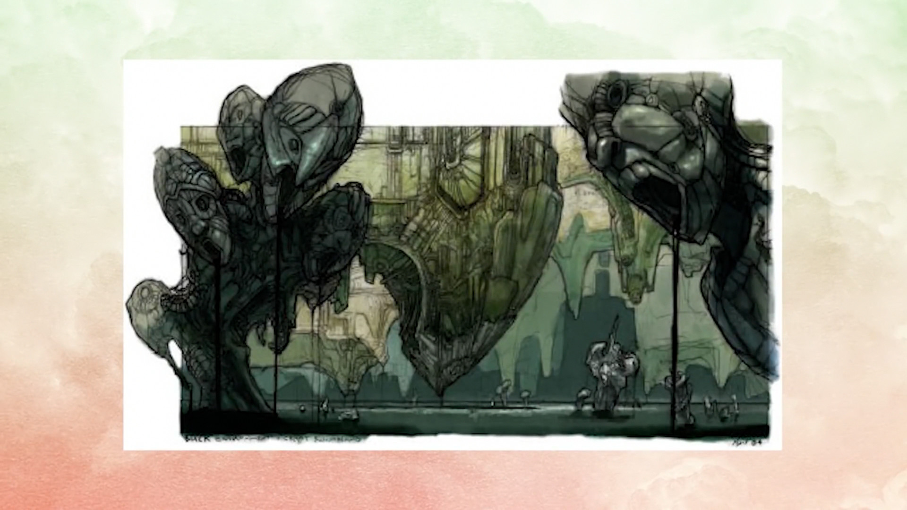
然而在2005年，拉尼卡首次亮相的时候，世界的创造者们并没有能用于参考的支点。 他们需要从零来建立整座城市。 我知道拉尼卡现在和十大公会是同义词，但我此时想强调一下的是：仅仅通过把万智牌带到了都市中心，初代系列就成了多么离经叛道的存在。
万智牌，在核心和起源上就是一个关于资源的游戏。 整个游戏机制都建立在五种基本地和他们代表的颜色之上。 正如我在先前的视频里说过的一样，初代拉尼卡系列成功把这些颜色互相组合的10种方式概念化了， 但这也逆反了基本地的概念，和将法术力视作自然环境产物的思想。
在2005年之前，每个万智牌系列都是以托尔金风的古典奇幻为源头，来给创造设计寻求灵感的。 所有的基本地都回应了这一思路，它们将自然作为展现美和力量的象征。 这10年来，海岛，山脉，树林，沼泽和平原都代表着乡下景观，国家公园以及对天涯海角的浪漫想象。
2003年推出的《秘罗地》系列是对这一传统的第一次打破，但几年后的拉尼卡彻底重新定义了基本地的概念。 把巫师和哥布林带到一个文艺复兴风的城市背景里是在传统之墙上留下的一道裂痕。 拉尼卡视觉上而言是反魔法的，其基本地也体现了这种转变。 画师不再为红色法术力绘制现实意义上的山脉，而是需要去捕捉Jeremy Cranford所称的基本山脉的精华。
为了让概念设计师们能更好的了解在初代系列重现这一理念的方法，他带着团队在华盛顿的周边地点进行了实地考察。 在瑞尼尔山附近的旅行和对西雅图地下城的探索，都帮助了他的团队改良城市背景之下的自然的含义。
给各种颜色制作的共20张基本地是为拉尼卡建立视觉身份的起点。 在这些卡牌之上，我们能清晰感受到他们本就该产生的魔法能量的存在；
沼泽就像是西雅图的地下城一样，雾蒙蒙的，染着一层绿色； 山脉则像画师们在实地旅行时看到的铸造厂一样，彰显激烈的红色； 海岛则坐落于水坝带来的瀑布从之间；树林也理所当然的盖满树林； 而平原则展现了日光之下城市风光的开阔景象。
通过这些基本地，玩家彻底的明白这一系列打破传统、重新发明奇幻世界这一概念的意图。 这种背景上的激进转变也体现在了原始系列的人气卡片“天堂鸟”上。
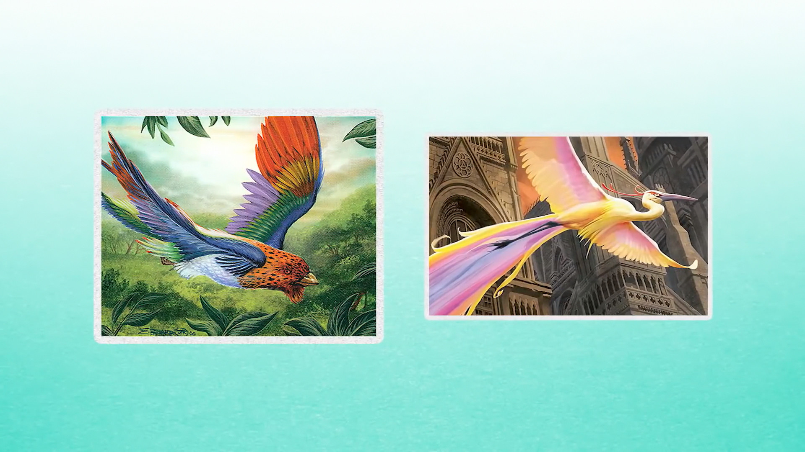
在2005年的时候，这个生物就已经成了万智牌历史上的标志性的一章，在很多核心系列里频频出现，并在《第七版》里迎来了新卡面。 在前两代，这种鸟明显栖息于热带环境，但在拉尼卡里，这种鸟则和背景里耸立的哥特教堂形成了完全的对比。 “很久以前，只要抬头张望就能看到天堂鸟。但由于城市规模的不断扩展，现在天堂鸟已经成为社会精英才拥有的宠物。”引自“天堂鸟”的背景叙述。 这张卡回应的是那种，每当有新的郊区规划、摩天楼取代公园、田野时，我们或许会有的无端焦虑。
所以，在宣传里，在基本地里，在那张备受关注又有些怀乡情感的卡上，城市的存在都是很明显的。 然而浏览最初系列的整个图库，拉尼卡的第一代仍然处在建立身份的过程之中。 有太多卡要么仅仅是对城市有所暗示，要么完全避开了城市。 画师只要把他们的描绘主体和地面上的建筑材料相交互，就可以避开描绘如此错综复杂的建筑物。例如“腐肉嚎狼”、“看守狼”以及“奉还”身后的巨大石块都是拉尼卡建筑的主体。“法庭轻骑兵”四周低厚的拱顶也无需他物，就可以让我们置身于城市之中。但在 “灵佑法师”以及“守护者法印”这些卡上，我们仍在用古典奇幻美学的方式进行构图。 这些卡看上去更像是2005年前后永无止境故事的迭代。
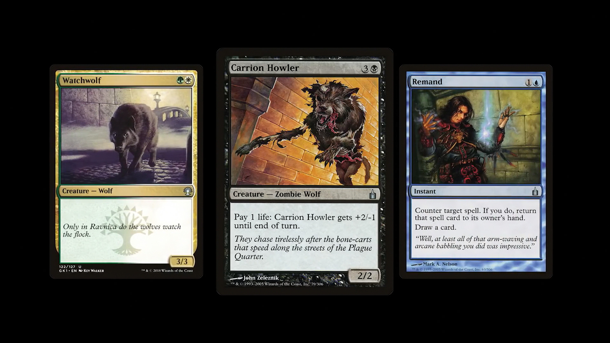
但在 “灵佑法师”以及“守护者法印”这些卡上，我们仍在用古典奇幻美学的方式进行构图。 这些卡看上去更像是2005年前后永无止境故事的迭代。
刃爪小恶魔展示了城市在构图上的引导能力。 锋利的爪刃，荷兰式斜角镜头，直指天空的尖塔和正空袭受害者的小恶魔方向恰恰相反，这一切都提供了一种动感。 其单色的背景也强化了优雅和丑陋之间的对比。
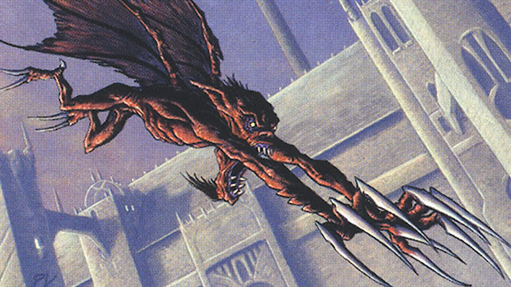
“控驭心灵” 向我们展示了覆盖拉尼卡各处的个体教堂的一角， 而“局部地动”则让我们看到了尖塔，拉尼卡的构成元素之一，未来系列中拉尼卡的决定性特征。
整体来看，对拉尼卡的初次造访是在寻求一个用于后续发展的地基。 其中缺乏相称的世界构建，而城市本身更像是背景板，而不是独立的角色。
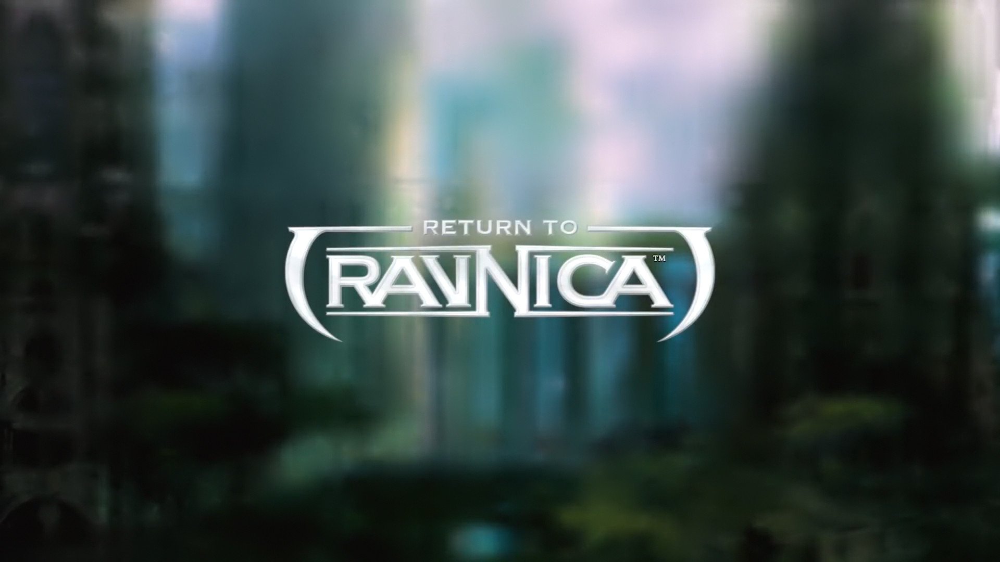
7年之后，《再访拉尼卡》将这些问题从源解决了。
在2012年的九月，艺术总监JeremyJarvis发表了一篇名为《再访拉尼卡的风貌》的文章。 在这篇分为两部分文章里，Jarvis描述了他和他的概念设计师团队升级峰会之城的视觉身份的过程。 他写道：
“为了迎接队伍的到来，我们打印出了原版拉尼卡系列里全部的风格指南和每一张卡面，把他们贴到墙上， 标记出我们觉得方向正确但需要稍微推动一下的卡片，以及需要视觉上的完全重定向的那些。”
除开对公会符号本身的重新设计，拉尼卡另一个需要重做的重要元素是它的建筑物。 文章里很清楚的写明了Jarvis希望不同公会的建筑独特且和彼此不同，同时和他们代表的哲学相统一。 为了做到这一点，Jarvis带来了前途光明的概念设计师Sam Burley作为建筑方面的专家，本着这一精神，我想我也该为本视频做一样的事情。 于是我找来了我的好兄弟Eric Zidarich来讲讲建筑。
好的，呃，我叫Eric Zidarich，我住在威斯康星州的密尔沃基，我毕业于Notre Dame大学的建筑专业。 Notre Dame大学的建筑专业非常注重古典和传统建筑学，而不是现当代的风格。 现在我为密尔沃基本地的高端建筑公司 工作。
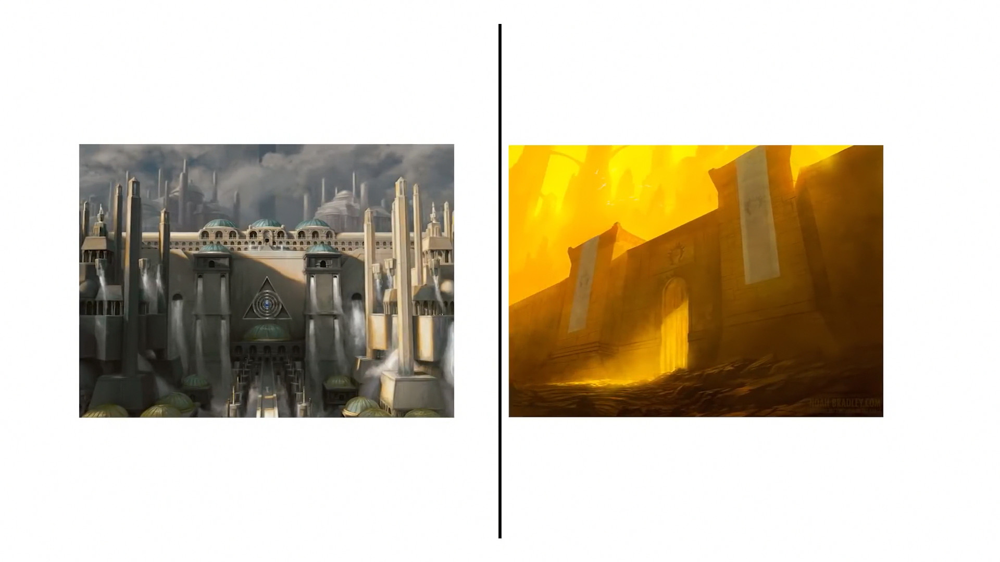
我的第一个目标是处理那些将俄佐立的建筑和波洛斯建筑分开的小细节。 这两个公会在他们的意识形态上有不少的重叠之处，但在贯彻他们理想的手段上则有巨大的分歧。 回到Jarvis的文章，俄佐立的建筑理念是以秩序为重，它迫使人们排列整齐，被法律的重量压制。 Jarvis想要的是一个图书馆和车管所的混血。
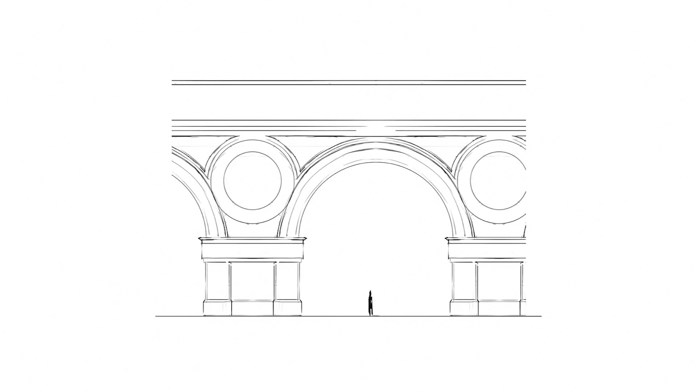
这张画展示了一种对圆的强调以及一个让其居民牢牢处在适在之处的低拱门。 法律审判容不下动摇的余地，而他们的建筑强化了这一思想。 Eric在这个公会的建筑里看到了罗马式建筑的余韵：
哥特式之前的建筑风格被称为罗马式。 这种风格代表着很多厚墙，圆顶拱门而非尖顶拱门，以及支撑建筑的矮粗圆柱。 所以这是种非常坚固的建筑，有些缺乏光亮，通风，深处内部会有一种压迫感。
除了最完备且易于自我维持的三角形装饰以外，俄佐立也让圆屋顶发挥了巨大的作用。 如果拉尼卡的特征是尖塔，那相反的存在就会是将一切的运动固定在地表的有顶建筑。
当文艺复兴时代的建筑风格走入巴洛克时代，圆因为其过于静态的属性而被抛弃了。 而在这里你可以找到和尖塔对比的圆顶， 尖塔是如此的高耸且有煽动性，而这样一来，圆顶就有种池塘中的石头的感觉： 它们只是在那里，不会移动，而且成功的渲染了一种排队等待的感觉： 你将永远留在这里，这些圆顶将永远留在这里，你也是如此。
虽然和俄佐立一样对压迫感兴趣，但波洛斯采用的是更加物理性的方法。 他们是这座城市的军事单位，而他们的建筑也反映了他们想强加到平原住民身上的秩序。

一个简单的问题是，波洛斯建筑的究竟象征着什么？波洛斯的理念是什么？ 他们想让你因他们的存在而感到安全，但是不是以一种父亲般的友好的方式。 他们所采用的是一种压迫的方式，但他们不会一开始就对你承认这一点， 所以我们在寻找的是一种“力量，但带有统治性的暗示”的象征。
如果说俄佐立的建筑有罗马式的风韵，那在我看来，波洛斯像是野性主义。 作为主要材料的水泥具有的冰冷和不为所动的气质， 以及结构带来的强烈重量感，体现了一种混合的征服感。 野性主义不是闹着玩的，它存在的意义是彰显建筑的核心目的，即提供坚实的庇护所。
这种感觉是从何而来的呢？ 从印象塑造的角度来说，力量往往代表着平衡。 我明确知道重量应有的平衡；我知道竖直上要营造一种统治感，我们需要一个常被仰视的建筑，所以你能看到那些陡峭的垂直外观； 我也知道对此应该用一些水平元素加以抵消，所以要有一个非常牢固的基座，要证明我们所有的不是轻率的力量，而是立足于此的稳固力量。 基于同样的理由，我们也需要展现地平面，所以我加上了开阔的步行大道。 这也是再说这个建筑是可以访问的，那里有一条进去的路，而不是彻底，额，阻塞住的。 你明显是可以自由进出的，但你一进去，就会意识到自己在这伟大力量的阴影之下。
奥佐夫集团也同样和强大的力量相联系，不过是以完全相反的方式。 如果野性主义代表着一种只剩下核心元素的建筑，那前几个世纪的哥特风运动就单纯旨在探索建筑物的装饰性潜力，以及装饰对进入者的影响。 奥佐夫代表着奢华，他们通过探索和犯罪活动迎来了财富， 他们的建筑也旨在彰显他们庞大的灰色收入。
哥特式建筑一个很酷的地方是，它可以说是被统治者创造的建筑风格。 这些统治者、法国人他们掌握了大量的权力，他们想到：“我们需要建造一些能彰显我们权利和财富的建筑！” 于是他们开始建造教堂了。
基本上欧洲所有受到天主教冲击的城市都在中心的哪里有一座教堂。 飞扶壁的发明带来了更薄的墙壁，以及安装窗户的可能性。 花窗玻璃在这之后成为了不识字的教徒理解圣经里主要事件的方式，也给建筑里带来了更多光亮。 事实上，进入哥特教堂是能感到强烈的通风感和振奋的，它本就应该是一种和天堂沟通的、令人赞叹的中转站。
奥佐夫的教堂也体现了同样的观点。 再根据Jarvis的文章，我们最后把建筑物变成了过于夸张、华而不实的教堂。 天花板和拱顶高得没有任何实际意义，还装点了成片的花窗玻璃。 奥佐夫的噱头就是无意义的高天花板和拱顶，再配上常人大小的门。
得益于幻想世界的灵活性，画师们也可以把花窗玻璃作为一种可塑材料或者装饰使用。 来自最初拉尼卡系列的“翠鸟彩釉”利用了这种纹路，并给它赋予了鸟的形态； 来自《兵临古城》的“欧佐瓦赋礼”也采用了类似的思路，它常被认为是这一系列里最受玩家欢迎的卡。 2019年，随着《火花之战》的公布，其宣传片彻底拥抱了这一想法。
旅法师（鹏洛客）们，这些游戏里的超级英雄，成为了教堂膜拜的对象。 他们的形象被恭敬的展现在花窗玻璃之中，成为了讲故事的工具，正如那些哥特教堂里的玻璃一样。
和哥特式美学相结合的是中世纪风的拉铎司建筑，这类建筑将火焰般绚丽的风格和他们对痛苦的痴迷建立了联系。 对拉铎司来说，人生就是一场马戏。
他们的建筑也回应了（他们的）核心真理，其建筑所用的形状语言充斥着恶魔般的意向， 他们的拱顶永远高的能让暴动之王本人随时加入他们的演出。 红光和黑色图像是他们的主题，Eric选用了“拉铎司公会门”作为他们风格色调的代表性卡片。
我注意到拉铎司的很多建筑都在往中世纪，城堡式以及炮门垛口的方向靠拢，而不是那种庞大的哥特式方向。 图像中所有的东西都有种鹅卵石的质感。 我更多的感觉是，他们可能也是处在建筑风格的中间点，而不像其他建筑物那样进行了更加激进的处理。 拉铎司是那种“兄弟，我们最懂这种地下城的阴险气氛，我们喜欢这个，要留在这里”的感觉。
吸引到Eric的更激进的公会之一自然是析米克联合，在这个公会身上我们可以看到建筑风格最多样化的融合。 他们发掘利用了几个世纪的建筑学发展，对我来说，最能代表现代世界中布拉格的存在。 它们还带有20世纪初出现的、高度装饰性的新艺术运动的主题。 这一运动的先锋，或许是其中最著名的艺术家阿尔方斯·穆夏被颂扬在布拉格中心的圣维特大教堂的彩色玻璃上。 析米克，就像穆夏一样，对繁荣、美和将生物学作为美学的激励源头抱有兴趣。
我认为析米克会有他们自己的子类别，即脱胎于生物形态的建筑本体和建筑之内的更加数学化的设计。 他们是风格的大杂烩，而这种风格某程度上反映了他们对待自己生物，变种人和士兵的方式，就是说那种是实验性的，把所有东西合在一起的倾向。 这个公会的建筑是非常非常有趣的，因为它真的有欧洲城市的感觉。 沿街走，你能看到一种风格紧挨着一种风格又紧挨着另一种风格，这种时间跨度上不同风格的混合带来了那种有趣的感觉。
此外，明显前景和背景也是截然不同的，但我认为这只是在表明析米克公会的大杂烩风格，生物和其他所有东西都是混合的。 这副图里，虽然各个建筑是迥异的，但作为整体来说，图像本身是种合成物。
Jenn Ravenna的“滋生之地”也是析米克理念的典型具象。
我觉得这张卡真的拿捏到了那种新艺术运动的感觉。
它仍然是有秩序的，你可以看到这里有一系列的拱门，
不过这些拱门的细节要比其他任何建筑，不管是哥特的还是罗马的又或者是文艺复兴时期的建筑都要大为不同，
但就算是这样，形式的秩序还在那里，虽然细节的已经遗失了。
还有，这个建筑物让我想到了高迪的作品。
那么，在建筑方面，析米克是最实验性的，也因此是最梦幻的。 他们发展自己设计的过程不需要和我们世界的交互。 通过这种方式，他们也许代表了一种前往未来的路，以及对未来的一个世纪内城市生活的潜力的思考。 此外，这一想法让我想到了关于拉尼卡的最后一点。
就像Eric和Titus之前说过的，拉尼卡是人类几个世纪的发展浓缩在幻想虚像中的样子， 这是一座冲突的理念可以共存，允许在属于自己的区域里尽情展现生活理念的城市。 公会是这些理念的投影，他们通过大幅简化的设定（simplified tropes）来明确理念上的分歧， 但我通过这个视频所想表达的是： “建筑，也可以交流理念”他们虽然浅薄和装饰性的存在，但也可以作为故事叙述的一部分和表明身份的图腾。
而且幻想故事一直以来，都在某种程度上是在想象遥远的过去或者真实的未来里的生活。 拉尼卡的建筑物和我的分析探索了光谱的左右两个极端。 通过这些卡片，我们可以回顾一个非常真实的人类历史， 踏足另一个宇宙并思考一些当下困扰我们的棘手问题。 其中一个问题是： 千年之后，我们的城市会变成什么样子？ 剩下的四个公会给出了一些答案。
葛加理认为一切都会变成废墟。他们代表着从恩典之中的初次坠落，认为最终自然将吞噬一切。 Stephan Bella Dean的“蔓生墓园”是这思想的体现。
它展示了一个被藤蔓和苔藓覆盖的、带有圆顶和尖拱门的典型拉尼卡建筑。 它深处地下，也许处在拉尼卡的某个主要下水管线之旁，讲述了一个以时间为度量的故事。
其他的卡片，比如Vulcan Baga的葛加理长足虫则认为生命可以继续存在，并在地下世界繁荣。 也许人类社会可以找到无需太阳也可以生存的办法。 《生化危机》系列中的浣熊市也采用过这种思想， 不过葛加理的方式似乎在暗示堕落的文明将滋生某种可怖的存在。
瑟雷尼亚则处在硬币的反面，他们大部分的建筑都利用了某个古代城市的残垣。 他们同样相信生命的苏生以及自然世界和人造世界的共生关系。 瑟雷尼亚的卡面展现了一个更加光明充满希望的未来，他们把过去的错误变成有纪念意义的发展新起点。 裂缝里成长的树木并不是碍眼的东西，而是新建筑的中心，是该被保存乃至崇拜的存在。 如果自然要颠覆整个水泥世界，那瑟雷尼亚就将把它当作一种积极、甚至也可说是装饰性的力量。
他们的另一方向的极端则是完全机械化的工业废土伊捷联盟。 我在之前的视频里说过那是魔法版的《银翼杀手》。 这世界中自由奔腾的河流、树林的痕迹都已经完全消失，取之而代是发展到极致的城市景观。 我想他们会觉得纽约市的地铁系统自在如家，毕竟那里也满是全机械化环境的副产品——污垢和灰尘。 伊捷认为，如果世界真的要完全被工业覆盖，生命也仍然会全力冲锋。
这样一来， 就只剩下最后一个需要考虑的公会了。
我想用这张图片来给之前所有对建筑功能和城市身份的思考做个总结。 这是Alexander Forssberg所绘的“古鲁公会门”。如果葛加理代表着文明的第一次崩坏， 那么瑟雷尼亚就代表终将到来的重建和与废墟的和谐共存， 而古鲁就代表着一切崩倒的时刻。
视频的最开始我就说过，万智牌核心上是个关于资源的游戏。 一切都环绕着基本地的理念展开。 拉尼卡踏足城市中心，探索了发达世界的各个方面， 但古鲁坚定的拥护回归田园。 他们是自然的使者，他们想要让文明想起它的起源，并侵略式的扫清一切脱离了起源的建筑。
这张图片是完美的，它简洁，易于理解，引人发笑。 它传递了一种对都市扩展的深远抵抗，并提醒我们自然本身就是最强大的力量。 火把是一种反拉尼卡的存在，它呼应的是旧时代奇幻《龙与地下城》的美学。 门四周塌倒的石块让人想起公会之城的主要建材，门上古鲁的血涂鸦也适得其所。 这其实说不上是公会门，而更像是一声回归原始的战嚎。食物，庇护所，土地，这就是动物本能的精华。
我将以Calvino小说中的最后一个想法结束。 在凝视这些本质的景观之时，忽必烈想到了维持城市的无形秩序， 裁定城市兴起、成形和繁荣的规则， 城市适应各种季节的方法，以及它们最终融入并倒在废墟之中的样子。
译后
- 来自评论区，作者解释了没有提到底密尔会堂的原因 - 以防有人好奇，底密尔会堂占据了城市的全域，他们的建筑是多种我提到的元素的融合。 他们的角色是动态的，在所有空间中移动，他们的公会门也像是建筑和建筑这件的隐藏通道。 每个区域都，在一定程度上，属于这些阴险的间谍和刺客。 如果想更深入的理解底密尔，我高度推荐Groucho Marco的视频：https://youtu.be/Ai7wQNk7dO4
鸣谢
atr

一瞥《万智牌》卡牌的背面，你会找到另一个时代的遗产，一种图像设计和古典幻想美学融合而成的化石。 这是整个游戏历史中唯一一个没有改变的图像：层次丰富的正面没几年就会被抹掉重做，但卡的背面一直是那张1993年华盛顿对巫师魔法书的想象的快照。 壳环的中央是《万智牌》系统中也许最精巧的元素：这五个原点好比音阶的八个音符、拉丁字母表的五个元音和二十一个辅音。 这是指导游戏核心理念的五色魔法能量。 他们构成了一个完美的五边形，通常被称为“派”和“轮”。 就像五度圈一样，每一个颜色彼此之间都有一种联系。 但和五度圈不同的是，合奏中的每个音符也有他自己的本质。 白、蓝、黑、红、绿，所有颜色都是由其内涵和游戏伊始时卡牌最初的几次迭代共同定义的。
红色，举个例子，是热情的颜色。
红色保有愤怒和主动性，一种欣然以及焦急。
每个颜色典例的根基都深入人心。
简单来说，这个游戏的成功是和“不同颜色该行不同之事”的思想交错盘联的。
白色应有自己的强处和黑色可以利用、蓝色可以补足的弱点。
这是因为颜色的安排不是随意的：每个颜色都有两个邻居和两个对面。
用《万智牌》术语来说，临近颜色被称为盟友，而轮盘对面颜色被视为敌人。
早期《万智牌》的设计较好的实施了这个概念。
但直到2005年，颜色的盟友和敌人这一概念才完全成型，并给游戏的未来打下了基础的框架。
 《拉尼卡工会城》对游戏研究和发展的最大贡献是作为系列代表的十个二色派系。
引用Rosewater的话，“拉尼卡提供了理解颜色派的新方法，化为10部分而不是5个。”
这些公会翻倍了可用的设计空间，还事实上翻新了卡背上传承了12年的的技术水平。
这就好像是将和声和旋律结合起来。
拉尼卡在那之后就成为那个真正意义上在乎派别的万智牌世界。
一个派别（Faction），在《万智牌》的语境下，必须占有一个艺术创造上和游戏机制上的身份。
派别必须可以被分为各组，并且可以和具有不同的艺术机制身份的其他派别区分开。
按照颜色分类其实并不是完成这一步目的的唯一方法，比如你还可以做生物部落，但就《万智牌》的情况而言，这一方案是最优雅的。
仅次于拉尼卡的方案，举个例子，是鞑契。鞑契将颜色派按三色楔形分类，用上了所有拉尼卡工会的设计原则来构建了五个部落。
阿拉若也把颜色派三个一组分类，不过其派别不是靠颜色分组，而是按照世界划分的。
提到这些，我是想说这些卡片背后的小环是《万智牌》创造的最成功的那批IP中的一个的巅峰。
正因如此，我想从颜色的角度来考察一下拉尼卡，即从指导了游戏设计的理论意义上出发，也从字面意义上，在画布上铺展开的绘画的颜色出发。
《拉尼卡工会城》对游戏研究和发展的最大贡献是作为系列代表的十个二色派系。
引用Rosewater的话，“拉尼卡提供了理解颜色派的新方法，化为10部分而不是5个。”
这些公会翻倍了可用的设计空间，还事实上翻新了卡背上传承了12年的的技术水平。
这就好像是将和声和旋律结合起来。
拉尼卡在那之后就成为那个真正意义上在乎派别的万智牌世界。
一个派别（Faction），在《万智牌》的语境下，必须占有一个艺术创造上和游戏机制上的身份。
派别必须可以被分为各组，并且可以和具有不同的艺术机制身份的其他派别区分开。
按照颜色分类其实并不是完成这一步目的的唯一方法，比如你还可以做生物部落，但就《万智牌》的情况而言，这一方案是最优雅的。
仅次于拉尼卡的方案，举个例子，是鞑契。鞑契将颜色派按三色楔形分类，用上了所有拉尼卡工会的设计原则来构建了五个部落。
阿拉若也把颜色派三个一组分类，不过其派别不是靠颜色分组，而是按照世界划分的。
提到这些，我是想说这些卡片背后的小环是《万智牌》创造的最成功的那批IP中的一个的巅峰。
正因如此，我想从颜色的角度来考察一下拉尼卡，即从指导了游戏设计的理论意义上出发，也从字面意义上，在画布上铺展开的绘画的颜色出发。
 我对“艺术方向和游戏机制是如何互相影响的”、“如何同样被悠久的消费者期待推动”这两点很感兴趣。
我想解开拉尼卡独有的怪异悖论，即：“你如何从彼此之间分清10个颜色对，又同时提供一个共通元素来把他们固定在一个世界？”
我对“艺术方向和游戏机制是如何互相影响的”、“如何同样被悠久的消费者期待推动”这两点很感兴趣。
我想解开拉尼卡独有的怪异悖论，即：“你如何从彼此之间分清10个颜色对，又同时提供一个共通元素来把他们固定在一个世界？”

拉尼卡的颜色
“在《万智牌》里，想在老东西上加上新东西的高难度远近皆知，因为你要对抗怀旧感，对吧？
你必须，在一开始的时候，就告诉自己你是打不赢怀旧感的。那是不可能的。”
这段话的发言人是Titus Lunter，一个为《万智牌》工作的知名画师，
他曾是《拉尼卡峰会城》的概念推动组（Concept Push）的一员。

“所以你需要做的，是从另一个角度来处理它。你必须无比的忠于这个位面，但你不必去弄清楚这个位面的每一个角落。
你必须要弄清楚的是这个位面对玩家的意义。
所以对我来说，更重要的是弄清楚拉尼卡对玩家意味着什么、玩家又是怎样体验拉尼卡的，而不是执着于这个位面的技术性细节。”
Titus和他的概念设计师同事面对的一个挑战是捕捉拉尼卡那萤火一样的精髓。
和一般看法相反，回归已有的世界进行创造要比创造新世界要难很多，这一现象的部分原因是怀旧感，当你回到一个拉尼卡一般深受喜爱的世界时更是如此。
 身为都市世界（Ecumenopolis，一种完全由城市组成的世界），拉尼卡第二个最与众不同的特点是建筑物、窗户和鹅卵石街道无处不在。
用叙事设计师Alison Luhr的话来说，
身为都市世界（Ecumenopolis，一种完全由城市组成的世界），拉尼卡第二个最与众不同的特点是建筑物、窗户和鹅卵石街道无处不在。
用叙事设计师Alison Luhr的话来说，
“拉尼卡是一个以布拉格为原型的城市世界。其受到10个不同的公会管辖（每个都监督着魔法都市生活的不同方面），
一个远古的魔法协议让他们彼此间不能公开交战，而这带来了水面之下的种种诡计。”
 比起文艺复兴时代的欧洲风格，公会本身就是拉尼卡身份的中心。
在这座城市，这些派别可以找到他们的自我表达的最高级形态，而在某种意义上，他们的行为也是这种极端前提决定的。
我想说的是：葛加理就应该栖居在下水系统并负责回收利用所有都市居民产生的废品，只有这样才说的通。
只有在城市里，俄佐立的警察才能行使他们关乎秩序和正义的严苛教条，也只有在城市里，军队才能时而担当起公民防御职责，时而作为武装警卫存在。
在某种达尔文主义的意义上，是环境塑造了公会的形态，并在结果上塑造了带领他们的玩家的性格。
比起文艺复兴时代的欧洲风格，公会本身就是拉尼卡身份的中心。
在这座城市，这些派别可以找到他们的自我表达的最高级形态，而在某种意义上，他们的行为也是这种极端前提决定的。
我想说的是：葛加理就应该栖居在下水系统并负责回收利用所有都市居民产生的废品，只有这样才说的通。
只有在城市里，俄佐立的警察才能行使他们关乎秩序和正义的严苛教条，也只有在城市里，军队才能时而担当起公民防御职责，时而作为武装警卫存在。
在某种达尔文主义的意义上，是环境塑造了公会的形态，并在结果上塑造了带领他们的玩家的性格。
如果说拉尼卡给《万智牌》带来的最大财富只是这些派系营销上的优势，那就未免有些太不负责了。 作家Rob Bockman对这一系统进行了漂亮的批评，点明了拉尼卡的“测测你的公会”和“相信星座”、“哈利波特分院测试”的相似之处。 这种性质的人格分类让我们从细微差别的个人主义里走出来，选择了建立玩家间的相同支点。 再次借用Bockman的话，拉尼卡的公会满足了人类的两种被营销利用的冲动：情感吸引力和对熟悉感的追求。 在你选择一个工会的时候，你同时也流露出了很多你身为一个人和玩家的信息，不过是以一种抽象和相对性的方式。 这些颜色对永远没法完全代表他们最忠实的成员，而且毫无疑问，我们每个人都会有感觉更欧佐夫一点的时候，也有更析米克一点的时候。 但这是这个世界最有趣的部分，也是《万智牌》粉丝频频回访这里的原因。
《拉尼卡峰会城》的预发布是有史以来最成功的，而这是理所当然的。 这是让《万智牌》和我们之间的距离拉近一半以上的世界，一个总比其他世界感觉更像是家的世界。 正是因为这样，Titus Lunter和概念团队知道他们可以依靠对城市的怀旧感和对公会的熟悉感来重塑这个世界。 他们没有回避这种怀旧，而是选择将其以一种叙事手段来接纳。 拉尼卡现在是秋季：落叶飞舞，街道被午后的冷雨打湿，若隐若现的冬天迹象开始在市民中煽动起无端的担忧。 有什么糟糕的东西要来了：天气已经为后日的破坏设置了阴谋。
“如果你进一步推动已经和非常极端颜色，就是说伊捷的亮红和蓝色，
或者平原阵容的亮天蓝色和黄色，相联系的拉尼卡。

如果你开始将其推动到更静态的颜色板，那种依尼翠所在的更暗的黑暗，你要如何区分这两个位面？
所以我们要做的第一件事就是弄清楚如何从艺术设计的角度区分不同的位面。
前景，中景以及背景，天空和大地的联系。如果你要将一副图像简化为绝对的基础元素，且只能使用三种颜色和三种形状，那你会为拉尼卡选择什么？
首先，考虑到秋季和雨天，天空中要有灰色：这我们知道了。
建筑应该是什么样的？我们应该有一种压迫感。
这就是说从艺术的角度来看，天空和建筑的颜色关系和明暗关系应该是非常接近的。
如果你让这两者之间出现了较大的反差，他们就会失去一体感。

我们把建筑的颜色朝稍微更黑暗的方向推动了一下，因为这样一来，他们就有了种令人忧虑的压迫感。
我开始将天空看作是朋友。现在正在下雨，但它有的是更温暖的一种灰色。
这不是夏天般的温暖，但也不是冬天那样冷酷的灰色。所以我们正处在这中间的位置，而且我们很享受这场雨。
我们不喜欢的是建筑和官僚主义的压迫感。
所以我们把建筑推向了更冷的范围。这就是为什么很多屋顶都从红色改成了蓝色。”
拉尼卡正处在冷战之中。公会已经习惯了这种冲突，但创意团队想把这种感受从这些常客那传递到我们这里。 这就是“全城拘捕”在卡面和背景叙述里打破第四面墙的原因。
这就是“全城拘捕”在卡面和背景叙述里打破第四面墙的原因。
来自《核心系列2019》的“孤立”以及《拉尼卡峰会城》的“盟会裁定”也想让我们和被压迫者相联系。
 “寒意蔓延”也做了类似的事情：我们可以感受到转角处的危险。
影子指明了即刻的危险，但地上的落叶和斗篷下忧郁的脸都暗示了更糟的东西存在的迹象。
“寒意蔓延”也做了类似的事情：我们可以感受到转角处的危险。
影子指明了即刻的危险，但地上的落叶和斗篷下忧郁的脸都暗示了更糟的东西存在的迹象。
《万智牌》玩家已经习惯了新位面亮相的系列带来的戏剧化开场，但现在家被外界力量威胁的感觉让赌注更大了一些。 将拉尼卡设定在秋天是为了迎合开两个主要目标：邀请画家切换调色板，配合已经建立的视觉象征重新想象一个世界。 同时也要伸展到卡片之外，和北半球民众在日常中目睹的变化相合。
要做到这一点，应该用和其他娱乐媒体一样的方式来给玩家和游戏建立联系：我们倾向于在10月份看恐怖片，在一年末尾时惬意的享受圣诞经典。 考虑到我们已经两次访问过拉尼卡了，而且两次都是秋天，游戏正将现在和过去联系起来。 如果你在《重返拉尼卡》时期进行游戏，或者从系列亮相的时候就开始玩，你或许会开始比较这段时间里你人生的种种变化。 事实上，只要在类似的时间回到熟悉的位面，《万智牌》就可以养成属于它自己的怀旧感。
就个人而言，我很欣赏这位面上季节的变化。
仔细研究目前介绍过的公会，我们可以惊喜的看到各对颜色里的元素集表达秋天的方式。
我们可以在生活中花上一整天在城市大门附近漫步，观察季节是如何向我们展露它的颜色的。
波洛斯被描绘在黄金时刻，升起或下沉的太阳的光芒让所有人都看起来处在巅峰。
这是一天中最转瞬即逝的时间，对在乎快速行动的公会来说是一种完美景象。
波洛斯拥有红白两色，所以粉色和橙色装点了他们的装甲和饰物。
 他们闪闪发光，有种正义性的气质，而太阳则处在他们图像的最中央。
“所以对波洛斯而言，他们的建筑其实有一些小变化，建筑上现在有了更多的金属装饰，这是我们决定要追求的方向。
虽然从概念的角度讲，波洛斯已经定义的相当完善了，但建筑商还有很多发挥的空间。
我们知道他们的几何形状，但装饰是否有些许不同呢？是的，因为他们算是拥有了更坚硬的边缘。”
他们闪闪发光，有种正义性的气质，而太阳则处在他们图像的最中央。
“所以对波洛斯而言，他们的建筑其实有一些小变化，建筑上现在有了更多的金属装饰，这是我们决定要追求的方向。
虽然从概念的角度讲，波洛斯已经定义的相当完善了，但建筑商还有很多发挥的空间。
我们知道他们的几何形状，但装饰是否有些许不同呢？是的，因为他们算是拥有了更坚硬的边缘。”
 视觉上来讲，波洛斯并没有多少魔法元素。
他们反而选择炫耀起武器和装甲。他们是士兵和骑士，不是巫师，他们在街道上的形象很有重量感，就仿佛是这些材料的重量把他们留在那里了一般。
视觉上来讲，波洛斯并没有多少魔法元素。
他们反而选择炫耀起武器和装甲。他们是士兵和骑士，不是巫师，他们在街道上的形象很有重量感，就仿佛是这些材料的重量把他们留在那里了一般。
瑟雷尼亚则是在白天漫步拉尼卡的另外一个公会。
唯一的区别是此时太阳正高悬于天空。
它明亮耀眼，充满希望。瑟雷尼亚代表着城市中自然世界的纯净表达。
Sidharth Chaturvedi所绘的“同袍情谊”是瑟雷尼亚的画作典范。
注意光照是如何把面部表情从中心人物凸现出来的。
淡蓝色、大气的背景和丰富的绿色互补，而白色的服装和绒毛让这幅画作保持平衡。
青苔、岩石还有树木是这个公会中最常出现的元素，人物周遭的景色里有，生物自身的着装上也有。
 橙色也同样出现在瑟雷尼亚里，给他们的调色盘带来了活力。
考虑到绿色和橙色是一个色环三角中的两个角，“半人马调停人”和“盟会骑兵”卡面上的树叶在它们的环境中显得十分突出。
美国观众会把这类色调和感恩节、玉米片和对丰收的庆祝联系起来。
瑟雷尼亚在温度下降的情况下培育了温暖。
这个公会的一个异类是Nils Hamm所画的“玫瑰鬃半人马”。
半人马的秋季色调很好利用了一阵冷风带来的伤感，而且和有“什么邪恶的东西即将到来”的场景设置非常吻合。
橙色也同样出现在瑟雷尼亚里，给他们的调色盘带来了活力。
考虑到绿色和橙色是一个色环三角中的两个角，“半人马调停人”和“盟会骑兵”卡面上的树叶在它们的环境中显得十分突出。
美国观众会把这类色调和感恩节、玉米片和对丰收的庆祝联系起来。
瑟雷尼亚在温度下降的情况下培育了温暖。
这个公会的一个异类是Nils Hamm所画的“玫瑰鬃半人马”。
半人马的秋季色调很好利用了一阵冷风带来的伤感，而且和有“什么邪恶的东西即将到来”的场景设置非常吻合。
“我叫Ryan Pancoast，我是个自由画师。我主要为《万智牌》工作。我以传统的方式绘画，以油彩为主，我已经有10年经验了。”
 “暮秋骑士”是本系列里另外一个杰出的插画，我想稍微深入一下Ryan的创作过程。
“暮秋骑士”是本系列里另外一个杰出的插画，我想稍微深入一下Ryan的创作过程。
“在选择颜色的时候，我有在尝试找到一个关键颜色来给整个画作打下基础。所以我知道秋天的颜色是非常重要的。
所以，在基本上意识到这点之后，我着重强调了她的头发。所以她的头发是亮橙色的，在这之后的全部都是基于它的。
我知道我想在她的后方留下一个云开日出的景色，就好像雨已经离开了，太阳渐渐露出，在整个景色上铺开一片薄雾。
但我仍希望留下颜色的全域：我不希望阳光盖过其他颜色。”
Ryan也提到了他先前的作品“好斗树灵”来讲解骑士身后的士兵。
这里的马主要由树枝和嫩叶构成，而橙色又一次给这张画带来了一种飘渺的质感。
它给这组哨兵一种推力，好像在动员他们加入战斗。
 对Ryan来说，准确掌握这种色调是很重要的，他要避免了整个调色板被单一颜色盖过。
对Ryan来说，准确掌握这种色调是很重要的，他要避免了整个调色板被单一颜色盖过。
“于是我拿来了她头发所用的橙色，仔细审查了一下，然后想到‘唔，要有多蓝的背景才能让它显得蓝呢？’
事实证明，背景并不需要变得多蓝就可以让发色呈现出蓝色的感觉。我经常会做出这类判断。
我经常选择一个颜色，然后把它作为其他一切的中心。
于是最后我没有把完全的蓝色和完全的橙色放在一起。我用那独一个颜色调和了一切。
拉尼卡的其他三个公会不会在白天出来。 伊捷只在他们制造的雷暴中现身。 他们的天空回应了Titus Lunter稍早的评论：满是混乱的温暖灰色。 伊捷视角下的拉尼卡有种被污染和霓虹般的质感，像是除夕夜的时代广场或者《银翼杀手》里的洛杉矶。 高饱和的粉色击打在电光的蓝色之上，让这些卡片微微震动。 伊捷的爆炸是一触即发的，满是粒子的空气允许画家在画面整体上填满狂乱的能量。
在这混乱之下潜伏着葛加理群落。 他们是被抛弃者，司掌腐朽的王族。 那种人造的，几乎是化学般的绿色出现在他们的一些卡片上：那些生长在城市废物的蘑菇正辐射出这种光芒。 葛加理是被憎恶者，被拒绝者，是天黑后在小巷和杂草丛生的停车场里打棒球长大的坚韧孩子。 如果秋天是一个恐怖电影，那我们已经找到了里面的怪物，当地下世界的野兽来到地表作乐，他们会夺下一切。
月亮照耀着戈尔贡的头发，但一切都染上了些许海蓝色的微光。 葛加理是被忽略者，于是在他们的着装和姿态上，他们表明了自我。
拉尼卡在改变，这一系列的所有公会里，第五公会迎来了最大的机制和视觉上的翻新。
曾被称作是不存在的公会的底密尔已经被完全改造了。
他们是可见的，然而止对我们--游戏的观察者，如此。在Mike Linneman的观点里，底密尔是奇幻版的黑**。
卡面一遍又一遍记录下他们实施犯罪前的身姿，不管是暗杀还是背叛之前。

他们潜伏在夜晚，在满月的黄光之下。 深沉的蓝紫色凸显出他们皮革般的斗篷和浮动的披肩。 在秋天，太阳落下的越来越早。我们在室内的时间开始变长。 我们变得有那么点更内向，更倾于反思自我。我们摘下白天工作时必须佩戴的面具，把他们换成我们对自己本身的理解。
底密尔为城里夜晚着装打扮，带上了首杯鸡尾酒第一口赋予的恶魔般的能量。 他们是夜的守望者，秘密的守护者。 就这样，五个公会就像是五角形的颜色上彼此独立。 他们存在与一个虚幻的世界，一个利落的分为10个整齐派系的城市。
在意大利，一年两次，Siena的市民会集结于所在社区的旗帜。 他们各自选出马匹和骑手来在鹅卵石广场竞速，时常产出一些断腿事故和满是瘀伤的骑手。 比赛的胜利者会成为他们社区的冠军，同时也就成了Siena的冠军。 马也会在大教堂得到歌颂。这是个大事。
拉尼卡的诗意所在是在每次迭代之后，它和家之间缩短的距离。 这个表现了政治纷争的紧迫感、敌对仇杀、废物管理的问题 以及很多其他伴随着市中心生活的结症的奇幻世界和我们的距离并不是那么遥远。 回到我最主要的问题：是什么让公会间彼此不同，又让他们成为一个统一整体的一部分？
最终答案是城市的特性本身。就像我们不能一次体验到完整的拉尼卡， 而被迫通过一系列静态的图像、不连续的角度、对遥远尖塔的一瞥和各种区域来想象它， 无法通过地图和三位数字导游来具体掌握它一样，我们同样无法一次体验我们所在的城市的整体。
我们反而生活在它们之中，成为一个生活在繁忙、费解且令人紧张的钢铁丛林和噪声间的市民。
有时，我们珍惜公正、秩序、法律和自然的价值。 我们在夜间前往音乐会和咖啡馆，并和周围舞者的节奏同步。 我们坐在城市公园里，一边观望日落一边品尝葡萄、投掷飞盘。 我们抚摸爱犬，投喂看门的猫。 每一次造访，城市都显得不尽相同。 时间推移，我们察觉到气温的下降，心里滋生了一种焦虑。 我们向过去的自我寻求指引。 在无法解答的问题迷雾之中，我们选择在色轮和卡牌游戏身上寻求基础。 今天，我是红蓝两色的。
用Calvino的话来说，“城市就像梦境，是希望与畏惧建成的， 她的故事线索是隐含的，组合规律是荒谬的，景观是骗人的， 并且每件事物中都隐藏了其他的什么。”
译后
鸣谢: atr
Physical Animation in Star Wars Jedi: Fallen Order

大家好，感谢各位的加入。 我的名字是Bartlomiej Waszak。 我是在Respawn工作的高级软件工程师。 在这次展示里我打算讨论一下，《星战：绝地陨落》中，在动画人物上应用物理效果的不同方法。 那么，究竟什么是物理动画？ 物理动画代表我们不是单纯的播放一个动画，而是可以使用物理引擎驱动身体来逼近动画中的姿势。 这样做的后果之一是：应用物理引擎的时候，我们可以引入碰撞检测机制。 我们在播放动画的同一时间里可以检测碰撞防止穿模。

在这段视频里我们有两个播放相同动画的角色，左侧的角色只是在播放一般的动画。 但右侧第二个角色，我们在同样的动作里用了物理引擎。 我们能看到左边的角色会出现穿模，而右边的角色通过简单调整动画避免了碰撞。

我们大体上有三种方法可以实现用物理驱动的方式来跟随动画： 第一种方法是使用发动机，发动机是常规身体部件之间的关节约束的一部分， 他们使用一种特定的动画目标来生成互连身体部件之间的局部驱动力。这种局部力会驱动身体来跟随特定的动画目标。 第二种方法是使用速度，在这个案例里，我们通过一定的帧时间来计算身体移动到某位置所需要的速度。 通过这种方法，我们可以用强制身体移动的方式来达到动画目标。 第三种方法则是使用约束，这里我们在布娃娃的动态身体和动画目标之间增加一个新约束， 这个新约束的全部参数定义了动态身体如何跟随动画目标。
在我们的游戏里，我们最开始通过发动机来添加物理动画，所以这是我们要讲的第一个方法。 我们最初在风暴兵被主角原力牵引的时候加入了发动机，此时风暴兵的主干是纯几何的（kinematic）， 这就是说，这部分是严格跟随动画的，但其他部分都是由发动机驱动的。 而这些红柱子...红色的物体代表纯动画里的姿势，就是说没加任何物理效果。 我们可以借此观察物理动画是如何让腿部的碰撞和环境的交互变得栩栩如生的。 这是种双向的交互，在没有任何物理效果的纯动画里，红色物体只会在碰撞时穿模。 我们的游戏用了虚幻引擎和Nvidia Physics的物理引擎，我想分享一些有关我们实现的根本细节。 首先，我们必须正确设置一些物理参数： 第一个参数是求解器的迭代次数，虚幻引擎发动机的默认值是8（位置）和1（速度）， 但这个设置基本上是不能用的。在我们的游戏里，或者你创造自己的实现的时候，总的来说，你需要调高这些值，你得找到适合你的实现和需求的值。 我们找到的是64和32。 接着我们给所有关节启用了eACCELERATION标记，这让我们可以更轻松的设置参数，特别是和质量相关的参数。
此外还要讲一下摩擦和补偿，这些参数容易给物理动画带来很多问题，较高的摩擦数值会让物理动画难以达到动画目标，一般我们只会给摩擦和补偿使用较低的数值。 在这个原力牵引风暴兵的场景里，我们实际上完全没有设置摩擦，这是为了让物理动画更容易达到动画目标。 另一个有关实现细节的重要话题是连续的碰撞检测，你需要开启这个才能获得高质量的结果。但对同一个布娃娃上的身体部件来说，最好禁用连续碰撞检测。 整体上最大的问题是，你一旦开启连续碰撞检测，物理引擎约束里的投射就会出问题。 所以最后我们写了自己的代码来给所有关节做线性投射。 对每个关节，如果两部分离得太远了，超过了阈值，我们就把他们拉近一些。
除了被牵引的风暴兵以外，游戏里另一个用了物理动画的场景是风暴兵的死亡场景。 这里我们只单纯播放了一个死亡动画，就像你看到的那样，动画出现了非常严重的穿模，其动作幅度本身就很大。这里面我们只在动画的最后一段启用了常规的物理引擎，以获得那种重力下自由落体的感觉。

这个解决方案在开阔场景之下很有效，但遇上其他碰撞，就像我们看到的一样，效果并不是很好。四肢都碰撞穿模了，整体上也不是很自然。 为了改善这个死亡场景的动画序列，我们在整个角色身上开启了物理动画，我们给所有关节都启用了发动机，但主要的问题是： 如何处理根身体？
 在这个例子里就是臀部。它不能设置成纯几何的，这样就和动画一致，它很容易就穿墙了。
但我们仍想要让根身体去严格跟随动画，做出那些夸张的翻转动作。
所以我们既需要碰撞，也需要根身体去跟随动画。
这个问题的解决方案是，让臀部处在物理模拟的状态下，同时给那部分创造一个新的约束。
这个约束作用于臀部和动画目标，算是会牵引臀部骨骼的物理形体去跟随动画目标。
为了实现这个约束，我们移除了所有自由度，锁定了直线上和角度上的运动变化。
这种设置最能匹配动画中的那些夸张的翻转。
在这个例子里就是臀部。它不能设置成纯几何的，这样就和动画一致，它很容易就穿墙了。
但我们仍想要让根身体去严格跟随动画，做出那些夸张的翻转动作。
所以我们既需要碰撞，也需要根身体去跟随动画。
这个问题的解决方案是，让臀部处在物理模拟的状态下，同时给那部分创造一个新的约束。
这个约束作用于臀部和动画目标，算是会牵引臀部骨骼的物理形体去跟随动画目标。
为了实现这个约束，我们移除了所有自由度，锁定了直线上和角度上的运动变化。
这种设置最能匹配动画中的那些夸张的翻转。
问题是，这个新的解决方案下，当我们有一个障碍物的时候，
就是说，如果臀部撞到墙上，但动画目标还在前进的话，
我们该怎么处理撞墙的物理形体？
我们的选择是检测根身体实际位置和动画目标的距离：
如果驱动臀部的约束没法跟上目标，达到一定阈值时，我们就将布娃娃变为自由落体模式。
看起来就是这样的。

这是用了物理动画的同一个动画序列。我们可以看到根身体是怎样判定撞墙，然后布娃娃进入自由落体模式的。这种方法在我们的案例里很有效。 在我们先前说过的这些场景里，重点是紧密匹配动画，同时支持碰撞，这就是我们游戏里风暴兵的案例。 但现在我想谈谈我们给主角做的物理动画。 事实上，我们后来发现“碰撞”其实不是很重要，自然动作富有变化的感觉和流畅度才是最重要的。
首先是主角沿边缘攀爬的场景，一种特殊的行进方式。 这里主角的手部和前臂是纯几何的，完全跟随动画目标。 其他所有身体部分都是纯发动机驱动的，纯物理的。 我们能清楚的看到纯动画的动作，红色物体更静态一些，而物理引擎给它加上了一层动感。 得益于此，动画设计师可以集中精力设计核心动作，再通过物理动画加上额外的变化。 这看上去很不错，这套设置给出了非常好的结果。只靠发动机来让物理引擎逼近动画动作的结果真的很不错。这种方法给运动带来了很多流畅的变化。

我们试着把同样的方法用到人类其他的移动方式上，但结果不是很好。 这里有一个弱模型设置的滑行场景，只要一遇到障碍物，或者有快速变化的运动，主角摇摆的幅度就都太过了。 我们试用了更强的发动机，这样一来角色又太僵硬了，无法令人满意。 我们也试了一些其他不同的方法，比如给所有身体部件加入了速度模型，但仍然无法显著的提高表现。 于是我们换了个思路，我们想出了一个不同的解决方案。 我们换回了弱发动机的设定，做出了那种弹性多变的表现。 新的解决方案是将其和动画动作进行局部的空间混合。 在这个滑行场景里，我们对物理动作只设置了50%的混合。 这就是最终结果，他看上去真的很不错，特别是那种，额，你用摇杆控制主角的时候，角色会以非常美妙的方式回应你的移动。 这并不那么僵硬，同时摇摆的幅度也不是很剧烈。
在游戏成品里，它看上去是这样的。
 我们给主角准备了不同的动作，
额，
但这整个动作序列真的...额，
物理动画，给移动方向的改变，和发生的所有碰撞，带来了更多变化和反应。
有了这个新思路之后，我们试着把它用在其他场景里。
我们给主角准备了不同的动作，
额，
但这整个动作序列真的...额，
物理动画，给移动方向的改变，和发生的所有碰撞，带来了更多变化和反应。
有了这个新思路之后，我们试着把它用在其他场景里。

这里的攀爬场景，我们只混合了40%，最后的结果有些微妙，不过动作整体确实变得更自然多变了。
这里展示是的有风场的场合，我们给物理引擎和动画目标做了45%的混合。
 还有爬绳的案例，我们做了40%的物理混合。
还有爬绳的案例，我们做了40%的物理混合。
所以我们可以看到停止运动之后，腿部自然生动的惯性，还有主角有的那种额外的动作。
 在这之后我们又遇到了一个挑战性的场景：平衡木悬挂。
把它做对是非常有挑战性的，正如你看到的，设置50%物理混合的时候，我们很难给这个场景找到稳定的动作。这是因为这里角色有非常激进的动作，角色摇的太过了，最后的整个位置都和动画偏离的太多了。
所以我们换了一种方法
我们选择了一个身体部分，以给他加上速度驱动的方式来稳定整个动作。
这是我们实现的代码，我们首先计算想要的直线速度。
就是说想，要把身体从当前位置移到动画目标地点所需的帧内速度。
之后我们读取身体的直线速度，然后我们在当前速度和第一行算出来的目标速度之间做一个线性插值。
这就是我们选择的方式，我们把当前的速度、物理视角下的当前的状态输入给身体部件，让它达到所和动画动作一致所需要的速度。
变量T定义了物理混合的程度，平衡木场景下，我们给臀部身体部件混合了50%的速度驱动。
这是该解决方案的结果。
在这之后我们又遇到了一个挑战性的场景：平衡木悬挂。
把它做对是非常有挑战性的，正如你看到的，设置50%物理混合的时候，我们很难给这个场景找到稳定的动作。这是因为这里角色有非常激进的动作，角色摇的太过了，最后的整个位置都和动画偏离的太多了。
所以我们换了一种方法
我们选择了一个身体部分，以给他加上速度驱动的方式来稳定整个动作。
这是我们实现的代码，我们首先计算想要的直线速度。
就是说想，要把身体从当前位置移到动画目标地点所需的帧内速度。
之后我们读取身体的直线速度，然后我们在当前速度和第一行算出来的目标速度之间做一个线性插值。
这就是我们选择的方式，我们把当前的速度、物理视角下的当前的状态输入给身体部件，让它达到所和动画动作一致所需要的速度。
变量T定义了物理混合的程度，平衡木场景下，我们给臀部身体部件混合了50%的速度驱动。
这是该解决方案的结果。

给臀部身体部件，加上局部速度驱动的方式，很好地平衡了整个运动，同时没有影响其他身体部件的表现。 我们算是留住了其他纯发动机驱动的关节的生动表现，但也没让运动摇摆的幅度过高。 我们可以看到，整体上，角色对运动的反应是多么优美。 这些先前的案例，都是在强化主角处在一些特殊运动方式下时状态，但地面步行的情形又是怎样的呢？ 我们试着处理了主角地面上正常的走跑动作，但没找到什么优化跑步或走步动作的机会。 只有运动的开始和转向看上去是有希望尝试一下我们的新技术的。 这里是演示视频，我们把重点放在了主角的手臂上，整体来讲，止步、转向物理动画的开始涉及到了更复杂的逻辑。每一个物理动画都会持续两秒，并在这段时间里完成过度。
和我们在视频上看到的一样，物理动画带来的是一种难以察觉的影响，但它让不同动画之间的转换变得更加顺和，也给动作加入了一些惯性。这里我们只融合了40%的物理就取得了非常好的效果。 我们可以看到有时手臂和红色物体之间有延迟，就是和动画目标之间有延迟，或者过一会，它像是有额外的惯性，有点，有那么点超前于动画目标。 所以说这种技术真的给整个运动带来一种漂亮的小优化，物理性的优化，然而在有些场景下，偶然的，物理引擎的动作会和动画目标的动作相差太远。 我们不想加入额外的速度驱动，因为它会改变发动机的整体表现，我们最后想出来一种新方法，我们再一次加入了一个新的约束。 这次的约束处在手腕身体部件和动画目标之间，这一约束允许自由的角度运动，但是给直线运动加上了距离限制，在我们这里是在10和5个单位之间。 这就是说手臂在一定范围内是可以自由移动的，具体来说，直线运动限制是25个单位，角度运动则没有限制。 所以如果动作和目标里的太远，这个约束就会将动作拉近动画目标。 如果是在范围限制之内，手臂是可以如愿自由运动的。 加上那个限制之后，就像图片上显示的一样，手臂离的就不像左侧图片上一样那么远了，所以它真的给了我们所需要的结果。

在主角走平衡木的时候，我们也在主角的手臂上用了差不多的方法来模拟物理，在这个场景里，这个方法给出了一种非常好的软性感觉，能反射平衡木上的谨慎运动，这个方法在这里很有效。
 我们游戏中第三个应用了物理动画的大场景是伙伴机器人BD-1。
这是个同伴机器人，大部分时间都抓在主角的后背上。
我们想给它加上一种“放松”的物理动画，来让机器人对主角的动作能做出自然的反应
这是它在游戏里的样子。
我们游戏中第三个应用了物理动画的大场景是伙伴机器人BD-1。
这是个同伴机器人，大部分时间都抓在主角的后背上。
我们想给它加上一种“放松”的物理动画，来让机器人对主角的动作能做出自然的反应
这是它在游戏里的样子。

机器人腿的底部组件是纯几何的，其他所有部分都有完全的物理效果。 而且这里没有动画混合，所以这是百分百的物理效果，而且没有给任何关节加上角度限制。 我们可以看到机器人带有额外惯性、自然的动作，能在回应主角各种行动或者步行中的动作。 滑行的时候，这点表现得特别明显，机器人会很好的和主角一起摇摆，这里的表现真的很好。
然而对主角一些高速的动作，我们在支持机器人的物理效果上遇到了一些困难，物理动画在这样的场合下会变得不稳定。

所以我们得想办法限制机器人的动作，于是又一次，我们添加了一个新的约束。 不过这次是在机器人的头和动画目标之间添加约束，只是这次我们会动态的调整距离限制的阈值。 这就是说如果身体移动的速度较慢，这一阈值就会变大，机器人可以做出更加自由的动作，但如果身体移动过快，为保证头部和动画目标相，这一距离就会趋于0。 在超高速状态下，距离严格为0的时候，我们实际上直接把约束模式从“限制”改成了“锁定”，这样就有了最严格的监管。 这看起来是这样的。
对这个主角来说，额，这样的高速动作，额，我们在左边展示了一个对比组，上面没有加任何约束。 我们可以看到机器人的头，短时间内整个穿过了主角的模型，就是这，而在右边，开启机器人头部约束的情况，我们可以看到它很好的留在了该在的地方，而且机器人也保留住了低速下的物理表现。 我们没有真的去改变低速状态下的表现，但只要高速运动一发生，机器人就有可能穿模，或者变得不稳定。这个约束以将距离阈值几乎限制为0的方式，来让机器人的头处在该在的地方，也就是动画目标所在的地方。 整体来讲，实现机器人的物理动画真的是很有挑战性的，有不少原因在里面。 在机器人抓在主角身上的时候，我们对它用了85%的缩放。 在这种自定义缩放的情况下工作，真的不是很令人愉快。 我们在执行的顺序上也遇到了问题，我们有可能在机器人使用物理的同时也在主角身上开启了物理效果。 事实上，滑行行进的场景就是这样的，主角和机器人身上都有物理动画。 这种条件下，找到妥当的执行顺序真的很有挑战性。
我们还遇到了另一个问题。 机器人的物理动画在可变帧时间的时候，看上去会有点不一样。 30fps的时候，我们有看上去不错的结果，但60fps的时候，表现却非常僵硬。 全部这些设置让实现这个机器人变得非常有挑战性。 于是我们想出了这些解决办法： 在我们的游戏里，每个不需要碰撞的物理动画，比如机器人的例子和主角的跑步时的很多场景，都是运行在自己的物理场景里的。 物理场景无视硬件差距，是在固定的帧时间内模拟的。 我们给剩下的时间加上了预测的动作，来更好地模拟。 因为我们有这种独立的物理场景，我们可以控制他们开始模拟的时间。 于是我们先在主角身上开启物理动画，有了结果之后再准备一下，开启机器人的物理动画。 这就是《星战：绝地陨落》里物理动画的第三个大案例了。
我想总结一下我之前说的。 嗯，我描述了一些集成物理引擎的重要细节，比如迭代的次数，摩擦和补偿，加了约束投射的连续碰撞检测。 我也介绍了使用约束驱动常规根身体，臀部部件的方法，这是有关风暴兵的案例。 如果那个根身体和动画目标之间的分离度达到一定的阈值，我们就把整个布娃娃交变成自由落体模式。 我们也在纯动画和发动机驱动的身体部件之间，用了很多的局部空间混合。 事实上，我们倾向于用弱发动机设定来取得那总富有变化的表现。 在其他场景里我们也给单一个身体部件用了部分的速度驱动，来稳定运动。 我们还用在常规身体和动画目标之间添加新约束的方式来实现一些动作限制。 主角地面行进时手腕骨骼的案例就是这样的。 机器人的头也是如此。 机器人的头的案例里，我们也根据头部移动速度来动态的改变运动限制，也说了一些实现细节。 正确的实现这种物理效果也是很重要的，为此我们给抓在主角身上的机器人使用了各自独立的物理场景，这样我们可以更好的控制物理动画序列。
这里还有一些，我希望我开始研究物理动画之前就知道的东西。 额，开始的时候，你应该知道，额，这是很有挑战性的，但你应该知道你在游戏里加入物理动画的目标是什么。 你是想在播放动画的同时支持物理碰撞？ 还是说你想改变一些运动的视觉结果？ 因为这个两个例子要求不太一样的结果办法，不一样的设置，用到了物理动画不一样的特性，各种物理参数也都不同。他们互相影响，你改了一个参数，它就会导致别的什么东西变得更好或者更烂了。 而且你需要回顾之前失败的案例，从始至终，你需要在之前的案例上测试你的新知识，来看看新方法究竟能否带来提升。还有，当你有激活的布娃娃物理的时候，注意！它基本一直都是激活的，有些一般会起效的东西会有点失效。 比如你更新活跃实体组建的顺序、 一些物理引擎和其他系统之间的依赖关系，比如布料系统在某些场合应该放在物理系统后面、 还有动画通知。 这些东西，当你没有一直开启物理引擎的时候，他们都会正常起效，但你开启物理引擎，还和其它系统有很多依赖关系的时候，要让他们起效，你必须要小心处理这些东西。 我想提一下两个主题差不多的先前的展示，一个是GDC2017的《神秘海域4中的物理动画》，一个是GDC2018的《EA所用的物理驱动布娃娃和动画》。你可以看看这些优秀的展示，来看看其他实现的细节，看看他们是怎么给他们的角色启用物理的。 此外，我们Respawn在招人，请看看我们的网站：www.respawn.com/careers 我非常推荐你来浏览一下。 Respawn一直都在招人,所以请看看有什么你感兴趣的吧。 嗯，谢谢大家，有什么问题都请问。
译后
游戏开发, 很难吧? 果然? 那当然!
The Habits of Effective Artists
大家好! 去年我和我表弟打了个价值1000美元的赌。 一般，兄弟姐妹都是在一些有趣的事情上的打赌的，比如说在摩托车上做个后空翻，或者差不多疯的事情。 但我的赌是纯艺术性的。 这个赌是：我必须要在六个月之内在ArtStation上拿到1000个赞，而且这1000个赞必须是要给2D绘画的，而我非常不擅长2D绘画。 为了让这件事更有趣，如果我真的成功了，我其实什么都得不到。 这个赌是：如果我输了，我要给他1000美元，如果我赢了，我什么都得不到。 那么我为什么要这样做呢？对吧？为什么我要让自己经历这样的事情？ 总的来说，我一直都想学画画。 但不知怎么，一直都找不到动力，之后我了解到了一个叫“损失厌恶”的概念， 这是说如果你… 在你可能会失去什么东西的时候，你会更有动力去做事。 而它真的有用！ 在之后六个月，几乎每天，我都在打型，上色，上周末的画画班，各种东西，学画画。 而我很高兴的宣布，在离挑战时限还有三天的现在，我让我的表弟失望了。 我在Artstation上拿到了1000赞！ 当然，我不是来炫耀的。我说这些，是因为我在同时学到了很多有关画画的事情。 我学会了如何成为一个高效的艺术家 因为，在这之前，我学习Blender的方法和大部分人学新东西的方法一样。 就是说：他们只在有空的时候学新的东西，他们慢慢悠悠的，看看教程，诸如此类的东西。 但当你押上了什么东西的时候，比如1000美元，它真的让你怀疑这样究竟能否行的通。 我做的事情是：我提炼出了7个最大的教训，7个最重要的习惯，把他们融合在了这次展示里。 在这里面我也会提到一些当代世界级专业人士有的习惯，你会学到专业人士，比如Stephen King，Pixar甚至KanyeWest之间的共同点。 那么，各位感兴趣吗？ 好的，不错，耶！ 第一个习惯貌似非常简单： 每日都要动手
你需要在你的任务，你的作品，你有的任何创作性目标上，每天，都花上一些时间。 现在，你想了想然后觉得“为什么每天都要？” “为什么我就不能等到我有时间的时候做这些事？” “如果我从周一到周五每天干一小时，到了周末那不就是5小时吗？” “为什么我就不能在周六周日干5个小时呢？” 好的，这是因为，这些我们想象中的大块时间 他们很少出现 这就是为什么，从古至今大部分伟大的艺术家都是以每天都花时间的方式，在他们的领域写书，音乐，或者任何东西上取得成功的。 举个例子，J.K.Rowling，在五年的期间里写出了霍格沃茨，哈利波特的世界。 她是在养育一个孩子的同时做这件事的，她没有等待这些大段的时间，没有等某个遥远周末，等那些她把孩子交给保姆之后获得的闲暇。 她在琐碎的夹缝间添砖加瓦，每天如此。 JerrySeinfeld在写Seimfeld系列的时候，在每个创作笑话的日子上都标上了X，在他有了连着的几天之后，他的下一个目标就是避免打破这个锁链。 MikeBirbiglia，一个喜剧演员和电影剧本作家，发现他和其他人有过多的会议，导致他开始不断推迟剧本写作。 于是，他做了个有趣的事情，他给自己安排了一场和剧本的会议。 每天，在咖啡馆在笔记本前面坐两个小时，不断打字。 他发现只要这样做，他就不会拖延写作了。 就我个人来说，一手经验，“每天都要上手”听上去确实非常简单 谁不想每天都在这些事上花时间呢？ 谁都想这么做 那人们为什么没有这样呢？ 事实是：你在办公室工作了一天了，听你的上司瞎扯各种东西，你回家了，你累垮了，你最不想做的事情就是用学点新东西来惩罚自己了。 于是，你开始看Netflix，逛Reddit，打电玩，反正是这类东西。
我发现对我来说有效的一个技巧是，同意去做最少量的活 在我这儿就是拿出铅笔，在纸上画一条线 于是在我觉得“我什么都做不了，我什么都不想做” “今天太累了，我就想休息”的日子里 我会说“好吧，我能不能就画一条线？”于是我回答“一条线还是可以的”。 事实上，等你清理了桌面，拿出了画本，你准备好了铅笔，拿了削笔刀，橡皮，你拉开座位，调好光照，你坐下，等你都做完了这些了，你当然不可能画一条线就停手。 在你意识到之前，你已经花了几个小时在这上了。 你就这样忘记了时间。
这就是说“起步”一般是最难的部分，只要你能起步，那最后都不会太差。 对我来说这很有效。 当然了，“动机”是个大得多话题，如果你感兴趣，你可以找到很多有关这个书。 记得每天都要上手！ 这总要胜过短途冲刺。 “胜过”这个词现在看起来很有趣了，对吧？ 就好像意思改变了一样。
第2：追求量大，而不是追求完美 实话实说，当事关艺术作品的时候，在座的各位谁会觉得自己是完美主义者？ 举手 大部分人，对吧？ 大部分艺术家都受此折磨。 而且很多艺术家都会觉得他们强处之一就是身为完美主义者。 现在，在你追求高标准的完美，不断完善先前的工作的时候，身为完美主义者可能会阻碍你的成长。 因为这会让你达不到下次突破，无法学到下一个教训。 IraGlass，电台节目《This American Life》的主持人 完美的总结了这个观点，他认为你能做的最重要的工作，就是大量的工作，只有通过大量的工作，你才能缩减差距。 我想举个更尽人皆知的例子，毕加索。 大部分人真的只能认出他作品中的一少部分，他会说“是啊，毕加索的作品，我知道的”。 但实际上的，他的作品库包含800多张彩画，1200多个雕塑，2800个陶瓷，12000张素描画，而这还不包括任何版画，地毯，壁毯。 毕加索有大量的作品，而我们中的大多数只能认出大作，真的成功的作品 他有这样大量的作品！ 如果你在想，作品的量和成功是不是有什么联系，研究者们认为确实有关系。 他们学习了来自贝多芬，莫扎特之流的15000个音乐作品 他们发现，在5年的时间段里，产出更多作品的作曲家更有可能真的创作出一个大热作品。 作品的量真的很重要。 从个人角度来说，我发现在创作这些2D作品的时候，在完美化阶段，就是当你完成绝大部分，只剩下的最后一小点的阶段。 你只是在调整他，开足放大倍数，给光景加上优质的细节，都是这些东西。 这些东西消耗很多时间。 而有趣的是，你在这最后一阶段，其实并不能学到很多东西。 你在之前的东西中学到的更多。 铺开大面的形状，学习脸部的解剖结构，这些东西！ 你大部分知识都是从这些环节里学到的，最后的那一点东西，那是很简单的。 那就是把参考放在一边，放大，然后画就可以了。 而这些东西是很耗时间的，我的意思是，如果你是个完美主义者，你很难得到下一次教训，迎来下一次突破。 追求量大，而不是追求完美！ 开始你的下一个作品吧！ 这是第二个。
第三：偷 好的，我们看着自己偶像的作品，常会认为他们天生就是要做这些的。 ThatRembrandt他第一次画画的时候，就知道如何安排光影。 或者Quentin Tarantino生来就是要创作欢乐有趣的故事的。 但这不是人脑的工作方式，它总是基于先前的想法的。 我们的偶像，那些让我们觉得“这作品原创性好高，他们是怎么做到的？”的作品， 他们也是基于他们的偶像，他们喜欢的东西制作的。 这就是为什么，如果你纵观历史，你会发现大部分杰出的艺术家都鼓励偷窃。 DavidBowie说过，“我只会去学习我可以从中偷窃的作品”。 SteveJobs在采访里公开承认过，他们从不觉得偷窃好点子是可耻的。 这里有一条Banksy从毕加索那里偷来的有关偷窃的名言： “糟糕的艺术家模仿，伟大的艺术家偷窃” 我很喜欢这个 如果你想知道，为什么这些人都建议我们偷窃？ 偷窃是不道德啊！ 我们都是听着这个长大的！ 偷窃是错的！ 但好的贼和坏的贼是不一样的。 《Steal Like an Artist》这本书里面概述了这个想法。 这里有个清单，但真正吸引我的，最重要的是从上往下第三个： 从许多人那里偷VS从一个人那里偷 只从一个人那里偷，那叫做剽窃， 从很多人那里偷，人们根本认不出来， 或者，就像是Gary Panter所说的一样： 如果你只受一个人影响，所有人都会说你就是XX第二 但如果你从几百人那里抢来想法，所有人都会说你真是原创先锋 所以我给个建议：找到你的偶像 找到你现在真的喜欢的东西 现在有了互联网，这是非常容易就能做到的 你可以直接上ArtStation，找找你喜欢的东西 这就是我做的，在我开始这次挑战之前，我新建了一个印象笔记文件 我登陆ArtStation，复制粘贴我喜欢的东西，放到一个文件里 别多想，别分辨 我甚至都没标上作者引用 我甚至都不知道有些人是谁 我只管复制粘贴 这以后既可以是参考，也可以是激励的源头 当我画脸部的时候 我感觉眼睛有什么地方不对劲，于是我打开这个文件 看看上面不同的眼睛画法，我就像是“噢，他们是这么做，他们又是那么做的” 以及，在特别黑暗的日子里，当我一点动力都没有的时候 这也可以作为一种激励 因为你打开它的时候，你就回想起来你的初心 你真正喜欢的东西 不用想什么古典名家一类的东西 而是你真正热爱的东西 这就是“偷”了 找到你的偶像，从他们那里偷
#4有意识地学习 请听过“熟能生巧”的观众举手 几乎所有人！ 另一句类似的话自然是 “如果你想变得擅长某件事情，你必须花上10000小时去练习”，对吧？ 好吧，我以前也是这么认为的 我在播客或者教程里给别人的建议也是这个 如果有人发邮件来，说： “我想擅长Blender” 我就会说“你得练习！” “练习，练习，再练习” 但这并不是全部 因为人脑天生就倾向于避免痛苦 事实上，练习，如果你不谨慎 很容易变成拖延的源头 我们倾向于认为练习就像是：我花更多的时间 结果就会更好看，就像直线图 但实际上它其实是像这样的： 你在开始的时候有一些增长 但之后，只靠单纯的练习，你就会有点停滞了 在我开始我的挑战之前，我给一些我喜欢的人发了邮件 我说“嗨，我能问你几个有关绘画的问题吗？” 他们中的一个是Efflam Mercier 我喜欢他的作品 他说了一些我从没听说过的事情 对时间最大的浪费之一就是，不知道你现在所做事情的意义 或者换句话说“瞎涂鸦” 过了一段时间，我才明白他说这句话的意思 我喜欢自己做的一件事是，在我居家工作的时候 我只用电脑工作 而且还是种非常孤独的工作 我和人说话的机会不多 于是一天到头 有些时候我就是单纯喜欢听别人讲话 于是我戴上耳机，听播客 BillBurr或者YourMom's House这类播客 好多喜剧演员的表演 这让我很放松 于是我是这么做的：我打开一个笔记本 我戴上耳机，我播放博客，然后我就...画草图 心里没有什么具体的目标，我就单纯的画而已 而我做的并不是很好 其实真的很糟糕 有一些看上去甚至都不像是人了 但我想到，你懂的，千古名言： “熟能生巧”如果我一直这么做，我就会进步 但我在翻看先前的作品的时候，我翻过那些书页 我注意到在好几周之前开始 他们就没有什么区别了 我并没有进步 他们看上去其实都一样 之后我在想：“我在这上面了花了越来越多的时间，但我并没学到任何东西” 于是我想到“好吧，我得回去然后学点东西” 我实际上很讨厌看教程 一些教程，特别是绘画理论教程，真的是特别枯燥 我的老婆拍下了我在看面部解剖课程时的样子 那真是我上过的最无聊的课程之一 但我还是做了，而且我讨厌这个 说到底，我不想挑战自我 我相信你也可以体会到这一点 在你经过艰辛的一天之后，如果你要打开Blender 有些时候你就想做些你早就会的事情，对吧？ 我最讨厌看这些教程了， 但在这个过程里，我学到了一些东西 我发现我完全记错了几个重要面部的尺寸 我一直在画完全错误的脸 除非我知道了这点，不然他们永远都不会变好的 在我学完了这些之后，我画的脸几乎马上提升了 就像这样 因为我停下来重新去学习了 如果我继续进行单调的练习，“熟能生巧”，这些画永远都不会变好的 真的，这个图要更正确一些
当你在有意识地学习的时候，你就能上一个台阶 比起单纯的练习，你会在领域里提升的更快 别误会，练习真的很重要 但单纯的练习会让你达成完美吗？ 我并不这么认为 只有有意识地学习才可以！ 这有时可能会无聊，但这是成长的最快方式
休息！ 有谁曾努力用Blender制作一个场景 然后你就突然卡住了 你摸到了瓶颈 你不知道究竟发生了什么，你心力交瘁了 谁有过这样的经历？ 噢，是的，很多人！ 好吧，这让我安心了 我不是一个人 我经常有一种经验 你也可能有过 就是如果你走开然后刷刷碗 然后你突然就想出了解决办法 这真的很怪 可能在淋浴的时候 你在什么地方然后突然想到“噢，对啊，我可以把闪电放在另一边” “我可以改变那个衬衫的颜色，这样就和别东西相配了” 在你不一头扎在工作上的时候，你就会突然想到这些东西 这其实是大多数专业艺术家都会采用的策略 比如，Stephen King，他认为 他能知道啥？ StephenKing说，任何小说，不论篇幅 都不应该花超过3个月的时间来完成初稿 在这之后，在三个月之后，你应该停下笔 在未来的六周之内不看它 六周，干点别的 度个假或者写别的书 做点别的事情，在这之后 你重新回到这上来，就会感觉你在读别人的作品 你会从一个完全不同的角度来看待它 一种如果你就坐在那里，就一直不停的打字的话，永远都得不到的视角 从个人经验来说，我花了几个晚上画了这个来自《星球大战》的Rey 我并不是很清楚要往什么方向改善 我在想“嗯，黑加白”“古典绘画，整个黑色背景，就这类东西” 我真的不清楚该走向何方 于是我中断了三天 我给其他的画开了个头，做了些别的东西 三天之后，当我重新回到这上面来的时候 我记得我有了种完全和它脱离的感觉，而且是以一种好的方式脱离 在这种感觉下，我能以一种，像是不再“受限于它”的感觉来画画 像是我能用它进行实验 我记得我当时发现了一个笔刷 一个从来没见过的笔刷，然后就在画上开画了 我在想“哇哦，这挺有趣的” 然后在15分钟之内，我做了这种有趣的效果 这种“原力”的感觉，像是奇怪的气场 如果我在那2天之后还一直画画，我永远都不会画出那个的 那个中断，那段休息时间，给了我和它脱离的时间 有这样的休息时间是非常重要的 这实际上也是我们现在在Blender Guru里采用的策略 如果我们有三个想创作的艺术作品，比如做宣传片 像是“Grass Essentials”宣传片之类的 我们不会一下子把三个全完成，像是：我们彻底做完一个，开始做下一个，然后下一个 我们会同时做这3个 我们这个做一天，那个做一天，另一个做一天，然后循环 每次你循环回到作品上的时候，你重复一个周期，一点接一点的回顾它 你会看到以前从来没注意过的事情 我相信你们所有人都有同感 这就是休息 休息一下，用全新的眼光审视你的作品
#6是反馈 当我们想到“原创型思想家”，历史上伟大的艺术家 我们会觉得他们是原创的，那么他们一定对批评，对反对者，那些说着“这不好，不应该这么做”的人不屑一顾，他们只需要埋头工作就可以了 因为他们知道自己在做正确的事情 但如果你真的审视一下专业艺术家，听听访谈 或者自传，你会发现事实恰恰相反 他们比谁都更追求反馈 这就是我纵观音乐家，作家等等之后，发现的事实 他们全都追求可观数量的反馈 举个例子，Pixar，他们有一个叫“心声信任”的房间，这个房间就是 当你走进这个房间的时候，你就不用考虑职位，可以说任何真实想法 你可能只是个刚上任的基层画师，但你可以直接坐下然后说“这个电影太吃屎了” 坐在你旁边的也许就是迪士尼的CEO 而你们两人表达看法的权力是一样的，你不会被开除 你不会有任何恶果 这是个自由说出心声的过程 而这，是Ed Catmull，Pixar的奠基人之一，认为的，他们成功中最重要的一部分 因为他们早期的电影很糟糕，然后他接着说了很长一段话，来提醒人们他们电影的早期版本是多么的糟糕， 他说，这些电影不是在做完第一天的时候就是杰作了 它要通过一个迭代和反馈的过程，以至于他们把电影从最初的版本改的完全不一样了 这是它能最终达到那个高度的唯一途径 说到寻求反馈的人，你能想到的，最没有这种倾向的人，也许是他 一个看上去最清楚知道自己该怎么做的人 KanyeWest 如果你审视一下他最著名的专辑 《My Beautiful Dark Twisted Fantasy》这张专辑得到了批评家们的一致热爱 有人说这是过去十年里，甚至过去几十年里 甚至我们这一代里最好的hip-hop专辑 被所有批评家一致喜爱 这其实是好几个艺术家的作品 我其实看了一眼，一共38个艺术家、制作人为这个专辑做出了贡献 他在夏威夷租了间工作室，邀请了他喜欢的艺术家 比如Jay-Z，Rihanna，Drake还有一堆人来制作这张专辑 同时也给出批评意见 PushaT在一次采访中提到了这一过程 他基本上会把人带进一个房间然后说： “你觉得这个怎么样？”他真诚的对他们的看法很感兴趣 你把这个和Pixar的方法对比，你会发现这听上去像是类似的过程 没有人会被找麻烦 只是真诚的反馈 而这就是能促成成功的东西 来给个3D行业的例子，毕竟这算是个3D行业会议 GnomonSchool 谁知道Gnomon？ 你们听说过Gnomon吗？ 他们算是这个世界上第一的CG学校 我记得他们有97%的就业率吧 在其之下，第二的学校应该是50% 疯了，他们在那里做的东西真是令人震惊 我实际上去了澳大利亚，墨尔本，他们在那里有个周末活动 我去参加了 我有和Alex Álvarez，Gnomon的奠基人交谈 他说：虽然几乎所有学生都在高标准下有杰出表现 但每个教室都有一两个人是摇滚巨星 那种将来会无比成功，绝无问题找到工作的人 于是我问他 “摇滚巨星和其他人的不同之处是什么？” 他脱口而出“他们寻求批评，而且真的对此上心” 他没提到构图，光照，故事技巧，任何这类东西 这就是让摇滚巨星和普罗大众不同的唯一个东西 非常有趣 从我个人的角度来讲 我有这样一张画，我对此并不是很满意 我发在推特上，我拿到了一些反馈，但我不确定该往哪个方向改善 我当时就在Gnomon的会场，而Dylan Ekren就在那 一个Disney的角色设计师 于是我走上前去说“嗨” “我能给你看看我的作品吗？” “你懂的，我在这上拼了全力了，想听听你的看法” 他说“当然” 我拿出了iPhone，然后马上他就指着说 “你用了两个不同的光源，这真的很怪，背光同时面向光源，这一点都不搭” “而且你混用了两种风格” “你用了个卡通风格的脸，然后你又加上了写实的头发” “你得让他们互相搭配。” 非常有趣 马上的，我明白了他的意思 这一共只花了一分钟 但帮我节省了几个小时的工作量 我接着在这上做了一些工作，然后它有了很大的改进 我希望我可以说这算是有提高 这就是“获取反馈”的作用 他的价值不言而喻
第7点是要创作你真正喜爱的东西
我个人认为动机是艺术中常被忽略的领域 我们常认为伟大的艺术家，你给以给他们任何主题，他们都能做出伟大的作品 我们一般都会这么想 但实际上，如果你看看当代伟大画家和音乐家的作品，那都是他们真正感兴趣的东西 ChristopherNolan，他创作有关他兴趣的电影 有关心灵的状态、被困在什么里面和科幻一类的元素 他真的对这些很感兴趣 然后他构建这些故事，这些世界 它们往往有着你难以在类似电影里找到的深度 ElonMusk! 他不是个艺术家，但也算是成功人士 他有三个公司，SpaceX，Tesla和SolarCity，他建立这些公司是因为 他对人类感兴趣，并想看到人类繁荣 所以这也是算是个人的，内在的动机 也是他真正感兴趣的东西 我相信如果他开面包房的话，那一定会非常糟糕 他又不是天才... 好吧，他是天才 但那种干什么什么赚钱的技术，那传说一样的东西 我认为他真的很有那种专注于某个领域的艺术家的感觉 举个和艺术有关的例子，Brian Eno伟大的艺术家 做环境音乐，他说他投身于此，是因为他非常想聆听他想听到的音乐 而这确实贯穿了他音乐的始终 从而个人故事的角度，我记得我有在画一些画 我把他们发到了Twitter和Facebook上 就这些小素描，各种东西 然后很快，几个月之后，人们说 “所以你就只画可爱小姑娘？”然后我想到，“噢...”，这话真的影响到了我 我在想“哦不，我要成为那种只画可爱小姑娘的人了！”这也是我家里人一直和我说的 网上的人们，Instagram上的人们会说“为什么你只画小姑娘” 我就想“我得平衡一下，于是我开始画男人” 我开始画男的 但这真的没效果 我志不在此 HectorSalamanca，我对这个系列没意见 但我就是对此不感兴趣 然后一想到那些，让某物变得好看所需要的努力 你需要内在的动力 我的心就不在这个上面 我记得有… 就在《流言终结者》播出十周年纪念前后 反正是差不多的东西 而且我其实也不看《流言终结者》 我知道这是个很酷的节目，还有那些“科学！”一样的东西 但我就是对它没什么兴趣 但我觉得如果我给节目的二人组画个图的话，人们也许会喜欢 结果并不是很好 我懂得，我的心不在这上 这个是出色的节目，但我单纯的不看它 在这些失败的尝试不久之后 我在浪费时间，我有六个月时间来完成这件事 但我一直在浪费时间，然后我突然有了这个启示 谁他妈的管别人的看法？ 又能怎么样？ 于是我回退一步，开始做我喜欢的东西 实话实说，我觉得从主题的角度来说，小姑娘比绝大多数男人都更吸引我 我就是这么想的 生活中已经有足够多的繁文缛节了 政府告诉你能做什么 老板告诉你工作内容 艺术，是少有的几个，你能真正做感兴趣的东西的领域 而且我个人认为，如果你开始让他人干涉你的创作 告诉你什么可以做，什么不能做，我觉得这是大错特错 总之，创造你热爱的东西吧 你能做出更出色的作品，真的是这样的，而且你会在长跑的途中保有动力
这是总结 每日工作，每一天都要花一些时间 注重习惯的打造，这很重要 别做完美主义者，尽管你认为这个是好事，但这基本上真的不是 找到你的偶像，从他们那里偷窃 有意识地学习，虽然这体验很吃屎，你需要走过这些来找到自己的弱点并攻克它们 休息一下，这往往比一口气干完要好 从每个人那里获取反馈 把头埋进沙子里，蒙眼向前绝对不是一件好事 最后，创作你热爱的东西 谢谢大家！
译后
可能有人注意到帖子标题和原作标题表达的完全不是一个东西, 这个怎么说呢...算是我觉得更合适的标题吧...
本文看翻一半的时候感觉有点想下车了, 感谢中高考, 我现在一看到 "举例子" "引资料"的编稿方式就想吐, 这总能让我想起来我看过的莫名其妙的议论文, 我写过的莫名其妙的议论文, 几乎可以说是心理阴影一样的东西了... 特别是文章里引用的人你还不是很喜欢...或者引用的是烂大街的国民偶像(
不过还是干完了, 原作的标题说是高效率艺术家的习惯, 但其实更像是绘画初学者的泛艺术心得一类的东西, 这个展示里的东西, 和我自己的很多思考\教训不谋而合, 要是单独开贴自己说有种好为人师的嫌疑 (特别是我还是菜鸡本鸡), 这里用别人话就感觉底气很足
Creating Compelling Characters: Insights from a Panel of Character Concept Artists
那么，我们要开始了
欢迎各位来到“创造夺目的角色”座谈会
能请到这些艺术家到这里谈谈他们的工作，真是让我非常激动
好像还在进人，那如果有人很多走到过道里的话
请各位稍微挤一挤，给别人腾腾空间
我叫Justin Thavirat
我在暴雪担任艺术部门的主管
能主持这次座谈会，我们真的很激动
因为创造夺目的角色，是很多游戏开发过程中非常重要的一部分
我们有很多种办法来做到这一点
可以根据游戏的类型和风格的不同来调整
世界上不存在完美最优的角色设计方法
所以我们能做的就是找来很多有才华的人上台
讲讲不同的技巧、风格、方法以及哲学
并在今天和各位分享
说到这儿... 还有什么吗？
还有那个评价表！
请一定在座谈会结束的时候，用你们收到的那个邮件来把它们都填了
我在GDC的咨询委员会工作，负责视觉艺术的系列展会
我们无时不在思考如何改善GDC的视觉艺术部分
所以如果你喜欢这类内容，你觉得不错的话，请让我们知道
如果你觉得我们有需要提高的地方，或者知道我们如何才能做得更好，也请让告诉我们
我们想给视觉艺术部分准备一些合适、炫酷、有趣和能启发灵感的内容
还有什么吗？
好的，我们现在就开始了
首先，欢迎来自Naughty Dog的Richard....
Richard
 有声吗？能听见吗？
好的，我叫Richard Lyons，是来自顽皮狗的概念，角色概念设计师
过去三年里我一直在那，跟着做完了《神秘海域4》，现在在做《失落的遗产》
还有《最后生还者 Part 2》
今天我想和各位聊聊...，（译注：未能听清）好像没显示出来
噢，我们可以直接切到展示上
好吧，我今天想和各位聊聊，额
在情境中展示你的角色，以及，为什么这样做可以避开刻板印象的坑
还能避免使用角色设计中千篇一律的套路
有声吗？能听见吗？
好的，我叫Richard Lyons，是来自顽皮狗的概念，角色概念设计师
过去三年里我一直在那，跟着做完了《神秘海域4》，现在在做《失落的遗产》
还有《最后生还者 Part 2》
今天我想和各位聊聊...，（译注：未能听清）好像没显示出来
噢，我们可以直接切到展示上
好吧，我今天想和各位聊聊，额
在情境中展示你的角色，以及，为什么这样做可以避开刻板印象的坑
还能避免使用角色设计中千篇一律的套路
在我们说这点之前，我想先讲个小故事 有一天，我负责设计一个硬汉，一个吓人的粗野角色 我用了最普通的方法，可能在场所有人都学过的方法
现在在场的有多少概念设计师？ 喔，真好 角色设计师？ 耶，太棒了！
在大多数情况下，我们学到的其实就是用“一排”的形式来展示我们的角色，还有空无一物的背景
你懂的，跟着进度，展示各种服装设计
我也是这么设计我的硬汉角色的：水桶粗的大胸口、带疤的方下巴、夸张的姿势、攥紧的拳头，搭配上我设计的服装
其中一个搭配里，我让他戴上了眼镜
我当时正给一些人，创意总监，设计师，还有一些其他人展示这个
他们对眼镜的反应真的很有趣，当它们看到那个眼镜的时候，他们说“不不不，他不能带眼睛，这不是硬汉的象征”
马上我警报就响了 我没给这些人展示足够多的内容，他们只看到了全局中的一小部分，他们只能用这点内容来决定角色的形象、穿戴以及展示角色的方法 他们基本上是在靠一瞥就想得知整个故事 只靠造型语言和剩下的东西，对很多游戏来说这就很好了 《军团要塞2》，第一眼看过去，我们就知道那个又大又重的家伙低速高伤 但你在为《神秘海域》《最后生还者》这样的游戏工作的时候 角色的动机是可能完全是模糊的 我们甚至可能会想让角色在这一时间点被这样解读 又在另一个时间点被以另一种方式解读 这时这些套路和刻板印象就开始失效了
所以今天我要展示一下我在用的一种新流程 它还在发展的过程中，不过我已经有了一些不错的结果 正是它让刚才说过的角色戴上了眼镜 首先要说的是，我们的游戏是角色写实的故事驱动游戏 我做的第一件事就是坐下来规划叙事 现在我们就使用一下Stephen King的《魔女嘉莉》 剧透警告！如果你还没看过《魔女嘉莉》的话，我接下来会剧透整个故事 故事的主角是一个具有念力魔法的女高中生 她上学的时候被孤立，被欺凌 然后最终没把握住分寸，用念力杀掉了所有同学
这就是我的工作风格，我做的就是先规划一个剧情线，你可以在这里看到这些小分镜 第一张讲的是她在学校开始了新生活，她很乐观，她很高兴 然后她有些被针对了，她开始胆怯，害怕 她被同学孤立了，变得孤身一人了 之后她被动手攻击了
再就是我画的、《魔女嘉莉》里血涌而出的名镜头，这里她遭到了毒打 之后她不再忍耐，开始了复仇，获得了力量并用它杀掉了所有人 以上就是我会最先做的事情 之后我会收集参考资料，基于它们制作一个小型的排列展示 我们现在可以看到一系列参考资料，你已经能看到一些我们会要避免的坑 这里有一些非常好的角色，比如Ralph Macchio在《The Outsiders》里出演的角色，还有一些其他有深度的角色，左上角的是嘉丽本人
之后你看到这里也有些非常老套的角色，得喝20啤酒才能觉得这些人有趣，像是《The Revnge of the Nerds》还有其他像是《Breakfast Club》里的角色 现在你已经注意到了，人们能对某些元素做出瞬间的反应 如果你想敷衍了事，那当然你可以把角色装扮的像《Revenge of the Nerds》里的那样，任何人都知道那个人是要被孤立的 这多亏了过去积攒的造型语言
于是我从左到右做了一个小排列展示 我想尽可能的让角色显得自然，但你也能感到这里有几个角色处在恰当的情景当中 就是说被孤立的情景 译注： 译者未能听清这句话 =_= 我选了这个角色,是因为她很可爱，体格比较小，身体本身并不是很强 而且因为她比较可爱，希望如此，你直觉上也会对她产生一些保护欲
接下来我会选择一个剧情节点 这里面会有我们自己的改编，游戏里会有主题性的节奏 对我们来说，游戏是非常电影化的，所以我一直都按电影的方式来安排节奏 从这里开始，角色在场景中的着装就开始变得重要了
啊，我错过了一个，这里我在挑选角色
所以让我们审视一下这些角色，在里面挑选一下 然后我们开始往场景里面嵌入角色 我们已经能看见，必须要有的元素并不是那么多 “角色该穿什么？”的压力越来越少了 因为我们能从这个场景看到她正受到压迫 我们考虑镜头的结构，恶霸占据了镜头的整体，她被挤到一边 我们能看到表情、光影 所以当创意总监和艺术总监们看到这些镜头的时候，他们就能更理解这个角色 他们不需要依赖那些俗套的设定 在我们看过这些镜头之后，你会意识到 “嗯，我说，也许这里面有的角色太过了” 于是我选了这个角色，我觉得她自然，但看上去仍然有点害怕
我们用镜头技巧保证她在视觉上受到了压迫， 我们的摄像机以高一胸的高度拍摄她 让观众明白，在这个场景里，我们是和她一起的
这时候你已经可以意识到，必须要有人决定服装
这些东西能提供更多的信息
 马上这些东西就不再那么有冲击性了
这就更像是“好吧，这是个蓝图，或者是创建一张角色卡的第一步”
这些会是创意总监审视的东西
马上这些东西就不再那么有冲击性了
这就更像是“好吧，这是个蓝图，或者是创建一张角色卡的第一步”
这些会是创意总监审视的东西
这么一来，我们甚至可以直接把角色整个换掉，这个角色没必要是一个娇小的女生
 它可以是这个长得像Ralph Macchio的老哥，但他看上去仍然被压迫、被欺负
一下子，所有的刻板印象都被一扫而光了
它可以是这个长得像Ralph Macchio的老哥，但他看上去仍然被压迫、被欺负
一下子，所有的刻板印象都被一扫而光了
如果从这里，我们回顾一下 看看我们的整个角色队伍 我会遍历每个场景 然后开始构建镜头
如果我们看看这些，比如这个，她开始了在学校的新一天
你能看到这是非常基础的镜头
她看上去很不错，她很开心，摄像头的角度有点低，她有些许的力量感
完美
 下一个镜头，她被欺负了，之前说过这个镜头了
下一个镜头，她被欺负了，之前说过这个镜头了
 再下一个镜头，她被孤立了
这真的很简单，这张镜头的背景里面没有运动，很多这样的镜头，你都可以随便拍一下然后模糊背景
但就这张来说，这里面包含了很多信息，这种构图给了她一种孤立感
然后我们还加了一些别的东西，有不同的外表设计，她把手放在口袋里了
对技术民工或者类似的从业者来说，那个围巾、头发还有口袋中的手，都是马上就能意识到的难点
再下一个镜头，她被孤立了
这真的很简单，这张镜头的背景里面没有运动，很多这样的镜头，你都可以随便拍一下然后模糊背景
但就这张来说，这里面包含了很多信息，这种构图给了她一种孤立感
然后我们还加了一些别的东西，有不同的外表设计，她把手放在口袋里了
对技术民工或者类似的从业者来说，那个围巾、头发还有口袋中的手，都是马上就能意识到的难点
你懂的
 然后这张,她最终被伤害了，她很害怕
还是构图技巧在起作用，
然后这张,她最终被伤害了，她很害怕
还是构图技巧在起作用，
之后最后一张，她释放了所有力量，向这些恶霸复仇
这已经很明显了，这一系列改编中，我们有不同的构图，就有不同的态度，不同的东西包含在内
s
让我们把这些镜头拆解开，给她做一个快速的讲解，首先是新学校的开始，充满希望、紧张、兴奋
我们有一个强调中心的构图，中景拍摄，她稍稍偏离与胸同高的摄像头的中心，这是个非常基础的镜头
我在左手边的后方，用失焦的镜头加了一点暗示，让她看上去在和什么人说话
下一个镜头我们之前说过了，这时她被欺凌了，被困住了，她很忧虑
这里我把她约束在镜头的右手侧，恶霸占据了镜头中的大部分空间，同样是与胸同高的镜头，暗示我们，作为观众，我们和她是一起的
 被同学孤立了，她变得孤独、内向
占据空间的对比也强调了这种感觉，我们也通过虚化NPC的方法，再一次把焦点转移到她身上
这是个很有力的构图，被人群孤立这种，我觉得是视觉上很有力的画面
被同学孤立了，她变得孤独、内向
占据空间的对比也强调了这种感觉，我们也通过虚化NPC的方法，再一次把焦点转移到她身上
这是个很有力的构图，被人群孤立这种，我觉得是视觉上很有力的画面
 这一张，我们有明显的恐惧、痛苦和害怕
她被挤压到屏幕的另一边，恶霸的一部分占据了前景，还盖过了她的脸，这也是种非常有力的构图
同时我们也极大的拉近了镜头
这带来了很多额外的张力，作为观众，我们可以感同身受
这一张，我们有明显的恐惧、痛苦和害怕
她被挤压到屏幕的另一边，恶霸的一部分占据了前景，还盖过了她的脸，这也是种非常有力的构图
同时我们也极大的拉近了镜头
这带来了很多额外的张力，作为观众，我们可以感同身受
 对影视行业的人来说，这都是非常明显的事情
但就个人而言，过去几年里我真的很痴迷于这些东西
因为这种方法允许我用不同的方法呈现我的角色，而不只是受限于“列队展示”
对影视行业的人来说，这都是非常明显的事情
但就个人而言，过去几年里我真的很痴迷于这些东西
因为这种方法允许我用不同的方法呈现我的角色，而不只是受限于“列队展示”
最后一张，她充满力量，处在中心 于是我们以她为中心构建镜头，让她占据整个画面 同时摄像机处在仰视她的位置 这就是说，我们基本上是用了受害者的视角，感受她带来的恐惧 这种画面真的很有力量，但这种技巧其实是非常简单的
我给我那个戴眼镜的角色也用了类似的构图，让他处在中心 其实他几乎都快突破镜头的上边界了，他双手交叉，透过眼镜俯视一切，一瞬间，所有人都爱上了这个概念 但早些时候，每个人都告诉我这种做法是行不通的 这种展示方式带来的不同，真的很有趣
我们可以简单在？间切换，我是说这就是同一个角色 如果我们只靠列队展示 你要知道你是很难获取这种信息的 我想这两个是对比最强烈的
看到这些伸出去的手，我想到另一件事 现场有技术美术吗？ 技术民工或者类似的？ 不错，你们真值那个钱 马上的，这里有一堆需要注意的事情，我们看看这个服装，一开始她背一个背包，这是就一个部件了，她还戴了围巾，穿了夹克
下一个镜头，她的手放在口袋里，看上去很简单，实际不然，特别是在实时渲染的时候
她的围巾现在看上去像高领毛衣一样，她的头部稍微被包住了一些，这里，头部要如何与实际的围巾交互？
仔细审视的话，你会发现这个围巾有很多令人着迷的东西

下一张，血泪，你的团队要如何呈现这种效果， 你的特效组...你得有一个角色组专门处理这类事情
这最后一张可能更难，你看，她的围巾会散开，四处飞舞 她的头发飘的到处都是，还有夹克的两边也是如此 这些东西可能会属于不同的模型，不同的部件，你的工作室应该有对应的术语 把这些东西理清楚 对大团队来说也是量大的工作
我们已经说了很多要点了。
目前我们所做的只是在尝试呈现自己的改编，但这就已经融入了很多信息了
这些其实就是一些我用老婆照片做的速写，我直接在上面接着画了
我让她换上我选的衣服，然后我就直接照着她的照片画，所以你懂的，我一晚上就可以赶出来好几张
对呈现角色而言，它们真的非常有用，我很推荐用这种电影式的展示法
 那么总结一下
这东西我其实可以说上几个小时不带卡壳的
规划你的故事节奏，了解你的故事
收集你的参考，制作一套列队展示
但是一定别就这么把你的角色送上去
这样做就等于强迫人们在管中窥豹的情况下做决定
而这很可能会造就一些不可靠的角色设计
用电影化的手法来呈现你的角色，就像这里展示的一样，你看，从列队展示到电影化的表现，这真的很有趣，我觉得你应该能注意到，后者拥有的情绪在前者里是完全找不到的
以上我给各位准备的全部小提示
那么总结一下
这东西我其实可以说上几个小时不带卡壳的
规划你的故事节奏，了解你的故事
收集你的参考，制作一套列队展示
但是一定别就这么把你的角色送上去
这样做就等于强迫人们在管中窥豹的情况下做决定
而这很可能会造就一些不可靠的角色设计
用电影化的手法来呈现你的角色，就像这里展示的一样，你看，从列队展示到电影化的表现，这真的很有趣，我觉得你应该能注意到，后者拥有的情绪在前者里是完全找不到的
以上我给各位准备的全部小提示
感谢Richard，这真的非常炫酷，
对我来说是一种非常不同的思考角色概念的方式
那么下一个，有请来自Campo Santo的Claire Hummel，你们会喜欢的
Claire

大家好，我叫Claire Hummel，他刚才说过了。 过去十年里的大半时间都被我花在了制作电子游戏上。 我在Xbox工作了差不多六年，参与过《神鬼寓言：传奇》、《日落过载》， 副业也给《生化奇兵：无限》做过东西， 之后又在HBO待了两年，参与了《西部世界VR》， 这个项目真的非常有意思，现在我在Campo Santo做一些我不能说， 但是很炫酷的东西 但他们会和《Firewatch》一样优秀的，我保证
好的，我想讲的是“角色和服装设计之中的视觉叙事” 主要是服装设计，因为我很喜欢这个 你能通过视觉元素来进行叙事、讲故事， 还能有效的传达性格、社会地位、文化、职业等信息，游戏中的功能性显然也可包含在内 我觉得特别有趣的一点是，对这些领域进行周到、详尽的研究，能让你避开Richard提到过的，那种游戏中流行的俗套设计 还能帮你做出算是独属于你自己的东西 这对设计领域而言是非常重要的 那么，理所当然的，当你开始设计角色的时候， 决定你的设计处在一个什么样的宇宙，是非常重要的 这话其实有点理所当然，而且有时候你说的不算， 你上头可能有一个艺术总监或者类似制片人的东西 但仔细考虑这些，并在推进角色设计的过程中整合这些信息是非常有价值的， 你的角色并不是凭空存在的 理解并建立这种更宏大的情景，让你能以一种很有趣的方式，在几种不同参数之间调整你的角色
像这样的分类法少说也有百万个，这里就是列出一部分光谱 明显合理的，有背景设定的时间点，是历史性的背景还是近未来科幻？诸如此类 是写实还是风格化的？这基本就是字面意思。还原性的还是象征性的？还原性的就是说非常现实的那种，“改编自真实事件”的角色设计，比如我们现在穿的衣服 或者你选择非常象征性的服装设计，像是《疯狂的麦克斯4：狂暴之路》、《第五元素 》里的那种东西 此外，我们当然避不开滑稽和严肃之争，有很多象征性但严肃、滑稽却非常靠向现实的游戏
说到背景设定里的时间，我绝对更偏向于历史风的设定，因为我就是靠这类设定起步的，这理所当然的成了我特别擅长的那部分 《西部世界VR》的工作是个有趣的挑战， 因为你不是要设计真实存在过的西部时代，你不是要设计十九世纪里真实存在过的服装， 你要设计的是带点幻想要素的、近未来主题公园里用的版本 所以对《西部世界VR》来讲，一种算是风格化，象征性的角色设计就变得非常重要了， 而如果你设计的是1860年内华达州里真实存在过的牛仔， 这或许就不那么重要了
其实在《西部世界》电视剧里，和我们在《西部世界VR》里打交道的角色中，有很多我正常会很鄙视的角色设计， 但因为他们看上去就是要显得套路，就应该像是从西部时代走出来的那搬，这种设计风格反而变得很重要了
Hector Escaton在右上角，穿着这种很有威吓性的皮夹克和牛仔帽， 这真的是太浮夸了，但他就是这种有着暗藏深度的浮夸反派， 在这种情境之中，他的角色设计是合理的
又说道写实还是风格化了，很明显我画很多西方的东西，有的是工作，有的就是...娱乐 左边的很明显是《西部世界VR》，剩下的则是我在Xbox时给《Gunpowder》画的东西 你看，你可以像这样使用同一种意象，再根据你制作的游戏，把它推动到不同的方向 还原性的还是象征性的？ 这不是我的作品，但这很贴题 我太喜欢《Journey》里面的角色设计了， 它们简洁却又如此有效 而且我很喜欢这种角色设计展现的，使用相对“低模”的、浅实深的角色设计，有些却能高度的象征性的特点

像《Journey》一样，这种设计没有在现实中相似、一一对应的东西， 而如果你看一下底下《Overland》中的角色，他们就更加有关联性，他们的服装也许现实里也真有人穿 这里还有一些还原性和象征性的例子，

右边是给《Ryse: son of Rome》做的作品，这项目允许我们走爆表的神明象征主义路线， 服装、绸缎，所有的一切都是如此 左侧则是给《Power Star Golf》的作品，一个打高尔夫的少女，所以她看上去就会很...很普通
谢谢
这是另一个例子，一个胎死腹中的项目里的作品
没关系
 这是个很有趣的项目，它是关于堕落的天使的，
所以我们可以疯狂的用那些在写实类作品中绝对行不通的，各种象征主义的意象
你要设计一个疯狂的堕落天使，铠甲上布满了哭喊人脸的花纹，这真的挺有趣的
这是个很有趣的项目，它是关于堕落的天使的，
所以我们可以疯狂的用那些在写实类作品中绝对行不通的，各种象征主义的意象
你要设计一个疯狂的堕落天使，铠甲上布满了哭喊人脸的花纹，这真的挺有趣的
当然还有滑稽和严肃 我挺喜欢在Xbox工作，这代表着...因为我所在的团队， 我能为很多不同的项目工作 我离开的时候，我经手了大概60份游戏，大多数都没能活到发售， 但这对我来说仍然是很好的经验，很让人满足 我做的工作很多都是关于，就是我最喜欢的那些， 都是有关《日落过载》和《神鬼寓言：传奇》的
《日落过载》像是在一个奇趣礼品店里面设计世界末日， 真的很有趣 《神鬼寓言》，当然，已经是一个美学基调非常完善的项目了， 服装的造型语言、视觉设计上的考虑，都在故事和对话中得到了体现， 角色的特点很贴近传统英国幻想故事，这也是非常有趣的项目
如果在场有《The Adventure Zone》的听众的话，左边的是Magnus的画像， 这幅画是很欢快的，因为它来自一个以兄弟们瞎闹为主要内容的《龙与地下城》播客， 所以就算了画了迷彩短裤，又在下面加上鳞甲，这仍非常合理
然后来看看严肃的例子，左边是一些给《Abduction》做的设计， 中间的来自又一个没活到公布的项目， 右边的是《生化奇兵：无限》里的Robert Lou Tess 这也是个很好的游戏 优秀的角色设计可以拥有多条设计光谱之上， 但一个坚定、现实、严肃的现代角色并不会给他的质量打保票
记住这些非常重要，因为你希望你的角色能合理的存在于其所处的宏大宇宙的之中， 你的服务对象是故事、游戏机制、游戏本身这一整体，不可违背的主人 接下来的算是我的角色和服装设计三信条， 重点在服装设计上，也可以说是服装设计三信条，这也不差

我倾向于把它拆成三个部分，角色，就是穿这些服装的人， 以及他们穿这些服装的原因，或者说这些服装的用处 以及美学，什么是这套服装的视觉意图

请看这个韦恩图，噢，不错，你们能在上面看到，我在这儿几乎看不到 不同尺度上的功能、角色和美学需要合力才能创造一个夺目的服装和角色设计 如果你仅仅搞清楚了角色和美学，那你创作出来的服装就会在故事情景中缺乏合理的功能 如果只有角色和功能，但看上去很无聊，那就会难以唤醒激情，你懂我什么意思 那么，角色，是谁会穿上这个服装？他们的性格、社会地位、体型等等都是什么样的？ 我认为角色的性格，和Richard提到过的一样，会在早期对整体设计产生很大的影响，它会影响姿态、运动、动画、行动之类的东西， 这就是为什么你一定要在设计角色的时候考虑到这些，并用尽一切手段， 在制作角色、调整角色的构图站位以及选择呈现给总监的方式，这类事务，的过程中， 反映出他们的性格
我在这方面的水平在不断提高

我们会认真思考这些角色会以什么方式来穿戴这些服装，是整洁还是邋遢的？ 在某个情境中，或者穿着某套衣服的时候，他们会觉得自在还是尴尬？ 这种思考可以以一种极具说服力的的方式来区分角色， 哪怕他们穿着一模一样的服装

比如有的角色会觉得西装穿着很得体，而有的角色多穿一秒也不愿意 这是来自《神鬼寓言：传奇》的同一个角色，他在某个节点会“绿巨人化”， 这组图干净地呈现了在严格意义上的同一个角色身上， 其实是在一个态度、体型完全不同的角色身上，同一套服装会带来什么样的差别， 我们可以看到这种差别是如何塑造角色的， 你还能注意到角色切换状态的方式
你或许还会在偶然间看到他的裙底
功能，我真的很喜欢思考功能，这可能是我在服装设计里最喜欢的一块了， 而且研究起来也很有趣 这主要是关于“为什么他们要穿这种衣服”， 在这个世界里，他们的社会文化背景是什么样的？ 目的是什么？这是制服吗？还是正装？还是用来戏弄人的？等等 功能可以被拆解成很多话题，但大体来说就是关于“为什么”的， “我们任何人穿任何东西背后的原因”
思考这一点是很重要的， 如果过度正式的服装和你所制作的游戏的核心内容相冲突， 你是不会想某个角色穿这样的服装的
左边的来自《神鬼寓言：传奇》，我好像用了很多《神鬼寓言：传奇》里的东西， 右边则是《西部世界VR》中接待员的概念设计， 我们已经有给电视剧设计的女接待员服装了， 只需要配一个男用款式
这种体验很有意思，我们的设计参数相当于是已经被定好了， 他们应该是热辣性感的老兄，穿着低到过分的低胸衬衫， 我们只需要从这里开始着手设计就行了 他们存在的作用是很明确的

这个很有趣，又是一个被取消掉的项目， Xbox里很多这样的项目， 你可以注意到，右上角有一份兜帽围巾的设计图， 想法是这是一个世界范围内的秘密结社， 所以要想出一个服装部件，让他们可以用各种不同的方式穿戴， 用以代表结社。 设计了右边角色的人正站在房间后排，嗨，Pat

这张是给《龙鳞化身》设计的，《龙鳞化身》也不幸被取消了， 这话我都说腻了， 但围绕这套服装的作用展开设计是超级有趣的， 想法是这位老兄被从现代世界里剥离出来， 送到了一个中世纪风的幻想世界里， 所以要设计一个能反映他的出身，但也能同时表现其服装缓慢损毁的过程的服装。 这套服装也要随着主角开始获取中世纪装备而产生变化 而且他还必须要露出他健壮的龙臂
最后就是美学，服装最重要的视觉意图是什么？色块、造型语言、视觉符号一类的东西 我重绘了伊丽莎白的第二套服装，虽然这不是我的作品（注释：生化奇兵） 因为我认为有很多种方法，可以让你在留住夺目色块的同时， 仍然给予它一种拟真的历史外观，像是仔细考虑她母亲在那个年代可能会穿的衣服

我在空闲时间常会想做一些有关哈莉奎因的设计，因为很简单， 但这是一个有夺目美学的角色的完美例子， 她的色块非常的象征主义，有很多哈莉奎因的象征， 还有皇冠图案，方块，红黑的派对色
你可以把这一整套东西应用到不同的历史时期，不管是十四世纪还是十六世纪， 又或者是维多利亚或者朋克时期， 但多亏了这种喷薄而出的夺目美学，你仍然可以分辨出这个角色

那么让我们再看一次这个韦恩图，它很重要
换句话说，请这么做：

我认为莱娅在最初的三部曲里的服装真的是极好的， 它们具有夺目的美学，它们体现了她的角色，体现了她所处在的情况， 还体现了衣服的目的：是有实用主义理由支撑的？ 还是说她处在...她在处理像政治事务一类的事情
千万不要这样：

某人睡觉的时候还戴着一堆脆弱的珍珠链， 她的头发还是盘起来的，这糟的让人没法专心看电影了
又或者这个，她想放松一下，和心上人来一次烛光晚餐约会， 但她却决定要穿这些古怪的臂套，这简直不能再糟了，请千万别这样
当然，当你真的要把作品放进游戏的时候，和先前说过的一样， 你必须要接受一个事实，那就是在实际游玩里，技术上的限制会给你泼冷水的， 但这也没那么糟
因为有些时候这些参数会带给你一些有趣的启发，让你有反击的机会，
艾薇...艾维恩...爱比恩 来自《神鬼寓言：传奇》的某个角色， 我画了这个极其复杂的连衣裙，想 要做出这种藤曼环绕绝对是个棘手的活， 但我们最后还是找到了办法，我们把它们推到两边，进行分组， 这样一来这活就好做很多了
之后还有伊丽莎白，年轻的伊丽莎白，随着游戏的进行， 我们给她的衣服加上了会逐渐出现的损伤，用这样的方式来传达游戏的进度 传达她作为一个角色逐渐崩溃的过程， 划清她迎来巨变、换上第二套更糟的衣服的转折点
我差不多就该说到这儿了，有关检索和参考的部分我就不说太多了， 但请一定要这么做，这很重要，我们可以之后谈谈这个
最后，我给各位看看我高中时代画的兽控图，我现在画的东西看上去好多了，因为我研究了，我思考如何做角色设计了，所以请各位也这么做，谢谢大家

感谢Claire带给我们迷人紧凑的12分钟，这真的太棒了
好的，下一个，这场展示将永远的改变你照镜子的方式，
那么，欢迎来自暴雪娱乐的Laurel
Laurel
大家好，我叫Laurel Austin，我是来自暴雪娱乐的首席画师， 这次我是想聊聊概念美术和插画里，角色富有表情的面部 我在暴雪工作主要是给《炉石》、《星际争霸》、《暗黑破坏神》和《魔兽争霸》画宣传图 在我去暴雪之前，我最初在Splash Damage担任概念设计师，我负责后启示录第一人称射击游戏《Brink》的角色概念设计

最近我给暴雪的2.5D电影项目画了很多插画，包括《Burdens of Shaohao》系列，这里有《Lords of War》和《Harbingers》画的作品 这些都是不太寻常的项目，这是那种由一系列动...插画构成的短电影， 我们的团队给这些插画加上了些许动画和视差，这不算是完全动画化的，更像是动态漫画和2D动画的中间物 我一直都很喜欢画脸，但我是在这些项目里， 真正理解了强调面部表情是如何强化叙事的 在这些镜头中，你跟随角色走过他们人生中一个又一个关键节点， 所以花精力来准确传达角色的情感状态是非常重要的

一个恰当的表情可以让你的角色处在他们的情境之中，讲述他们的故事，并让他们看上去真实 在我作为画师的职业生涯里，我发现一个得当的表情是和读者建立联系的最强工具之一 我发现这种理解改变了我处理角色的方式，现在我不管是做概念设计还是插画，我都试着用脸部来暗示尽可能多的故事和角色设定 今天 今天我要分享的是，一种我觉得很有用的，将表情进行分解，再将各组成部分作为艺术工具使用的方法 在座的大多数不需要心理学家分析也已经很熟悉基本的情绪了 具体的划分虽然还有争议，但考虑到本次展示的目的，我主要会谈及六种基础表情 快乐 悲伤 愤怒 厌恶 恐惧 和惊讶

表情本身就是一系列微小面部运动的组合， 我们应该把这些小的运动看作是我们角色表现的基石 我们可以直觉性的感知到很多这类运动， 但在现实生活中，察觉到一个表情的全部元素是非常困难的
在日常生活中，我们已经习惯从...从彼此的表情中读出对方的想法，当我们看到另一个人的表情时，我们常能直接感知到其蕴含的、传达给我们的情绪，而我们并不会注意到组成表情的各个微小元素 所以直接描绘表情或者情绪的确切样子可以是很困难的， 如果你问人们“快乐是什么样的？” 大部分人会直接说“微笑”，但大部分艺术家都知道“不，真正的答案要比微笑复杂得多”
那么，请保持耐心，接下来的几分钟里，我会拆解基本的表情，然后和大家一起看看其中一部分元素
这里你可以预见到嘴角会向上运动， 但人们常会忽视鼻孔同时也会被随之拉动， 嘴部的肌肉会被拉到两边，鼻孔的肌肉也是如此
第三个有关微笑的点是下眼皮会升起 这就是心理学家所谓的杜胥内微笑，是判别真诚快乐的微小和古怪虚假的微笑的关键点

当我们拉高强度的时候，所有的特征都会有那么点走向极端 这是也会出现一些新的元素，比如眉毛的上扬以及嘴的张开 而说到悲伤，大部分人都知道嘴角会向下运动 但是人们常会忽略的一件事是，这种向下的曲线， 有一部分是由下嘴唇中部的向上运动形成的 此外，眉毛中部会稍微抬起，还伴有轻微的收缩
悲伤特别好地展示了，微小的变化是如何给脸部印象带来巨大改变的
完全改变脸部印象所需的改变并不是很多
 这里我们几乎没动脸部主体，只提高了嘴、眉毛的张力以及湿润的眼眶
就给大大提高了表情的强度
这里我们几乎没动脸部主体，只提高了嘴、眉毛的张力以及湿润的眼眶
就给大大提高了表情的强度

然后画师常接到的一个活就是画愤怒
轻微的愤怒稍微简单一点，但这位老兄仍然看起来很恼怒
他撅起嘴唇，下巴咬紧且前推，眉毛向下移动，鼻孔则是向上拉起

如果你强化这种愤怒，会发生一些令人惊讶的事情，你会发现上半张脸的张力明显增加了， 不同的肌肉互相对抗，产生了很多线条 但对于下半张脸，我希望各位注意一下嘴和脖子的变化 脖子和嘴唇的肌肉会深度交缠在一起，这基本上是颈阔肌的作用，
这其实是我最喜欢的肌肉之一 它是你脖子下面的一层肌肉，从脸的根部一直连到锁骨那里，就在皮肤下面 这就是漫画超级英雄脖子上那根线条的来源 就是漫画书里那种非常显眼的线，他们打架的时候能看到的那种 每当你的嘴角向下运动，这些肌肉就会被激活，那种线条就会变得很明显
关于厌恶，一种好的想法是把它看成是，你的脸部在尝试逃离那个触发厌恶的东西 于是嘴部和鼻子都会向上挤 嘴角会向下，眼睛会眯起来，眯眼睛的时候眉毛可能也会被带动， 但没这个必要

极端的厌恶也是一样的，所有的特点都被强化， 但额外的，舌头会稍微向外突出，好像你要吐出什么恶心的东西一样

至于恐惧，眼睛会变宽，鼻孔会张开，眉毛会向上运动，也带点向内 嘴角也会向下运动

当你强化恐惧的时候，所有运动变得更极端， 嘴和鼻子或许会张开，像是深吸一口气的那种 这种鼻子的运动 其实和我们之前说过的快乐 非常不同，因为 这个其实在暗示一种鼻子里的肌肉吸进空气的感觉，所以是不同的

在惊讶的表情里，整个脸部会有一种垂直拉长的趋势 眉毛整体向上，眼睛会变宽，嘴也可能会张开 这张图里，虽然他的下巴稍微离开了一点，嘴唇仍然是闭合的，所以就算嘴唇贴在一起，你也知道这是一张惊讶的脸
对于极端的惊讶，嘴可能会完全张开，所有元素也是变得更加剧烈
这些东西都很简单的，我们每天都能看到别人的脸，我们知道这些微小的运动可以组成这些表情
但当我们把他们组合在一起的时候又会如何呢？ 这才是有趣的地方 我们可以把来自不同表情的部分组合在一起 这样一来，我们就能创造出真正有趣微妙的效果 如果我们把快乐的部分和惊讶的部分组合在一起 我们会得到什么？

“小狗免费领？” 这里他的嘴张开了，嘴角上扬，就像快乐表情中常会有的那样，他的眉毛像惊讶表情那样稍微升起 而且还有升高的下眼皮，意味着他真的因为小狗感到高兴 如果我们把惊讶换成愤怒会怎么样呢？

嘴的位置其实一模一样，完全没变，但他的眉毛在向里挤，造就了一张用于完全不同的故事的脸 注释：恶霸撕碎了你的素描本 一个我高中时候发生又好像没发生的故事
你也可以以不同的方式组合同两种表情 如果我们降下强度，把些许的愤怒和些许的高兴组合在一起， 你就得到了非常有用的愠怒
这种表情常见于游戏封皮，偶尔在活生生的人类脸上出现
这里眉毛会稍微收缩 下眼皮稍微抬高，嘴角也有些许上弯 有的时候我们会给特定的故事时刻出作品
这里就是惊讶和恐惧
比如你的孩子倒车的时候撞上了邮箱
这里嘴会张开，眼睛变款，眉毛像恐惧表情里的那样收缩，
而眉毛抬高的程度会增加
我们的恐惧其实有很多...包含了很多非常相似的表情，
他们共同有用很多相似的元素，你需要去找到各个表情都有哪些标志性元素
就这个例子而言，眉毛的收缩就是非常重要的恐惧指示物
但如果我们的故事改变了，我们需要加入第三种表情呢？
比如说厌恶？
这种表情更适合这样的故事

这里眼睛的运动也是没变的 眼睛的运动没有改变，因为厌恶并不是一种和眼睛关联很紧密的感情 但鼻子会起褶，嘴角会向下，嘴唇会突出，可同时保留了恐惧和惊讶中张开的嘴 你甚至可以把截然不同的表情组合到一起，来创造一种特别好的效果 把不同表情的几个部分组合在一起，看看能得到什么样的印象，是很值得试一试的 那么，我们如果提高绘制富有表情的面部的能力呢？ 随身携带一个镜子，关注你自己的脸的样子，在学习基本表情的时候，用镜子来尝试很多东西
Justin可以作证，为此，我在工位上确实有个镜子 研究解剖学，脸上有很多肌肉，你不需要完全了解他们， 但对主要的肌肉群有个认识，可以给你理解他们互相影响、如何作用 又如何形成一个整体带来很大的帮助
对基本的表情元素进行混和和匹配是我找的一个， 能有效帮我理解更多复杂表情的方法， 我给各位展示的只是可能性的冰山一角 到最后，这感觉基本和油画是一样的， 你可以用一些这个，把他们加到一堆那个上， 你能得到无尽的可能性
像是疯狂、自大、急迫这类东西，如果我们能加入一些意料之外的东西， 他们就会变得更有味道 用这种方法学习面部表情，让我得以塑造有层次的角色， 我希望各位也觉得这有帮助
感谢Laurel，这真的很棒，扩展了眼界，非常酷
最后，但绝对不是最不重要的，有请来自D-Pad Studio的Simon
Simon
嗨 我叫Simon S Anderson，我是《Owl Boy》的美术总监，来自D-Pad Studio 《Owl Boy》是一个重点突出了飞行机制的像素平台动作类游戏 如果你在期待有关3D的展示，那你不幸来错地方了 这有人玩过《Owl Boy》吗？ 太好了，真的有人玩过

好的，我接下来要讲的是“找到你角色的用途，并加上点睛之笔” 因为很多时候，你大体上知道你想要什么，但不是那么精确，我不会一一灌输给你具体的做法，请在我的内容里找能为你所用的东西，剩下的就扔掉，好吗？ 大家都准备好了吗？好的，即：长标题，好好好
这是我做的游戏，非常好看
然后这些是我设计的角色
他们也都很好看
好吧，那么首先，你设计的目的是什么？ 这就是说，情景和目的需要被整合到你的设计的外观之中 你游戏的受众是谁？你游戏中的这个功能是什么样的？ 这个设计如何与你已经准备好的宇宙相容？
第二点，如果你知道设计的目标，但仍然觉得有点不对劲的时候，你应该怎么做 在座的大部分已经熟悉诸如强轮廓，色彩理论，抽线造型和主要角色特点之类的东西 特别是这些人已经讲了很多了 但有的时候，你已经用上了这些东西，但你的设计仍然不太奏效
那么，让我们从设计的目的开始 首先，我会用一些例子来讲讲，角度是如何让你的设计变得更有趣的 为了做到这一点，我要提到一个非我设计的游戏 就是这些
 这里有《塞尔达传说：缩小帽》、《圣剑传说》，《龙战士》，这些都是俯视游戏，你只有特定的视角
而且他们...我准备了手写的备忘录，真不错
一部分项目会要求你从特定的角度来体验游戏，特别是2d和像素风的游戏，有时候3d也会这样
这里有《塞尔达传说：缩小帽》、《圣剑传说》，《龙战士》，这些都是俯视游戏，你只有特定的视角
而且他们...我准备了手写的备忘录，真不错
一部分项目会要求你从特定的角度来体验游戏，特别是2d和像素风的游戏，有时候3d也会这样
一般来讲，如果你在大部分项目上都用了同一个视角，那你就会习惯这个角度，所以你会想尽可能的复用你设计的资产
因此，你选择的视角对你的角色设计来说是非常重要的 现在各位常把这种决定当成是理所当然的，是客观世界的一部分 但我们用林克举个例子

如果你仔细审视一下这个设计，你会发现重点多在头发和帽子上 因为在俯视视角里，这就是你会看到的部分，比如这些 和说明书上的相比，这些是非常不同的图像 对头发的强调是非常重要的，因为你能看到的就是头发，而躯干的大部分你都看不到 从角色设计的角度来讲，他看起来可能有些缺少层次 注意，这明显是个为低像素设计的角色，那时的主机的内存不是很多
然而，如果你把这个设计和比较新的对比一下 你大概能看出来它是如何演变的，现在中部身体和携带品上有了更多的强调 我的意思是，你可以看到背上背着的盾牌，还有那个精致的宽皮带， 但这其实是有目的的，这是在告诉我们，角色的中心同时也是质心所在 这不是你添加的那种随意的特征，
 此外，我对之后的塞尔达游戏复用了《风之杖》的设计毫不感到惊讶，
再一次，重点转移到了头发上，而且帽子也还在
而关于下半部分身体的强调就很少了
此外，我对之后的塞尔达游戏复用了《风之杖》的设计毫不感到惊讶，
再一次，重点转移到了头发上，而且帽子也还在
而关于下半部分身体的强调就很少了
我的展示是按章节来的 我想做个脚注 花时间好好想想，你给你的角色选择特定的造型的时候 是因为它就该如此，还是说，它有功能性的目的？ 好的，接下来是一些设计理论中的经验法则 这里有一些我希望各位注意一下的简单规则 重复一次 你可能已经很熟悉轮廓、身体造型之类的实操了 但我想让各位关注一下其中的这两个 重复色块和连续模式 找到色块是非常简单的，而且对任何设计来说都是极好的经验规则 基本上你给你的角色挑选特定的一组颜色，然后保证它们愉快地贯穿于整个设计之中 我觉得《街头霸王》就是一个很好的例子 注意这里大部分角色，此时的颜色都重复出现了不止一次，而且占据了很大空间 如果选择太多的颜色，画面就会有些杂乱和不连续，当然，这还得看你做的是什么项目 忘了我要说什么了 如果有些东西看上去有点奇怪，或者你感觉它不连续，那就做一个快速的色彩检查，看看其他颜色有没有重复或者你是不是选了个奇怪的底色 或者，就这一点来说，它们是不是太相似了 你一也可以打破规则，加上一种主色调 要知道你选择的颜色范围可以美妙且分散，但选一个不重复的统治性颜色可能会惊人地令人满足
下一项，我们要说的是连续的模式 这个幻灯片好像放错了 算了 别在意
我们常常给角色加上一些小细节，微小的艺术设计， 而我们会忘记某些不断出现在角色身上各处的形状或者线条本身， 就可以是更加宜人的
如果你用了多个决定性的形状，那有些东西就会变得很奇怪 我会用我自己的主角做一个有关这一点的好例子 这是Otis，他是我的游戏的主角，挺不错的 我之所以说他挺不错的，因为这是份来自大约10年前的速写
实际上他看上去挺糟糕的，他身上有一些基础的想法，让我指出来的话，你可以注意到他又一些几乎看不见的眉毛，他有像是鬓角一样的东西， 他脖子上有个棋盘格子一类的东西，无奇的手， 我能找到的唯一了的模式是脖子周围的一圈黑和脚部的线
让我们穿越时间，这是他最终的样子 最终版本的不同之处可能有些微妙，但我会一一指出来 就形状来说，他的设计充满了尖锐的部分， 如果你注意一下头发、鬓角、眉毛还有鞋尖，这些都是尖的 此外，他脖子部分的绒毛偶然地镜像了他鞋子的形状
我也用了色块 就像这里展示的这样 鞋子和斗篷...等等，没错，鞋子斗篷和头发是同一个颜色， 这位老兄的毛衣和眉毛也是同色的
同色还有他的毛衣边和脖子的容貌，他的皮肤和裤子的颜色很像， 这是故意的，是为了让他的脸不那么突出
这里唯一突出的元素是他的手套 这是因为，他们是游戏中的主要元素，如果你玩了《Owl Boy》， 你就会知道游戏里有很多运东西的环节，所以你会希望一直能看到他的手套
但一定要确认它适合整体的主题 我还加了两个挂着的古物一类的东西，你跑动的时候就能看到它， 这样一来手套突出的感觉就不那么强烈了
然而，我想阐明我的观点：当你构建主要形状的时候，
高分辨率会让你难以找到正确的形状
特别是你在画一些精灵的时候

于是常常 我会用像素画来设计角色 这是设计最终稿之前的中间产物
这就是它在之前两个不同的设计之间的样子 在把最开始的速写转换到像素画的过程中，我需要选择最突出的元素 他的颜色分布，他的大脖子，对鬓角、眉毛的强调，这些都来自于小尺度的作品 你可以在一定程度上看出它是如何演化的 此外，再说一件小事，如果你看着你的设计，然后你觉得这些东西确实不错，但你不确定它们是否符合它的主题，那就试着移除它们 移出每一个部件，看看是什么让你觉得奇怪，然后再把它们组合到一起，加以强调
好的，那么一个话题 如何在实际角色身上应用抽象设计的原则
来看看这里... 一个常见的问题是，某物的设计不匹配世界里其他东西的风格
这也是传统意义上的像素画更容易迭代的原因 举个例子，当你旋转一个像素画的时候，你会打破连续性
当你设计角色、想让其融入到世界中的时候，连续性是最重要的东西 但这也适用于现实中的角色
接下来我会用漫威举个例子，看看漫威是如何把他们的漫画角色转换到电影中去的 展示一下他们是怎么做的
表面上看，基础的想法是稍微降低他们的饱和度，给他们的衣服加上更多细节，这样一来他们就能融入世界了 但我的观点是，那些画中的不起眼的现实事物，才是让他们融入世界的原因
用美国队长举个例子
这里的是电影里的版本
 他们做的事情之一是，把他周围士兵身上的微妙设计线索整合到了他身上
他的皮带、头盔上都有这些
这还是那个角色，但因为他有那些共享、连续的设计特点，他才会有一体感
他们做的事情之一是，把他周围士兵身上的微妙设计线索整合到了他身上
他的皮带、头盔上都有这些
这还是那个角色，但因为他有那些共享、连续的设计特点，他才会有一体感
 如果你反而用了...比如说漫画书里的设计，他的那种鱼鳞盔甲一样的东西
那他所处的空间就和他代表的空间之间就不再有相似之物
如果你反而用了...比如说漫画书里的设计，他的那种鱼鳞盔甲一样的东西
那他所处的空间就和他代表的空间之间就不再有相似之物
你几乎可以对所有东西都这么做，如果你的电影里有巨大的霓虹风景 你会希望你的角色看上去就像是那霓虹景色一样， 如果你的角色是黑暗坚韧的，你会希望他们能反映出这一点 所以，基于你世界中的其他部分来进行作画 你的角色就会更鲜活
最后一点想法，因为时间不是很多 我说了很多不同的设计原则，也许不是全都有道理 但我鼓励各位打破我说的每一件事 因为我就只是个一般人，我的观点是很泛泛的 我确信在座的大多数人都能想出比我台上十分钟说的，更有趣的角色设计法 所以，感谢聆听
QA SECTION
太棒了，谢谢各位，我想为这些嘉宾再鼓一轮掌，感谢他们参与 我非常感谢各位的参与，这个座谈会有点像是个实验，试试我们如何才能在GDC引入更多的艺术演说和展示
再提醒一下，请填一下你们的调查表，让我们知道你的想法，我们会在这个形式的基础上进行迭代
我觉得我们还有一时间可以用来提问，这里有一些麦克，如果有人有问题想问嘉宾们的话 请直接问吧
你好，我的问题是给Richard的 当你设计那些小插图的时候 你是直接把你喜欢的设计加进去，然后呈现给队伍里其他人的吗？ 还是... 嗯，是问你的，抱歉
基本上我想说的是，也许我当时没说清楚，但一旦你设计好了那些场景，想替换服装设计的时候是非常容易的 我意思是，大部分时候，我们的试镜和服装是两波来的，顽皮狗是这样的 服装方面，一旦我们知道了那个人的样子、民族、年龄，就那些我们需要考虑的东西 它其实就只是那时候专用的服装 一旦你设计好了场景，我喜欢换上我所有的服装，在环境中测试他们 还是那句话，你有多块拼图在手 叙事存在于那里，你需要配合叙事测试服装 那些刻板印象和陈词滥调，在我开始这一套流程的时候 马上，他们就显得太过了，这样一来，你是直接把“他是坏人”、“他是...”扔到观众脸上了，你发现微妙细微得感觉才是你想寻求的，你想，我记得我们好像没人说过，你想支撑那个设计，而不是让人们从中分心 这回答了你的问题吗
是的，但就是澄清一下，我的问题更像是关于“让团队接受”的， 你提到说他们一开始不喜欢健壮角色的眼睛，但之后他们接受了，这是因为你呈现给他们全部那些东西了吗？ 包括你喜欢的设计？
就像我在展示里面说的一样，我一开始拿出了角色的列队展示，然后我意识到了人们做决定的时候，能利用的信息太少了，于是我设计了一个场景，准备了章节，你懂的 利用构图技巧和镜头的设置 之后我在其中复用了之前的服装 我坚信那个眼镜是个好设计 我认为这种呈现方式更好，他们确实也是如此，第二天他们都说“我们想了想，眼睛确实不错” 好的，行吧，你觉得这样说的通吗？
谢谢
身为作家，我想知道你们想让作家怎样描绘一个角色概览？像是一些特定的元素之类的
我至少能从我现在团队的角度来说一说，Sean Vanaman，是Campo Santo的作家也是奠基人之一 他经常通过写小型对话片段的方式来构建角色 对我来说真的超级有帮助 就别只在纸上写“他们很古怪”、“他们很野蛮”之类的， 能通过情景和彼此间的互动来观察他们，给了我很多发挥的空间 这帮助我的方式就和...
用场景实际展示他们一样，这也能给我一些进行构建的基础， 能真的拿到对话，或像是垂直切片、可能的场景一类的东西， 都是非常有帮助的，哪怕在后期生产里，它们彻底成为了废案 这些是我觉得很有帮助的东西
我也觉得，如果你对“观众该对角色有什么样的感觉” 这点有清晰认识的话，比如你希望他们是脆弱的， 或者你想让他们感觉很强力，就是这类的，请一定让视觉艺术家知道， 这很重要
嗨，是给Claire的问题，你先前放了一整个有关参考的部分， 但你没有时间只好粗略带过了，我想如果有更多一点时间的话，你，或者任何人有什么对此想说的吗？
是啊，参考真的超级重要，对我的工作流程很重要，我非常推荐 假如你正在设计一个角色，你有了原始的想法，没被参考左右，先把这个记录下来 然后开始调查，进行研究，通过这种研究将参考内在化， 因为你会渐渐开始形成这种肌肉记忆， 然后你在自己的脑中能够建一个内置图书馆， 以提供绘画的材料，这比不断划过Pinterst页面要好得多
之后你要把参考内在化，只要你达到这一层了， 你需要减慢速度，决定要打破哪些参考，因为参考是一种指导
将你的设计引导到正确方向的一种存在， 但这又说回来了，你在制作一个游戏，他有俩字其他角色和故事的情景， 所以要能决定自己改参考什么来绘画
重要的是如何内在化它们 如果你有喜欢的画师，要注意观察他们喜欢的画师，而不是直接看他们的作品
谢谢
我也要加一些东西，关于寻找参考，我发现在这个过程里， 将角色团队的其他成员包含进来也是很重要的 特别是如果你知道哪个模型师、动画师会参与进来的时候， 让他们也在早期参与进来，游戏产业的角色制作过程中有一部分涉及到很多分开的团队， 你知道的，有的人得面对这些3D机器， 其他人承担了太多责任，没有足够人参与到讨论中来
所以我觉得当你在收集参考的时候，走走，和角色模型师聊一聊， 让他们也找找参考是极好的，让他们也付出一些心血，整合他们的想法
一个关于你们决策过程的简单提问，在你们设计那个带眼镜的女孩的过程中，从什么时候开始，你们觉得可以向，基本就是艺术部门之外，展示概念美术和整个故事了呢？ 此外，你们如何阻止那些混乱的观点出现？就那种来自商界人士，可能不那么擅长审视整个故事、理解意思的人的观点
我觉得 呃 我觉得 我是说，在你设置好那些场景之后，我觉得至少在那时可以开始了 没有什么是永远完美的，这是个有机的过程，没有游戏的制作过程是一致的， 你永远都需要随机应变
至少在顽皮狗，我们的架构是非常平的， 所以你能从不同的部门得到很多观点，你必须要灵活面对这些， 你得意识到你的想法并不总是最好的，就算你觉得这不合你的品味， 但我们并不是在追求你的品味
我的建议是，拿出你的最高水平，你懂的，向前走， 但在观点传过来的时候，永远保持灵活的态度
这不容易做到，对概念设计师而言，特别是如果你坐在过道旁，像我一样 所以一直有人说什么“噢这是啥”，一天说是10次“对啊，是这样”， 你又得解释一遍 这很困难，但我觉得你需要灵活应对， 记住这不是你一个人的孩子，这里有一堆超极有才华的人， 你能做的最好的事就是让他们为你的作品感到激动，是啊， 我会建议说，慢慢来，保持灵活，别坐在角落里一个人干活
谢谢
我好奇的是，你之前说过要抛开一些套路、原型、刻板印象， 我想知道你们如何找到那种熟悉、很容易理解的简单概念和 更加细微的、有深度的角色之间的平衡的？你们如何找到合适的点？
要是所有人都能说说就太好了
从我们的角度来说，我们非常关注电影以及里面的服装， 我们希望让《神秘海域》的风格，嗯，更强烈一些，《最后生还者》算是有些微妙 但我想说的是，我们有这么有才华的动画师，演员，剧作家，有很多东西齐头并进， 还有很多其他的东西参与进来，向观众传达信息，比如构图， 还有我之前说如何呈现作品时提到的其他东西，现在对我来说，微妙是最好的方案
我想说，我现在做的角色，大部分都是T恤和牛仔裤，我就摆开一堆照片，我照着他们做速写，嘟囔着“这又是个穿T恤牛仔裤的老哥”
保持微妙，因为那个人会有一定的行为，那个硬汉有个非常有趣的故事，我们在吃饭的时候聊过
你想想，Joe Pesci是我最喜欢的硬汉之一，但如果我把他放在硬汉角色列队之中，没有人会选他的
但你处在那个场景中的时候，那种张力，他把所有人都吓个半死，这时候你知道，这种感觉真的传达过来了，所以，我也不知道
回答问题的话，理论上来讲，在《最后生还者》这种藏的比较深的游戏里， 也有很多东西可以传达信息，但我的意图一直都是支持进行中的所有东西， 而不是让人分心
我认为这真的和游戏叙事，或者说你做的任何东西的叙事，是高度相关的，你要思考叙事的需要是什么，观众们在经历故事的时候，应该对此产生什么样的情绪 有的时候你会感觉...比如说你需要设计一个有点宅的角色，你可能会觉得宅男都带眼镜， 那我就给他们也戴上眼镜好了，这种意图是很明显的，这也许是该做的事情，但这不是说你 就一定要这样，你不需要觉得“不行，宅男不能戴眼镜，因为他们的刻板印象就是戴眼镜”， 不是这样，这更像是
做你该做的，但是要有意图
比如说这个角色就是要给观众这种感觉 我会贴近这个方向进行选择，就比如如果我想让一个角色看上去很脆弱， 我会让他们的形体变的比较小，如果你想让他们 融入到背景之中，也许他们不能包含任何亮色， 也许所有的颜色值都非常接近，这样一来当他们进入自己的情景之中的时候 他们就会更能融入进去，所以就是要思考这些东西，然后为他选用独特的某种风格， 让他适配情景的某些要求
我想说的就是，我觉得狗是一种非常好的角色设计灵感来源， 你能看到那种招人厌的小狗还有那种非常可爱的小狗，而且它们之间的体格差距并不是 并没有真正定义了他们的角色，我觉得这样思考角色设计也是很好的， 像是演出和动画一样，这就是为什么让那些团队参与进来之后， 你可以带给角色更多东西，而且能用非常有趣的方式，针对观众的期待发挥 这回答了你的问题吗
当然了，我站着只是想鼓励各位接着回应的，谢谢， 如果你也能分享一些想法的话，那座谈会全员就参与进来了， 会真的很不错，我只是说现在，你之前也做了很多分享
这个是开着的吗？好的， 我实验过很多次的一个东西是，以形状为基础构建角色设计， 我所有的角色、我常做的主要角色， 都是先基于某种基本的形状，然后向各个方向探索， 看看有什么让他们到位
我这里有一个我特别喜欢的角色，叫Alphonse，我把他设计为一个梨形， 他就长成这个样子 他人格的有些部分，来自我于我对他跑步姿态的观察 因为他是个大块头，这真的很有意思，我开始思考 这被背后的机制是什么样的，因为他有个非常大的...呃， 屁股，我就这么说吧，我开始思考这个，然后我意识到这不合理，不符合解剖学原理， 为什么会这样呢？最后我突然想到，他是个机器人
他是个机器人，这就暗示了很多他的行动方式， 还有他的各种动机，最后我给所有角色都过了一遍这样的流程
我有一个主要角色，他的脸是有点椭圆形的 为了把这个均衡一下，我给他戴了一顶非常大的帽子， 这个帽子给了他很多能表达情感的特征，这也是他最后 变得非常肤浅、害羞还有些懦弱的原因，因为它必须常常和这个帽子互动， 而你能做的也就是把它拉下来盖住脸而已
我觉得图形，改变他们、使用他们、探索他们 是了解你的角色的好方法
我想说的就这些
嗨，这是给Richard的问题，你的作品很多都非常漂亮， 组合了明显的线条和扎实的底色，所以我好奇的是， 从技术执行的角度来说，你怎么处理那种对特定纹理有要求的作品呢？ 你有在工作中遇到这样的问题吗？ 就是说你必须要用单一颜色作画，以供后期展示纹理， 或者只能打型，不能上色，你们会这样做吗？还是说有绕开这个情况的办法？
我认为这种强调线条的方式，我现在处理作品的方法，对来我说真的很有意思， 作为一名画师，我是在过去几年里才开始这么做的， 幸运的是我们的工作室里，我们的创意总监是个漫画迷
Neil Druckmann一个超级漫画宅，他喜欢看类似的东西， 而且他能从中读出内涵，我们有时也会上手需要大量作画的项目 比如牛仔裤加运动鞋，我都不知道我画过多少个拿机枪的老哥了， 但他们都知道这是军靴，那是军用裤子
又说回来了，我在收集参考的同时，也会和那些模型师交流， 所以所有人都是在同一个频道的，当我分发那些概念设计的时候 每个人都明白他们在看什么 因为我们已经坐下来谈过都有哪些可以利用的材料，你和技术民工们聊聊军队老哥的次级运动，和材质画师聊聊金属疲劳带来的差别 比如手榴弹啊，或者任何其他东西，所以就这层意思来说， 我很庆幸我们有开放的讨论环境，
有的角色就需要你画到吐，疯狂搭建场景，玩过《神秘海域4》的话， 里面有好多角色都是这样，只被渲染到了描线的级别， 那个在决斗中去世的老冒险家，剧透警告！有个老冒险家是这样的， 这种情况下你需要采用不同的粗略，这个基本就是搭场景搭出来的
这回答了你的问题吗？
是的，当你面对额外工作的时候， 你算是用了不同的方法来解决问题，而不是只依靠线条画
是啊，我觉得我说的很合理，因为我已经试着尽可能和整个楼层里的人交流， 还有角色部门的其他人，我发现这样一来，很多事情运转的很顺利，把什么东西都渲染到位变得毫无必要，我是说，所有需要知道的人，只需要坐下来看看参考就可以了 现在我经常对着参考搭场景，做的太满不合理， 造型语言还没决定，角色的重量分布没决定，头盔应该在哪里之类的
所以对我来说，我有点喜欢上这种重线条的漫画风了， 这个很有意思，而且做起来很快，你懂的，高速出图
好的，谢谢
我认为关于概念美术，一个很重要的点是，概念美术不是追求制作成品的， 画完这些东西的想法真的很诱人，因为这些是你的画 但你自己是更大流程的一部分， 我发现我刚进入业界的时候，我经常画大量精力把所有东西画满， 因为我想积攒出一套精美的履历，但我也可以简单画点线稿， 剩下的留给纹理，而这也能很好的传达想法，可能还会更好
作为一个概念设计师，我知道大家都会上Artstation去看那些作品集， 在那里所有画都被打磨到牙齿，但有时，那都是堆被打磨出来的垃圾设计， 我宁愿看到那些未完成的好设计，能传达想法的设计，而不是画了一周的废物
我认为这是今天在座所有人说的最有用的话了，这有些时候真的会让概念设计师会错意， 你看看那些CG讲座，你看Artstation，你看到大量精致的画， 但你不应该追求那些，你追求的是制作一个游戏，抱歉，我没法强调的更好了， 这真的很正确，你在制作一个电子游戏，不是开画展
谢谢
嗨，我叫Christine，这是给Laura的问题， 你提到说你会对不同表情的面部特点进行组合， 比如惊讶或者悲伤一类的情感，你是随机的组合他们吗？还是说有内在的规则？
这种组合肯定是经过思考的，要从哪个表情中选择什么部分， 这是和最后的表现相关的，你还要考虑你自己对它的想法， 这就是为什么我说要随身准备一个镜子，如果你在思考某个情景里要做某个表情
我...我的角色的表情是什么样的，你可以用镜子马上测试一下， 一但你有了一些基础的东西，你就可以考虑一下 “好吧，也许这个角色 和他交谈的对象相比，更有点嘲弄人的感觉，他在俯视他们”， 所以你可以在讥笑上加上一点厌恶，给表情加上一点嘴唇的弯曲 这更像是一种艺术家的工具，而不是A加B等于C的死板公式， 这只是一种拆解分析的方法，思考你在做什么的方法
就像演员一样
基本上就是这样，这其实是动画师的工作，他们的工作， 他们应该早就知道这些了，对他们来说都是旧闻 但对一个2D画师来说，我觉得这个很新颖
谢谢
我的提问是给Simon的，你的开发过程长达几乎十年， 我很好奇你过多久，会需要对你的主要角色， 或者说任何角色，进行一次设计上的重新迭代？ 你觉得其他艺术家的看法很重要吗？
是啊，应该是差一个月九月...啊不，九年，时间真的挺长的， 主角其实是我们纠结的焦点， 因为它是字面意义上这个项目中我最先做的那部分， 在做了5年之后，我发现这并不是那么好， 你不能再做200多个动画来弥补这点，于是我们补偿的方法是， 我们让动画更加流畅，对你的动作进行强调， 我们昨天做了个演说，演示了跑步动画在前后的差别 展示了转向的方法，如何在你做飞行等动作时，对运动进行强调
至于游戏本身，一个好的地方是我们使用“大素材”来制作游戏， 而不是“元件集”，我们用的是大像素块， 你可以随意放置他们，这也意味着我们可以轻松换掉他们， 我们做了很多大件，而且大部分早期的老作品都在游戏正中部分， 所以当你在那里飞过的时候，你会发现这个质量水平有点下跌， 而教学关是在开发后期、最后的阶段制作的， 我认为我做了一个几乎3000像素的卷轴场景， 我就是想证明一下我真的能做出来好东西
我感觉这是种补偿的好方式，我知道这个精灵已经有些老了，但 任何时候都可以用动画来弥补一下，所以我们就是这样解决迭代问题的
谢谢 感谢嘉宾们的精彩展示，如果有任何观众提问的话， 你们可以用大堂对面的分会议室
注解
Simon提到的精灵, 指的是spirte, 一种2D游戏引擎中的机制 译文中的“元件集”, 指的是tileset 可以理解为2D美术的贴图包, 瓦片一样用于构建更复杂的美术素材的"原始素材包"
作者之死
...标志着读者的诞生
“作者之死”这一概念诞生于二十世纪中叶的文学评论； 其含义为：作者的意图和自身特征（作者的政治观点、信仰等）不应过度影响对他们作品的解读。 这一观念时常被解读为：作者对他们的作品的观点并不在正确性上， 和任何读者的解读有差别。
意图是一回事。 实际完成的作品有可能是非常不同的. 这里面的逻辑非常简单：书是用来读的， 不是用来写的， 所以读者对他们的解毒的重要性和作者的“真实”意图一样重要。
反过来说， 很多作者无法或不愿意对他们的意图给出评论， 哪怕他们真的给出了评论， 他们说出的原因也常是不合理或者不易于他人理解的（有时他们自己也理解不了）。
类似的， 有一些批评家提出， “认为所有的艺术家都是知识分子，或者他们必须是知识分子”是一种精英主义" 比如, 认为“有深意的作品只能由受文化哲学熏陶的人写出，而不会生于直觉、观察、创意以及艺术天分”。
举个例子，很多人认为莎士比亚的作者身份不可信， 因为他不太可能拥有创作出其作品所需的智慧. 这个来自斯特拉福德的市政官之子不可能创作出那种带有深层哲学意义、带有出色复杂角色的戏剧。 学界共识以及对文本的研究，都压倒性的支持“威廉·莎士比亚是作者”的观点， 他们还提到，这些戏剧的深度完全来自于对语言、舞台艺术以及戏剧直觉的掌控， 这些技能虽然可以被转化为知识，但并不是完全知识性的。 虽然他的戏剧中有很多带有深度、力量和含义的场景， 但其背后的原因可以是多样的：吸引不同的观众、对陈旧对话的破坏和嘲弄，又或是单纯地追求幽默。
虽然这一观点在后现代的批评家中十分流行， 但其背后也有一些坚实的现代主义思想。
其思想基础为：作品终将超越作者（概念的名字），我们只能通过作品本身来评价作品。 作者后来对他们自己作品的观点本身就是一种批评和分析，因此，也不是作品的必要组成部分。 哪怕作者或者出版商积极对其进行了修改，我们，考虑到原作仍然存在的事实， 也可以说新作不过是另一个不同版本。
不同批评家对作者背景和观点的理解很可能在准确程度上别无二致，在作者本人有独一无二的特征， 或者甚至是对他们的自己的作品有落伍的观点时，更是如此．
现代主义者们常会追求“意图谬误”这一概念的各种相似却不同的变体，
这一概念并没有在分析中剔除作者本人的特征以及其他同作者的作品。 剧作家Alan Bennett提到，曾有学生在高级水平毕业课程里，请他帮忙分析自己的作品， 他回应说“把我当成无法给出评论的已故作家”。
毋庸赘言，很多作家以及其他批评家， 不喜欢这个观点，或者不认为其适用于全部作家及作品。 Margaret Atwood对此有一著名评论，他认为， 如果“作者之死”理论开始流行，那“我们作者就麻烦大了”。
他们同样反对“作者之死、读者诞生”中暗示的“所有解读都一样正确” 或者“读者的创意敏感度（如果真的有这种东西）和作者一样”这种观点。 很明显，有些作者具备他者没有的才华和能力， 而且有些作品只能出自特定个体之手。 这一观念隐性地导致了对作者作品知识产权的过度重视，忽略了作者本身的创意权和版权，因此也冒犯了作者。 在绝大部多数创作者和发行商的版权之争中，你可以看到有关此的、一段充满争议的历史。
J. R. R. Tolkien承认其自己的经历给他的作品（《指环王》）带来了影响， 但他表示自己没有使用寓言式的创作手法，坚称他的作品只是有适用性；这可以说让他成为了“作者之死”的早期支持者， 因为这一概念就是要寻求避免对作者寓意的无用推测，推崇对本文本身“适用性”的分析。 另一方面，Tolkien及其遗产管理者则对他的作品采取了非常保护性的态度， 以保证改编作品尊重其作品中的整体基本意图，并对外部添加的东西加以严限。
在论文《创意写作和白日梦》中，Sigmund Freud动摇了这一观点。
他提到，专注于流行类别的作者的作品更能反应社会整体的张力和欲望， 而艺术性作者的作品主要反映出他们自己的感性和欲望。 这一论断是一次，想定义艺术作品意图性，
同时详细阐述何种作品、何类作者能显露出更强的意图，的早期尝试。
有些人注意到，Roland Barthes，这位率先在论文中提出本概念的人， 在生前讨论“作者之死”时，大概至少要说一次“不！我完全不是这个意思！”。 他们说的有道理。
在那篇论文中，在细读、讨论一个Honoré de Balzac所写的故事时， Barthes单纯地的注意到：在写出一个复杂作品的过程中， Balzac的作者之声弥散到了不同的平面上， 以至于没有人能通过细读来判断叙事之声、角色之声以及剧情之声是否真的表达了作者的观点； 没有人能通过这种阅读法，有逻辑地从作品中提取出有关Balzac自己的想法、观点和信仰的见解。
Barthes认为，写作这一行为（他只提到了写作，没有提到本概念和其他媒介的关系）， 允许作者失去一部分对自我的意识， 因此，为了能够享受作品，读者必须要投射一些他自己的思想和观点。 Barthes的观点是基于细读的，即故事中散乱的随机句子、其他点滴的细节、二刷才能发现的伏笔一类的东西， 而不是基础的故事大框和重要的剧情节点。 虽然这个概念常被应用于后者上，可后者中作者的意图是远要更有意且清晰的。 Barthes在挑战“作者对作品的每一个角落都有清晰有意的意图”的一假设，而不是在说作者完全没有意图。
注意，Barthes在讨论一个活在19世纪的作家，虽然他确实流行， 但仍不具有一个提问范围无微不至的有声粉丝群体， 也没有一个将这些讨论广播到更加庞大的社群的媒介。 现代，因为粉丝群体和其他集会的高速发展，享有盛名的作家被采访的次数要远远多过以前的同级作者， 这让他们在保持连续性上承受了更大的压力。 一些作者，比如Ray Bradbury和William Gibson，在谈论书籍主要主题概念时，每过几年其观点就会发生变化。
至于文学之外的媒体，一些批评家发现这些媒介的客观天性和生产逻辑， 对清晰的意图多少有一些要求。 比如，在制作电影的过程中，绝大多数情况下，导演、演员以及剧组都需要先手知道故事的内容、场景的作用以及有关服装广告特效的选择。 制作人和其他人想要在特定地点拍摄场景的话，首先要获取许可， 而这类许可的下达与否，往往和地点主人对场景是否支持相关。
因此，这种情况下，让作者对作品意图保持无知的空间就会减少， 而“作者之死”一类的措辞则会变得虚伪，有时甚至危险。
举个例子，纳粹时代的制片人Leni Riefenstahl，在战后声称她的宣传影片《意志的胜利》应该被视作独立于政治观点的艺术大作， 她在制作过程中没有任何政治意图。 然而，整个生产过程的显然逻辑、拍摄多个镜头所需的国家级支持以及她煞费苦心花了大篇幅， 用极致阿谀的灯光表现希特勒和纳粹党的事实，都证实了这一声张的谎言实质。
生产过程的各级存档，从剧本草稿、到摄影脚本、到不同阶段的制作和编辑，都常被公开存档。 这些存档中包含了多重生产制作的信息，指出了不同制作阶段中那些微妙和重大的改变。 因此，若对这些在不同制作阶段发生的改变加以注意，弄清其意图是非常可能的。
随着时间的流逝，作者也可能会拒绝他们自己的作品，或者表达对某些部分的不满。 因此，有“完美是优秀之敌”这么一句话。（即，“如果我AA了 BB还能是这个鸟样子？”）
这就是为什么，有一部分，但不是全部，持《作者论》的电影创作者会反对“导演剪辑版”， 又或者对制作者在初期上线之后又对电影进行修改更新这一行为嗤之以鼻。 他们认为“真”的影片永远是人们在上线那年在影院中观看的那个，不是导演脑海中的理想影片。
不管怎样，绝大多数导演都远都没有机会在上线之后修改作品， 因为他们中没有几个人拥有执行这件事的法律和金融资源。
对作者本身没有版权，且并非不可替换的作品来说， 无法修改是一基本事实。 多重宇宙的情况下更是如此；如果一个作者被炒了，旧作家在访谈中表达的观点随时都会被新人推翻。
一个比封建制还要悠久的例子是犹太智者们有关法律的争执， 他们忽略神的解读，推崇自己的说法。 因为你看，“律法书并非在天堂”。 （译注：因为不是在天堂，所以不需要先知解读，所以任何人都能解读）
《苏格拉底申辩篇（Apology of Socrates）》中也有这样一个例子。 苏格拉底声称，在寻找一个比他更有智慧的人的过程中，他聆听了伟大诗人们的作品。 他认为诗人们的作品很精巧，但在他们解释作品的时候，诗人们比最蠢旁观者都要逊色几分， 简直无药可救。 （他认为这证明了他们的诗歌技能是天赐的礼物， 而不是对知识的运用）
然而，一种说法是这一假设摧毁了唯一的客观标准。
这样一来，一段文字可以被任何人赋予意义，也可以拥有任何意义。 因为很少有人能用证据来支持他们对诗歌的解读，这一假设实际上将所有可能的解读都降格为单纯的主观观点（顶天算是有根据的猜测）。
另一个问题是，作者关于其任何作品的，类似“我不是这个意思”的说法，是不是毫无意义的？ 如果回答为真，那么在其他人说出这句话时，它又怎么能有意义？ 举个例子，将军又怎么能因下属没能正确执行他、她给出的命令而批评下属呢？ “先生、女士，是什么让你认为你写出命令的事实，让你理解了命令的内容了呢？”
总结：A）当和其他人讨论虚构作品时， 不要期待“作者的意思是X， 所以他是X”能作为你整个逻辑链的末端；一个共同的认识是， 对虚构作品的截图需要有作品之内的证据支撑。 B）在分析作品的时候， 不要将“问问作者X的意思吧”当成是解读X的唯一或者最好的手段， 你必须自己寻找答案， 年轻的探索者哟。
写作是作者的工作；分析作品并在其上给出结论是你的工作， 如果作者每次都揭示答案， 那还有什么可玩的呢？
一些类似的概念还有“神的耸肩”、“海象就是Paul”（作者鼓励粉丝和批评家们给出自己的解读）以及“误会了的粉丝群体”（当粉丝群体误会作品时， 这就会发生）。 它也常是导致“粉丝-正史不连续性”的驱动力，就是说粉丝不喜欢作者的解读，以至于完全忽略他。
这一概念并不是在说“作品没有正史”，人们在违背正史辩护时常会用上这种误解。 它的意思只是，作品没有明文回答的问题，不能以追求“神之语”（译注：作者本人的话），或者猜测作者意图的方式解答。
译后:
本文并非完全翻译, 末尾的段落有大量连接到原网站其他条目的内容, (列出一些相似或抵触的概念) 直接翻译, 而不翻译指向条目的话, 在我看来非常意义不明, 于是我省略掉了那部分内容. 此外, 文中所有带有括号的内容 除了明确标注"译注"的句子, 都是原文的内容
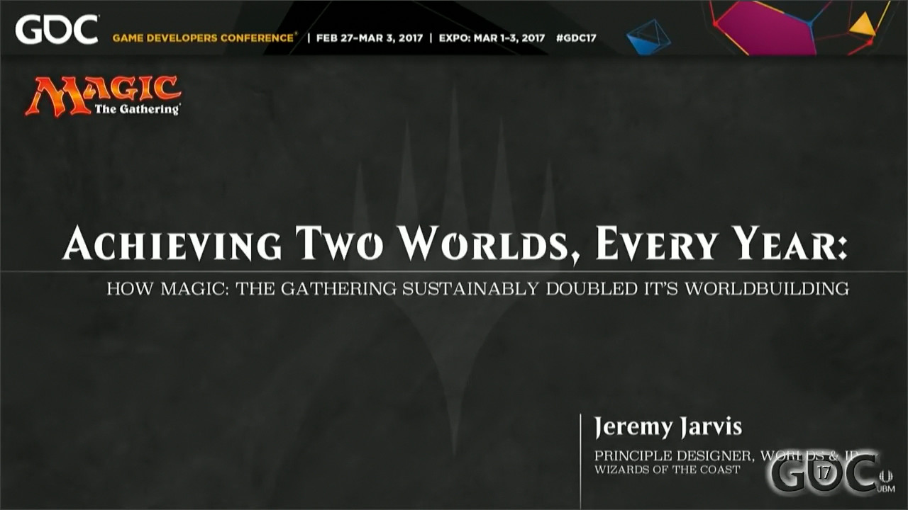
Source:https://www.youtube.com/watch?v=9LijlGLFKTE
大家好 欢迎 今天是星期五 GDC2017的最后一天 本演讲题为《每年创造两个世界：万智牌如何持续打造双倍的世界》 让我来简单说说自己的事 以及为什么你们或许应该关心我讲的内容
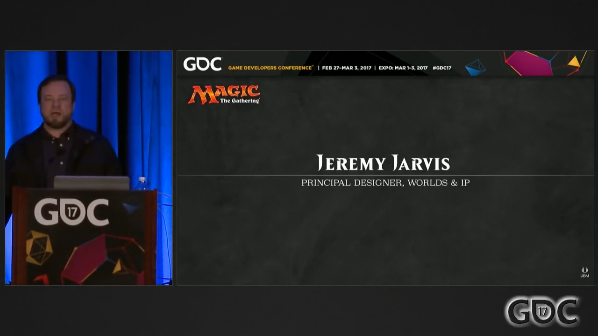
我叫Jeremy Jarvis 我是万智牌的首席世界及IP设计师 我是自由插画师出身 是最后一批的水彩画家中的一个 在2005年的时候 我作为首席概念设计师 成为了万智牌内部团队的一员 虽有坎坷 但我在一年之内成为了万智牌的高级艺术总监 就这样在接下来的十年间一直担任这个职务
这就说, 从洛温到现在所有的东西. 我本人为那些世界提供了艺术指导. 我委派他人绘制并自己监督了9000余张卡. 有一段时间, 我是唯一一个艺术总监. 所以过去十年间, 你记忆犹新的某张出色的万智牌. 那是我做的, 过去十年间, 你讨厌的东西去他的. 那也是我做的, 不管怎么说鱼与熊掌不可兼得. 以上就是关于我自己的内容了.
至于你为什么应该关心这次演讲 我不知道 只是他们给了我一个麦克风 让我讲一个小时 所以你也许不用认真听 说到这一点 请给这个演讲评分 这对GDC来说很重要 对我们这个分展会来说很重要 对我来说也很重要

那么 我先说好 这是一个那种古怪的 有具体话题的演讲 我们今天要说的就是《万智牌》 我确信在座的各位很多人都熟悉《万智牌》和我们的玩家或者粉丝 有些人是来自其他行业的专业人士 我知道你们不做实体卡牌游戏 但我们要说的只是《万智牌》和实体卡牌游戏 具体来说 有很多关于《卡拉德许》的例子 因为《卡拉德许》是最新的系列 而且我可以给各位展示很多内幕的东西 虽然我们会讲到打造世界 以及我们实现它的方式 但这次演讲的主题其实是 创造灵活的解决方案 并最大限度地利用它们去解决不灵活的需求 我之所以没以此为题 是因为它听上去实在是太糟糕了 所以我们就用打造世界这个主题吧
这里是一份《万智牌》简史 以防有人不知道

《万智牌》在1993年的Gen Gon上面世 它原本的意图是成为一种人们在游戏展上转场排队时 消遣时间的手段 1993 到 2017 公司里有人帮我算了一下
这是24年 持续了24年之久的产品发布 让我给你展示一下这个概念
对外界来说 这里面每一个标志都代表着几百张卡 对我们威视智的人来说 它代表着学习和迭代
这些都是我上岗之前的东西 现在让我们说说那些更好的吧

我得说明白 《骤霜》不关我事 它不关我的事 我虽然人在那里 但我仅仅是奉命行事
在这24年里 经过这些产品发布 我们学习了 我们迭代了 我想说说《万智牌》现在的样子 以及我们在这24年里是如何成长的

这就是我们现在的样子 《万智牌》还是一个卡牌游戏 一个非常出色的卡牌游戏
但我们用电影化 沉浸式的手段来打造我们的世界 我们想让玩家相信它们 关心它们 关心我们的角色 这是我们的底线 我们把它设的如此之高 人们也因而对此抱有期待 而我们也想要满足这些期待 我们想拥有世界级的外观 而我关注的就是我们对世界的打造 因为我们想要和我们享受过的 喜爱的其他优秀游戏并列
我们现在一年做两次了 我们一年之内要两次构建这样的世界 我想说说 有关这一点的一些背景 还有一年内打造两个世界的代价 那么 让我们先从面对的挑战开始
世界构建不是完全自由的 如果任务只是一年之内创造两个疯狂且优秀的世界的话 那可是再好不过了 对吧 这虽然足够难了 但事实并非如此
这里有限制 第一个限制是《万智牌》的基本性质 魔法的五种颜色
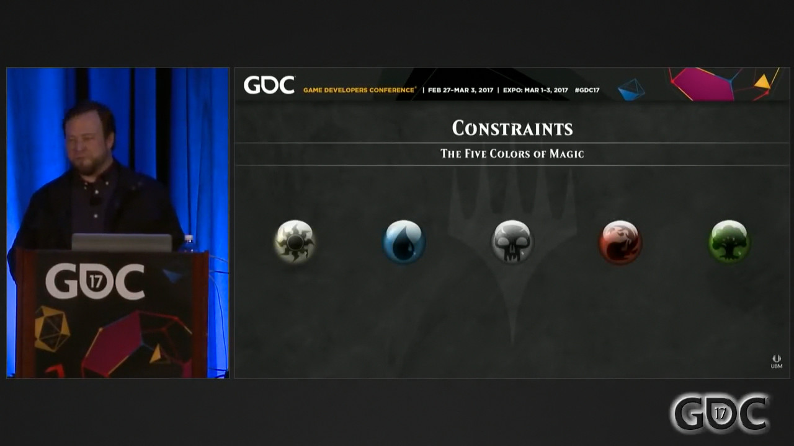
我们打造的每个世界都要覆盖这五种颜色 是五个一起 里面还有陆地类型 它们分别和魔法的五种颜色相关联
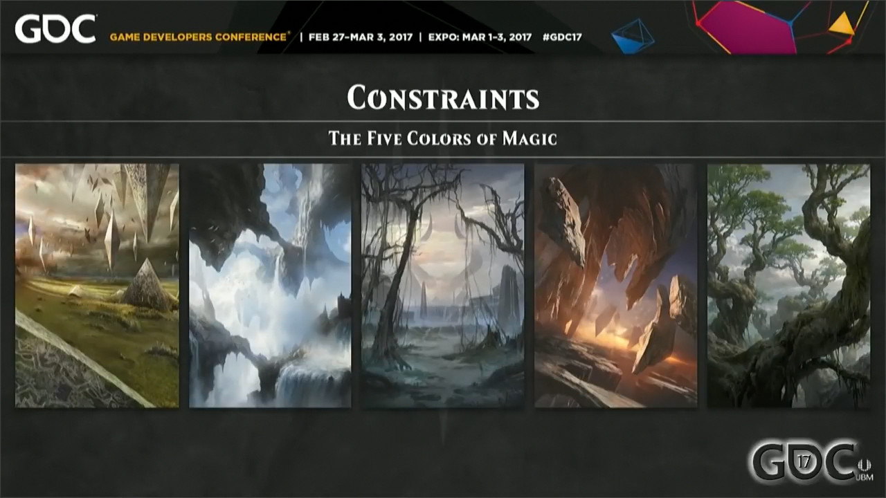
这是《万智牌》的资源系统 如果一个世界的设想不能和这五种陆地类型相适应 我们就不会实现它 疯狂的火元素世界 这很酷对吧 里面有岛吗 没有 那我们就不做 这就是我们必须要遵守的性质
还有其他限制 说过了 我们的设计不是完全自由的 我们永远有一个机制层面上的主题 我们相信只有在世界的艺术创意 和该系列的机制紧紧咬合在一起的时候 《万智牌》才是我们的巅峰之作 我们才拿出了百分百的实力
那些机制上的重心有 关注神器 关注结界 颜色组合 巨大的生物 此外你已经看到我们在这些机制空间中进行设计的产物了 神器和《卡拉德许》 结界和《塞洛斯》 颜色对 当然就是 《拉尼卡》和它的公会了 巨大的生物 《赞迪卡》中的奥札奇
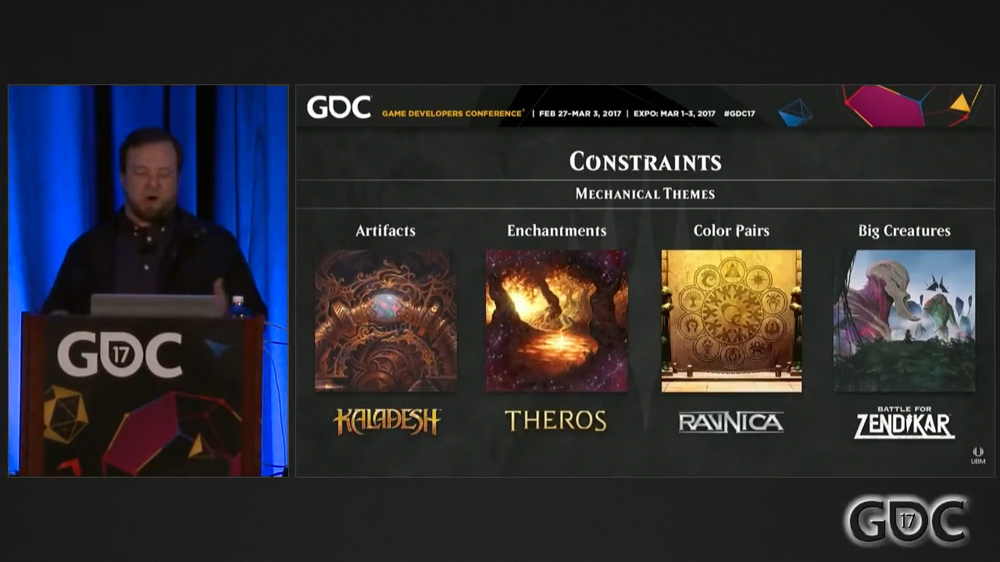
说过了 我们起步于一个受限的空间 要为游戏机制 为了这个系列 做出最好的创意设计 我想给各位展示一下我们的生物网格 各位现在看到的就是被我们称为生物网格的东西 每一个系列 都要能填上每一个空缺 要创作卡牌的话 这是必须的

有的系列里面会有小的蓝色飞行生物 我简单解释一下限制域 打叉的东西 不会在《万智牌》中出现 红色不会有小型飞行生物 但有中型大型飞行生物 红色巨龙一类的
如果有画师在脑海中创作出了最好最酷的飞行多头蛇蜥 这就太遗憾了 因为 我们并不能用上它 因为绿色不能有飞行的多头蛇蜥

我想特别地说说里面一个格子 算是解释一下各种限制 例子是《卡拉德许》 让我们说说中等大小的黑色非飞行生物 一般来说 默认的选项 典型的取材对象 是吸血鬼和灵俑
但记住 我们在《卡拉德许》里面是有一个特定的主题的 它整体是乐观的 是美丽的 充满令人愉快的光 你能想象那里面出现灵俑和吸血鬼的样子吗

天啊 这是给谁准备的 这让所有人都感到烦心 但 这也许能让某些人高兴 这我可说不准
之前那说过 制作卡牌要求我们回答这些方格提出的问题 那么就《卡拉德许》来说 我们创造了一个新的奇幻种族 我们创建了乙太种

你知道的 卡拉德许是一个发明家利用乙太驱动疯狂产物的位面 作为那种乙太消耗的结果 这些乙太种是那种循环造就的 有生命的产物 他们是短命的 他们是华丽的 他们很自私 这就是为什么他们属于黑色 因为他们也知道自己的寿命不长 你可以看到他们一点点碎裂 将乙太释放回环境之中 他们很美丽 他们能融入卡拉德许的氛围 他们有种浪漫的悲剧色彩 更重要的是 他们 非常卡拉德许 他们符合这个世界的宇宙观 而且那些工作 那真的是很多工作 都只是给一个方格的 这里面还有很多方格 为了剩下的一切 它们都必须被一一解明
另一个限制 现在我们一年要创造出两个世界 所以我们比以往任何时候 都更要做到我们所谓的“晃动钟摆”

从《赞迪卡》中开阔的风景 秀丽的景观 到《依尼翠》的那种静谧紧张 有些幽闭的恐惧 到《卡拉德许》的明亮天空和积极氛围 再到几周之后就会面世的《阿芒凯》 对此我不能多说 但它绝不是《卡拉德许》 我们知道 改变背景设定的样貌和色调是很重要的 因为现在我们需要让人们以二倍的频率感受到那种兴奋 我们每年会造访两个世界 所以我们的计划一直都是 不仅仅要不同于上一个世界 也要不同于那些 我们接下来要做的世界 所以我们必须要小心寻找我们的方向 以上大部分都是创作上的限制 或者卡牌系列给我们的限制
现在让我们说一个逻辑上的限制 全球同时发售

我们不会改日期 没有所谓的软发售 没有所谓的软补 日期一天都不能改 这就是原因 我们一共要印出11种语言的《万智牌》 我们在全球七十余个市场里发售 而这些卡牌必须要在同一天 到达各个牌店 我们组织化的竞技系统遍布世界 锦标赛的组织者 需要提前租借场地 有的时候要提前好几年 我们的发售日绝对不会变 这是个非常严格的约束
好了 在说过这一堆限制之后 让我们来谈谈不灵活的需求 我们需要每年打造两个世界 这是我们的发售模式 这是组织的需求 为了能做到这一点 我们每年都要两本这个东西
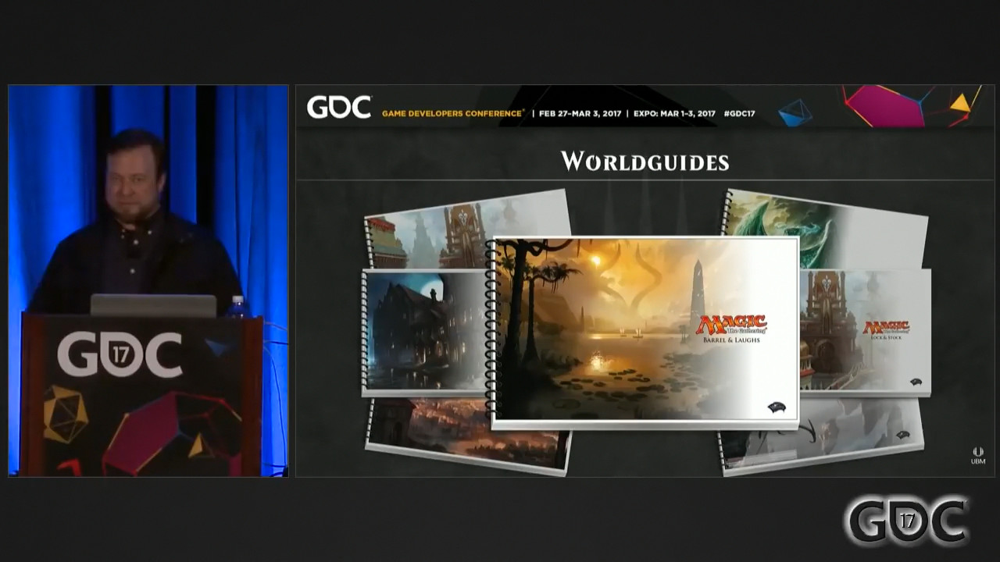 世界指南 多亏了这个东西 我们才能保证卡牌质量 同时让一个系列的所有卡牌展现出同一个世界的风景 因为 绘制这些卡牌的 是我们建立的一个全球人才库
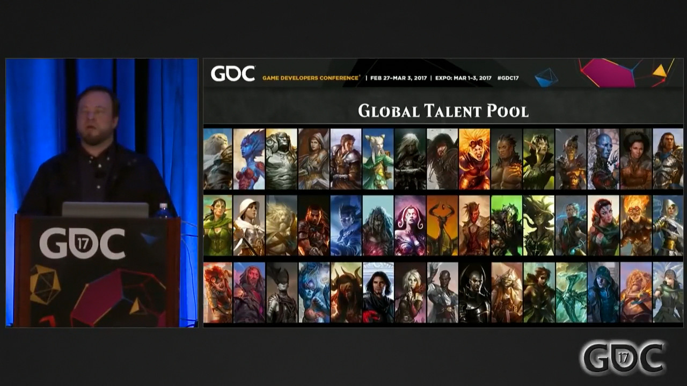
我不认为很多人知道这一点 在威视智里面 其实是没有人负责绘制卡面的 我们没有自设的工作室 全部卡牌都是外包的 为了能让各个世界诞生 我们和自己能找到最有才华的人合作 建立了这个稳健的绘图工作流 正是那个世界指南 让我们能充分的利用这个环球的人才库
此外 我们一直在给这个人才库纳新 因为我们必须如此 因为我们要制作很多很多的卡牌 这样一来 这个世界指南就必须足够丰富 足够稳健 可以满足全部卡片的需求

它包含了数以百计的概念插画 时常有几百页 它不止面向画家 也是面向作家的 所以说 我们不是简单设计每个种族就完事了的 我们需要变体 变化 因为卡牌 因为卡牌有很多

这都差得远了
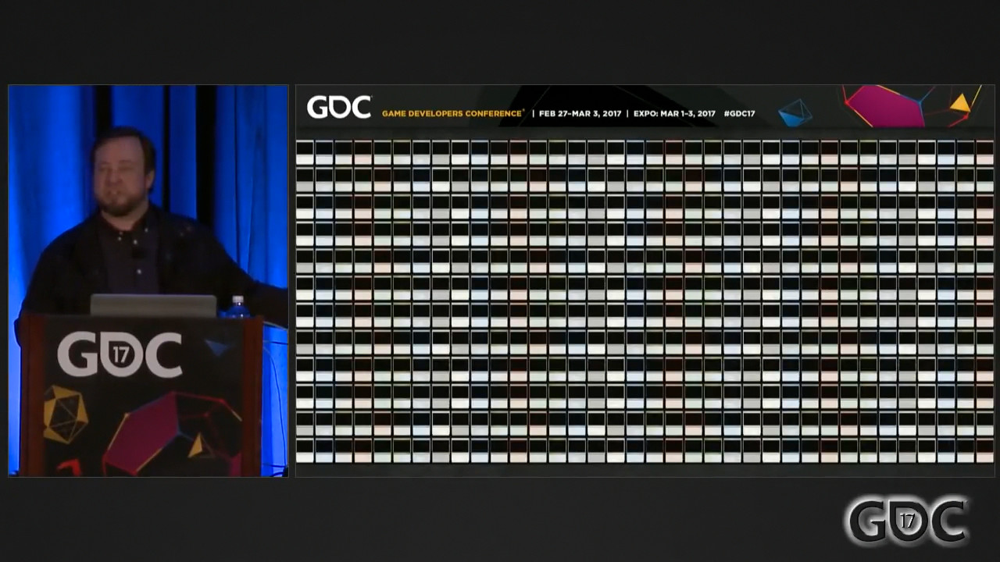
这差不多 但仍然不够 差不多是450张卡牌 一个正常的环境 需要450张卡牌 也就需要同样多的插画
此外你要知道 这些都是游戏的一部分 这些插画是承载了功能的 如果你坐在对面 因为插画认错了一张卡 这会让你输掉游戏的 对吧 在餐桌上的时候 这种体验可不太好 因为这个输掉职业锦标赛 那可就太糟糕了
所以这个世界指南是要实现一个真正的职能的 它得支撑起一个世界 好了 回顾一下我们的需求
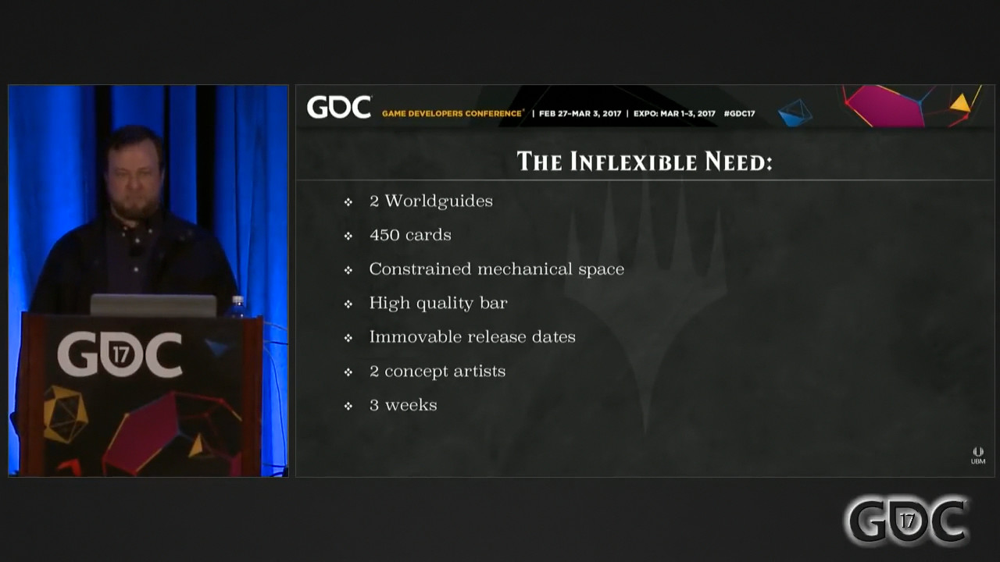
一年两个世界指南 每个覆盖450张卡牌 他们收到特定的机制的限制 我们有一个自设的 我们喜欢 玩家期待的高底线 我们的日期是定死的 此外 我们内部 一共有两个概念设计师 我们要靠两个概念设计师达成这些工作 还有 我们组织也已经习惯在三周之内就看到这堆材料了
现在让我们来说说解决方案 我们面对各种限制 满足全部需求的答案是

合同工 我们签合同工 和其他人一样签合同工 这就是我们的答案 如果演讲到此结束 我就这么走下台的话
总之我们确实会签合同工 这三周之内我们会找五个人 但真正的解决方案是 我们的概念推动会
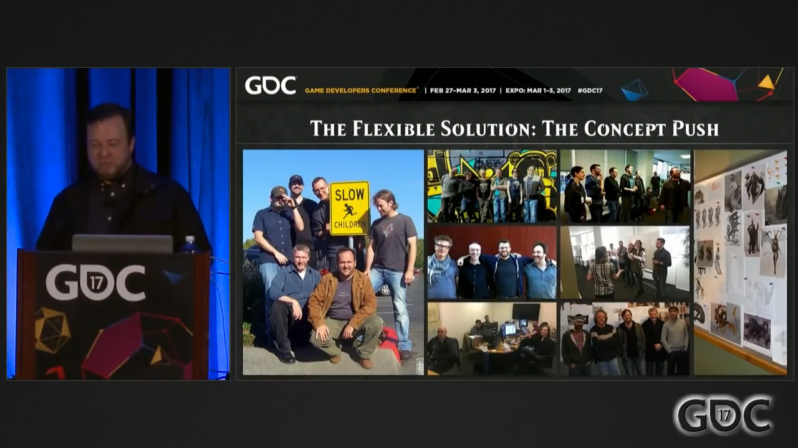
我们接下来要说的就是 我们学到的 组织我们自己 优化我们的流程 让解决方案变得可持续且有效的方法 好了 让我们深入讲解吧
我们先从更轻松的时候开始 我很怀念这些 那时我们的发售模型就是这样的
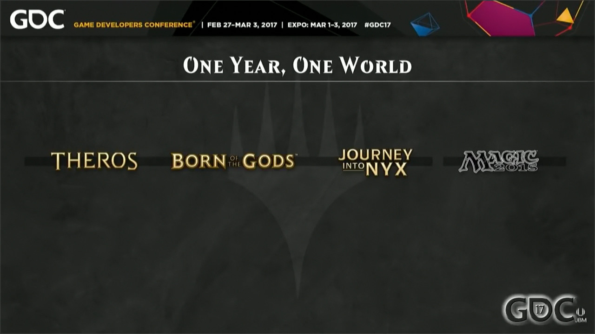
我们每年只需要打造一个出色的世界 要知道好莱坞要花七八年才能做到这一点 很多游戏也得花上三四年 我们每年只需要做一个 一个世界指南就能覆盖三个系列 然后就是核心系列 这个传统上而言不需要概念支持
那么基于这个模型 让我们阐明这个解决方案 以及它有效的原因 我们先从万智牌的R&D部门开始
注R&D：Research & Design 研究设计部门
首先是我们高贵正义的艺术创作者 然后是游戏设计师 R&D的这两部分要对同一个领导实体负责 这就是万智牌R&D 我现在可能真的有麻烦了 我的部门还没看过这些

总之 这就是万智牌的R&D部门 重点是 我们的艺术创作者不是来干服务业的 我们不想形成那种“互相派活”的文化 我们是字面意义上的同一个团队 而且不是那种做作的 “我们都是《万智牌》团队的一员” 的意思 是我们有同一个上司的意思 我们想让《万智牌》有这样的融合
如前文所说 我们相信 当机制和世界的创意设计相互咬合的时候 我们才能达到自己的巅峰 而这就从最基础的层面上 体现了我们想成真的想法 我们想让其成真的想法 注：口误 我们实际上就在用这个理念组织自身 现在来说说我们的流程 我们想要融合 不想要“互相派活”的文化

这是一份展现了我们流程的图表 我们从一个基础概念开始 这可以是从下到上的 比如一个想要的机制 比如颜色派别 也可以是从上到下的 比如《万智牌》版本的埃及世界
我们先在基础概念上达成一致 之后R&D的两翼就开始工作 然后很快我们就会在两个队伍之间交换成员 我们会在初步世界构建团队里保留一个机制设计部门的成员 然后他们也会出人到机制愿景设计团队里 在机制愿景设计团队里留一个联系人 在整个流程里 我们无时无刻不在相互提示 相互回应 相互合作 当然 有时候还是要互相派活 就算工作过程如此灵活 一些派活仍然不可避免 但我们没有“互相派活”的文化 我们想要一个相互融合的文化 来让我们做出好的产品 来让玩家享受乐趣
接下来我要用几个例子 展示一些潜在的问题 算是警示寓言吧

2011年的时候 我们发布了《依尼翠》 《依尼翠》的核心机制是墓地 林林总总的东西进入墓地 从墓地里出来 呆在墓地里面 很诡异 是哥特恐怖 里面有吸血鬼 有灵俑 很合理 对吧 关注墓地 哥特恐怖 然而十年前 有另一个系列具备同样的机制重心
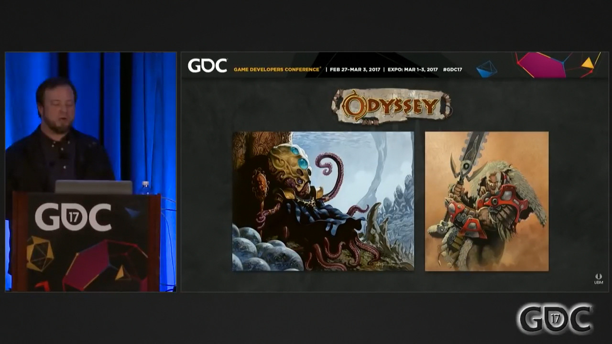
《奥德赛》也是以墓地为核心 林林总总的东西进入墓地 从墓地里出来 呆在墓地里面 它是关于小型决斗的 里面有这些被称作Cephalid（章人）的章鱼人 还有人鱼 还有一个叫映奇宝珠的神器 有艾文 还有《制图师》 关注墓地 然而有的时候 显然的 如果你把他们两个并列在一起 《奥德赛》就显得有些问题
过多的“派活”给它带来了断裂感 里面没有足够的融合 艺术创意和游戏机制的中心彼此分离了 这并不是在说它看上去不好 它看上去很不错 《奥德赛》里面很多优秀的作品 但这个世界的概念很明显没有和创意重心相互咬合 我是说机制重心 他们在这个过程里 有些迷失了 没能建立各部分的联系 我们想避免这一点

规划我们自己的工作 将难处理的部分挪到前期 这就是我们和艺术创作者在迭代之中真正学到的东西 在我们自己的工作中 我们绕不开的工作里 有哪些是适合拿到早期来做的 对概念推动会来说 做到这点是很重要的 原因如下 我们只有三周 没有到处观望的时间 我们没有时间留给那种 “当我看到它时 我就能知道是它” 的态度 之前说过 我们没有自己的艺术工作室 如果我们有 那这种态度可能很不错 然而那对我们来说太过奢侈
此外 我们不想给艺术家们做太具体的规定 但为了能让他们更易成功 我们确实想对自己的工作 有够的了解 防止他们加入之后盲目地浪费时间 有关“什么样的工作适合放在早期”这个问题 我们找到的一个平衡点是 定义《万智牌》给既定对象带来的转变
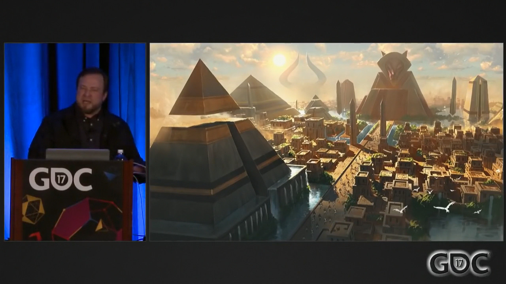
这里有一个真实的例子 这是《阿芒凯》 当听到同一个词的时候 人们能想到不同的东西 《万智牌》版本的埃及世界 好吧 我们需要定义它 它不是脏兮兮 沉寂的 考古盗墓世界 而是一个有生机的 繁荣的 美丽的幻想埃及 这是《万智牌》对埃及神话的诠释 而且它是尼可波拉斯的据点
所以要先定义它 以便人们能有加入之后有个起步的基础 我们也要定义那些不会被考虑的东西 现有的这个类别里面 哪部分是我们不感兴趣的 之前说过 我们必须要吝啬的对待主题 这是为了我们能持续的制作新系列 为了未来的自己 我们要筛选掉一些东西
《卡拉德许》就有很好的例子 我们想要一个 有关发明家的位面 里面会有很多神器 很多人 很多人造生物 我们希望这里充满创新 积极向上 不是讲一个机器崛起的故事
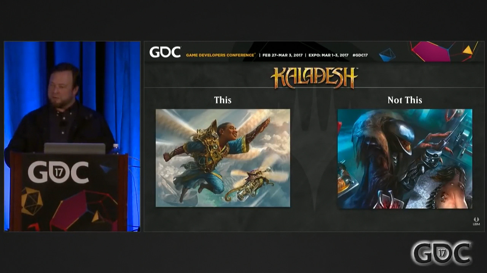
随便说一嘴 一个创造人造生物的发明家位面 很容易让人们想到那边 所以我们一开始就在前面把这些都说清楚 不用费事去制作那类卡片 也不用给那些卡片画图 在这 我们不做那些东西
这个世界里面 繁荣的奇幻种族是什么 为什么如此 这又回到前面的生物网格了 我们尽可能在前期做出这些决定

里面会有精灵或者那伽吗 他们在那里做什么 为什么而存在 我们的白色的非人种族是什么 狮族吗? 是矮人吗 他们属于红色 还是属于白色 我们需要做出这些决定 而不是一副 “我不知道” “你懂的” “我们看见它的时候就明白了” “你自己摸索吧” “也许是精灵也许不是” 的样子 我不介意告诉各位 我们已经犯过这样的错误 这就是为什么我们对此有如此深刻的教训
我们的态度也曾是“嗨 语言要比画要灵活敏捷” “那就先让画家们进来画一堆出色的作品” “然后我们为这些画写作吧” 我们在一次又一次的迭代中意识到了 我们这样浪费了很多时间 有时候还会让画家沮丧
结果在概念推动会之后 我们还要做很多工作 才能完成这一阶段的任务 所以 我们早期进行的讨论之一 就是决定生物网格的内容 这一个是相关的 世界里面有什么组织 为什么他们很棒

很多时候我们会创造工会 部落 或者派别 一类的卡牌类别 也会想出帮艺术家为成功做准备的方法 以便他们在没有过多指示的时候 也能找到方向 我们不想直接告诉他们要画什么 对吧 如果我们直接说 “波洛斯就是尖头盔和弯刃剑” 那我们不需要这般有才华的人就能做出产品 我们想和我们能找到的 最有才华的插画师合作 我们也想尽可能地给他们最多的自由 但最后 我们仍需让打造出的世界符合我们的想象 我们的需求也要得到满足 所以我们在早期就会谈谈这些组织所做的事情 他们关心的事情 他们在世界里的角色 所以我们可以从“正义军队”的角度来描述波洛斯 让画家们弄清楚这在视觉上的含义 而不是浪费时间说什么弯刃剑 这基本就是我们会在早期解决的内容 而这就把我们带到了走向成功的第一座里程碑 就是这个起步文档
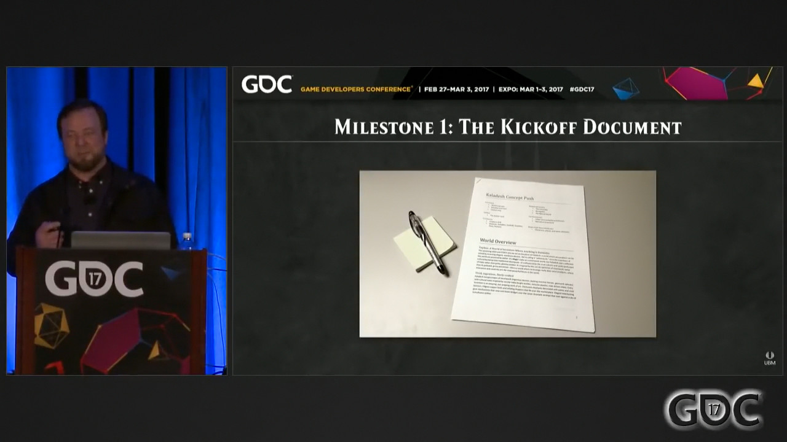
这真的就是《卡拉德许》起步文档的照片 这在科技上来说 并不是什么惊人的一步 但对于想法和我们本身来说 是一个伟大的成就 总之就是之前说的 把无论如何都要处理的事情挪到前面来 我们还有一个展示 我们会在概念推动会的第一天用它 向画家们展示我们对世界的想法 吸引他们 让画家们因我们对世界的想象而激动 因为情感上的投入越多 你们都懂的吧 艺术创作者们就能拿出更好的作品 总的来说 我们尽可能给他们自由 我们做一个起步展示 然后让他们开始工作
那么 从这里开始 我们开始创造一个反馈循环 我们在环球人才库里面 找人参加概念推动会 之后我会详细说说这个反馈循环 说到这个反馈循环 我说不是 “健康沟通” “是时候改变了” 那种循环 我指的是“音量”意义上的循环 让麦克风意识到自己的声音 让信号的源头 意识到自己发出的信息 先记住这个反馈循环 我们之后会详细谈谈这个
在这三周里 我们会找来五个画家 他们会成为我们的搭档 在制作《万智牌》的一个重要阶段中出力 接下来要说的 是我们如何最大限度地利用概念团队 有一些世界有自己独有的需求 于是我们就找能解决这些问题的专家 让他们加入到这五个人之中 一个很好的例子是《拉尼卡》

拉尼卡是一个被城市完全覆盖的位面 猜猜我们需要什么 一堆能画一堆建筑的艺术家 如果有需要 我们还可以加人 这就是概念推动会的灵活之处 这时候 建立清晰概念的作用就体现出来了
我们能建立一个团队文化 这很重要 因为我们是找自由职业者来创作的 大概大学 就是他们大多数人经历过的 最后一个需要合作的环境 一些人从来没坐过办公室 他们已经很久没和其他人合作过了 也很久没收到过 有关作品的公开反馈了 很重要的一点是 我们要选择
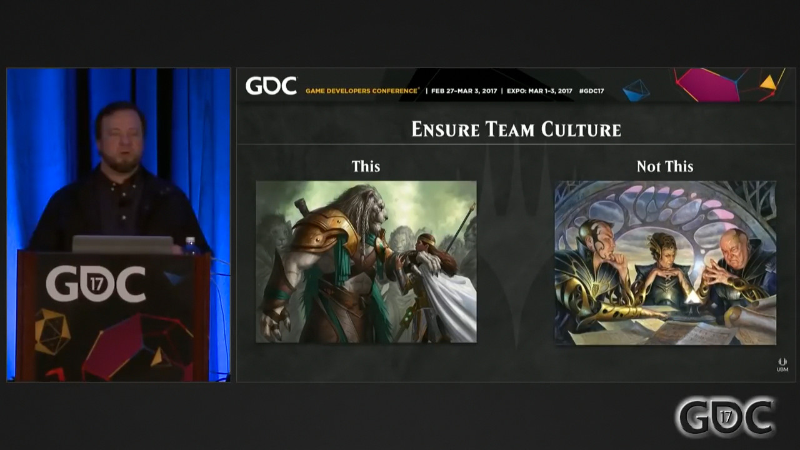 能带给我们这种文化的人 而不是带来这种文化的人 如果我们认为有两个插画师可能合不来 我们就把他们错开 我们可以具体情况具体分析 我们还要减少其他挑战 这可以通过控制人选来做到 就比如说沟通问题 因为我们是从全世界找合作伙伴的 他们并非都以英语为母语 这没什么大不了的 只是我们必须要意识到这一点 以免我们一时间邀请了过多的人 走进一个 他们字面意义上难以互相沟通 难以和我们沟通的困局
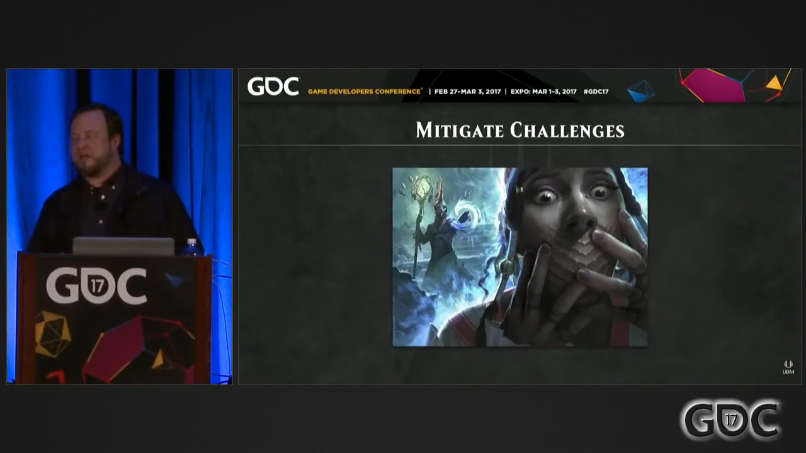
我们很小心地选择让谁什么时候加入进来 就是为了避免这些潜在的问题 当我们为某一个背景设定 决定好人选的时候 我们就达到了第二座里程碑 我们希望我们真的给那个世界 那些挑战 打造了一个最优的概念团队
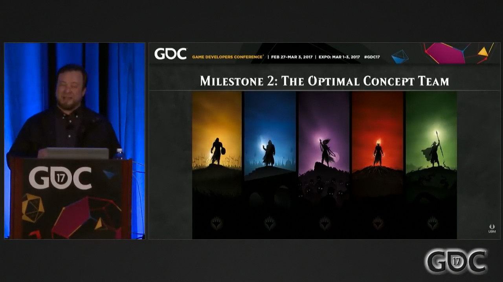
这时候 我们要么已经为自己做好了准备 让正确的人能随时参与进来 立即行动 要么我们就完了 这是一座里程碑
现在让我们来说说这宝贵的三周的具体安排吧.
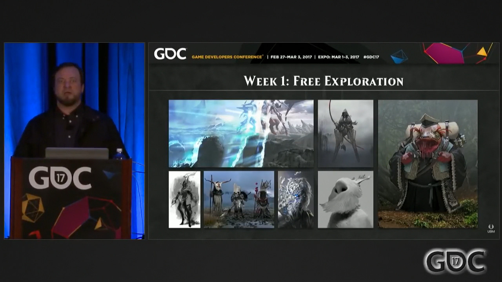
第一周 自由探索 在概念推动会之后 有了那个文件 还有那个展示 我们就让他们自行探索 吸引他们的东西 让他们激动的东西 无关他们的特长 无关我们对他们的预期 第一周是自由行动 我们会看到很多怪东西 大部分都不会被用到 但这可以引出我们意料外的灵光一闪 那种我们原来没想过的好点子 我们找来这些非常有才华的人 这都是有理由的 我们不想妨碍那些灵光一闪的出现 那么 第一周 自由探索

第二周 我们开始收紧缰绳 我们需要迫使世界成型 这一张我们概念墙的真实照片 好像是《塞洛斯》概念推动会的照片 经过一轮筛选 我们会找出最好的那一批 注释：听不清 这时候艺术总监必须抱歉地拿掉一些 效果不好的东西 我们开始定下材质和造型语言 开始使用设计主题

着重强调它们 以便这些东西能扩散到其他作品之中 就这样我们开始朝着同一个世界风貌前进
第三周 我们开始采用战术 我们开始配发任务
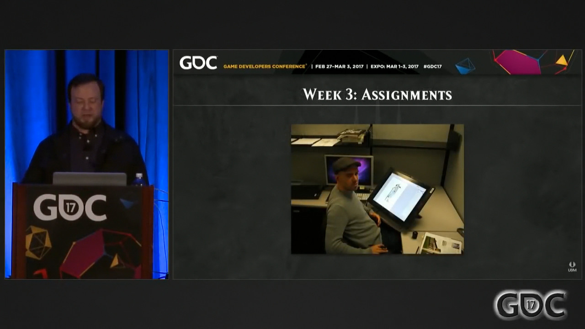
在座的都知道 画家们最喜欢任务了 先不看 这是Eric Deschamps 先不看这个有意思的照片 这真的是个很积极的过程 因为 在那个 你懂的 这就像是漏斗 从一个非常宽的入口开始一点点收缩
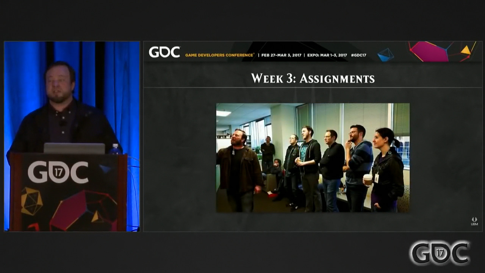
在第三周的时候 他们也都明白 现在他们面临的挑战都好像英雄史诗一样 我需要你 有才华的艺术家们 去弄清楚这里该有什么样的巨龙 我需要你 改掉这个不怎么合适的东西 而且他们真的都毫不退却 总之 第三周就是战术性的任务 然后在第三周的末尾 我们就迎来了第三个里程碑 一堆概念艺术

这真的就是“一堆”东西 里面有很多资产 在达到这个里程碑的时候 要么世界指南已经保质保量 要么我们就完了 此外还有一个清理和整理的阶段
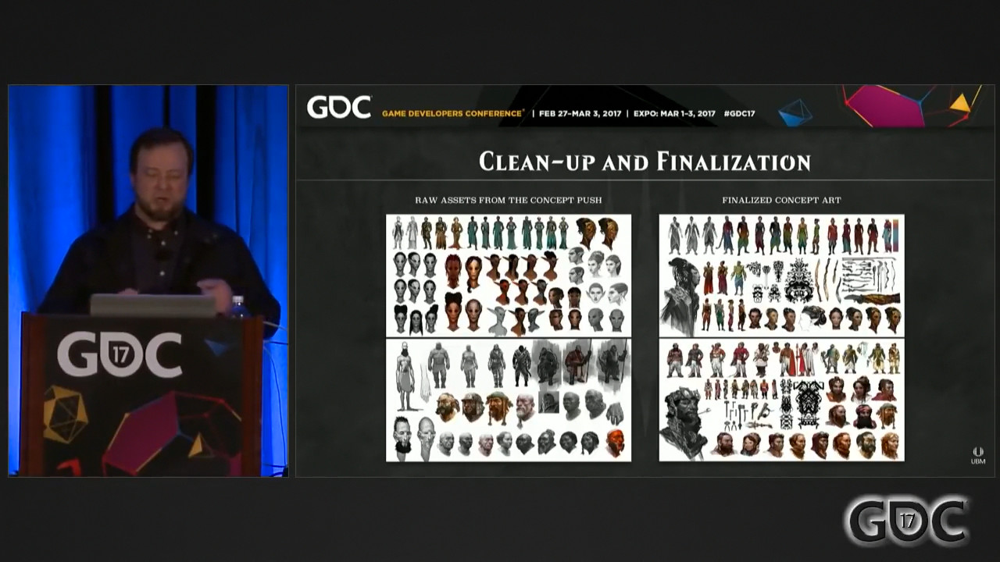
我们的两个内部概念设计师 开始掌舵 开始编辑工作 并让所有东西都相互照应 填补空缺 这活可以做好几个月 我们要统合所有材料 保证世界指南的质量达标 风貌合意 因为这个世界指南 就是我们第四个 也是最重要的里程碑

当世界指南完成的时候 产品 卡牌 我们的人才库 要么已经做好了走向成功的准备 要么我们就完了
这就是我们从《洛温》到《鞑契可汗》这段时间里 不断迭代的流程 然后概念设计的轻松日子就到此为止了 需求改变了 我们的产品发售模型从这个 变成了这个

一年两个系列 每一个都有自己的艺术设计 这意味着 我们不灵活的需求 从一年用一个出色的世界指南 制作几百张有世界级插画的卡 翻倍了 我们需要做两次
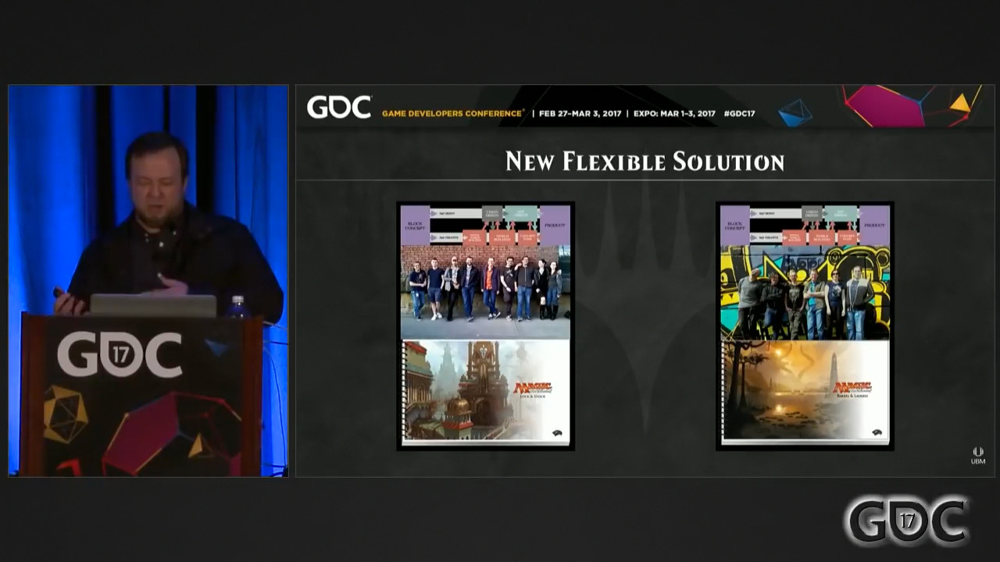
我们不能牺牲质量 也没有额外的时间 也不能把团队扩充一倍 在这样的条件下 我们必须弄明白 怎么实现这一点 而且在未来也能持续做到这一点 于是我们的新的灵活解决方案就是
我们老的灵活解决方案
我们就做两次 这是个灵活的解决方案 它是可扩展的

那些我们学到的教训 让我们能做到一年一次的那些经验 比如什么样的材料应该在早期处理 我们的组织应该怎么工作 我们如何避免“互相派活”的文化 这些有用的东西 它们都可以扩展 只是我们必须要真正掌握它们 这也确实带来了一些新问题 这个清理整理的阶段 我们以前有好几个月的时间 现在我们的概念设计师没有这种奢侈了 所以我们要找到一个新方法 更快的完成阶段性任务 以便我们能尽早开始下一次概念推动会 的早期工作
所以 为了做到这一点 我们的概念推动会仍然是可扩展的 所以我们就多做几次 我们设置了一个小的推动会 就在原本的推动会之后 我们找来三个画家 参与额外三周 帮助我们给这一阶段收尾 这让我们可以更细致的选择什么时候让谁加入 举个例子 我们在第一次概念推动会的时候 会找来更多国际性的人才 我们发现 一个好主意是 在之后的推动会里 找来更多本地的艺术家 我们有很多画师 有几个是西雅图的本地人 我们合作好几年了 他们可以马上参与进来 他们知道这是个不同的挑战 这个挑战是整理材料 编辑材料 帮我们达成阶段性结束 而且我们真的和这些画师建立了这种关系 所以需要的交流就不那么多 他们理解自己的工作 知道自己在做什么 他们加入进来 马上就能解决问题 做的非常精彩 干净利落
总之 一个灵活的解决方案是可延展的 这就是我们的做法 第一次面对问题的时候 面对一年一次的模式的时候 整件事其实要难得多 现在我们知道该做什么了 只需要扩展规模就可以了
这个有点离题了 但也值得一谈
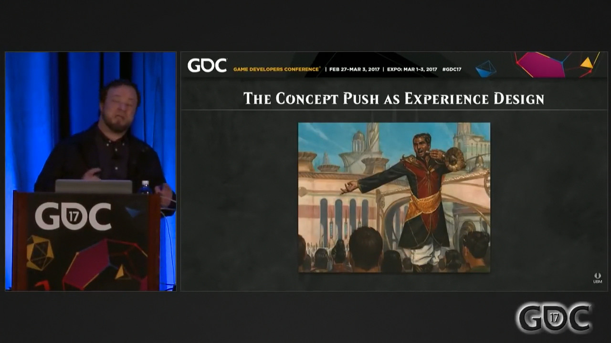
概念推动会 一种体验上的设计 这个美好的解决方案里面有一个潜在的坑 就是其依靠这些自由插画师 非常有才华的自由插画师 对吧 这些插画师有他们自己想干的活 他们不欠我们什么 他们可以拒绝 而我们需要他们自发地同意 因为我们需要吸收那种级别的才华 不只是一般的 “别做混蛋” “去机场接人” 我们的创意设计师们可都是好人 我是最糟的那一个 就额外说一嘴 我们和他们会一起出去玩 带他们爬山

我从不踏出办公室 但据说在西雅图有很多酷事可以做 有各种小径 有山 《Frasier》的故事就发生在那里 我们还一起组乐队
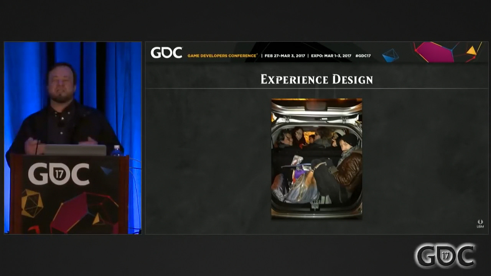
我们 我知道这是不合法的 这严重超载了 但他们真的玩的很尽兴
此外 我们还能认识到这些人在办公室之外的一面 他们也能了解我们办公室里面的文化 我们能从个人的层面上认识他们 而且 我们已经对他们有认识了 我们和这些人一起工作 把画外包给他们 我们当然知道这些人很有才 也知道他们可靠 我们基本上知道这些人里面有没有反社会者

但是 我们会和这些人面对面的相处 而正是因为这一点 概念推动会就成了一个隐秘的招聘机制 确实如此 它以前真的是一个隐秘的招聘机制 直到我在这里把它说出来了
在我们的7个艺术部门创作者中 有五个人 都通过这一机制成为了我们的雇员 他们为我们绘制卡面 参加概念推动会 而当我们有机会扩员的时候 我们可以直接联系那些 参与过这个年年都有 奇怪但美好的流程的人 熟悉我们 熟悉威视智的文化 至少知道个大概的人
这个流程确实有效 我们四个艺术总监 有三个都是这么来的 我们两个内部概念设计师也是如此
现在让我们审视一下这个灵活的解决方案 看看它是如何影响 我之前说过的反馈循环的 当一个信号的发出者 意识到自己发出的信息
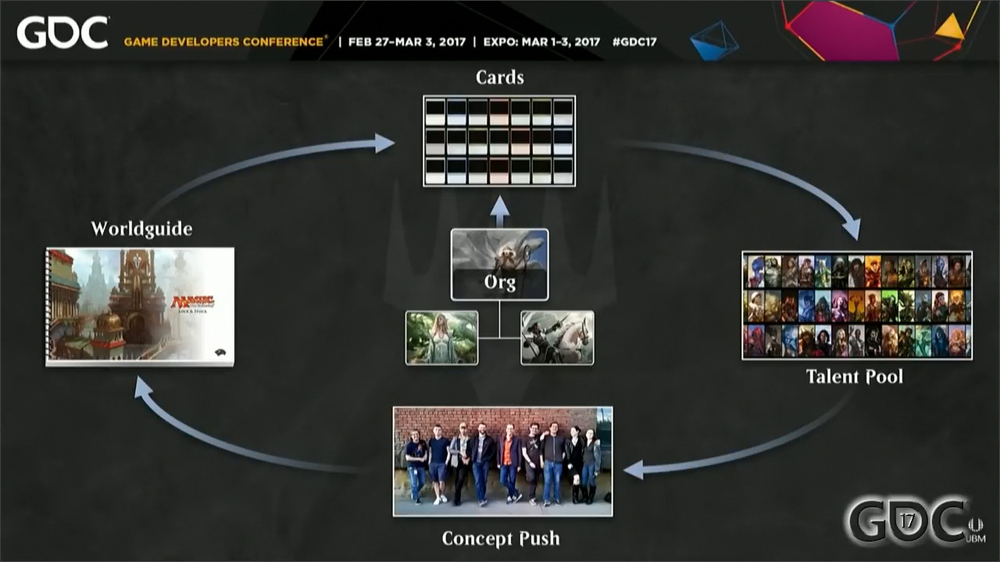
我们组织是这样的 一个结构合理的组织 万智牌 R&D 他们的工作是做卡 很多很多卡 因为我们要制作很多很多的卡牌 我们需要这个强健的环球人才库 我们密切关注这个人才库 选出完美的五个合作者 让他们入伙 在概念推动会里和我们一起工作三周 然后这个概念推动会 会交出一份世界指南作为答卷 然后这个世界指南会成为制卡的基础 很多很多卡 因为我们处在一个做很多很多卡的组织 我们就需要一个环球人才库 然后又是概念推动会之类的 之后 等到 我们有机会进行组织扩员的时候 这个概念推动会就成了我们的征兵场 就这样 这样我们就有这整个系统 一个 因为我们一直选择 这样做事 工作本身就开始变得更加简单可持续 的系统
现在我要抛出一些总结性的问题 我很爱做的一个 但是有时会令人沮丧的实践是 当我们发现有什么真的很适合《万智牌》的东西的时候 我们关心的美学观也好 处理某物的方法也好 流程也好 不管是什么 只要这种手段违反直觉 但效果却很好时候 试着反向研究一下 如果我们足够聪明的话 我们会问出什么样的正确问题 来将自己引导到这些答案之上
然后 如果我们真的可以预知未来 我们会问自己这些问题 来得到答案 得到这个很有效的流程 现在我把他们留给你们

你能改善组织结构 以便其更好地反应你对产品的需求吗 这就回到那个组织架构图了 我们有同一个上司 因为我们希望创意和世界的概念设计能完全融合
你能妥善安排自己的工作 以便让下一阶段的工作更容易成功吗 我说的是你自己的工作 你无论如何都要做的事情 我没说变革整个组织架构 那个只属于你的沙盒
你能只通过改善工作方法 采用更好的规划 来为下一阶段做好准备吗 你能给那些造成困难的 年年都有的需求 找到一个可持续的解决方法吗 以前 概念推动会对我们来说是个危机 而且它年年都会发生 如果这年年都会准时发生 那就没理由放任它成为反复的危机 要给它找一个可持续的解决方案 制作真正能给人们带来快乐的游戏 不应该这般令人苦痛 给你年年都有的需求找一个解决方案
你不灵活的生产周期里 有哪里可以引进灵活的解决方案 你要如何完全利用那种灵活性
然后就真的是最后一个了. 如果别的你都不想看. 我真的希望, 无关领域, 你能思考一下这个问题.
有什么需求 可以让你引入一个愈久弥珍的流程作为解决方案 想想那个反馈循环 有没有什么地方 让你可以设立一个系统 程序 流程 这类东西 让你在选择这种工作方式之后 随着时间流逝 用这种方式进行工作的难度 也会降低 说完这个 我看我们还有时间 我想请各位 提问 我乐于回答你们的所有问题
好了 各位 这是GDC的最后一天 我知道GDC里每个小时安排都很重要 这是不短一段时间 这里有这么多人才 有这么多值得学习的东西 我非常感谢各位在我一起度过一个小时 和《万智牌》一起 和威视智一起 谢谢各位 噢 你正好背光 没看清 抱歉 欢迎提问
嗨 感谢你带来一场如此有深度的演讲 作为一个有志成为制作人的人 能了解你管理艺术流程的方法 对我来说真的很有帮助 我的问题是 你说过你的公司有一个非常具体的时间线 那么你是否处理过那种生死时刻 比如你当天就要发售了 如果你进度还不够的话 你会怎么做 你需要... 你会怎么处理这种事呢
发售不会推迟. 不论如何, 一定?
他一定 是的 我们永远都是准时发售 就我所知道的 我们一直都是准时发售 所以有关我们怎么处理生死时刻 真正的答案就是... 我们有会经历很多次发售 我们每三个月就会发售一个大系列
所以如果你不断遇到生死时刻 不止一次两次 我们会尝试采用一种新流程 或者说新方法 来规划我们的工作 我相信一切优秀的流程都有一个对抗目标 你知道 我没聪明到可以再这里说 “理想情况下 这就是完美的解决方案” 但我知道我讨厌有些事重复发生 我们会以此为轴 找到完成工作的最好的方式 是的 生死时刻会有的 就开发卡牌系列来说 我们一直有想尽可能工作到最后一刻的想法 而这带来了很多压力 我们想尽可能多地获取那些关于游戏环境的真实反馈 所以虽然理论上我会想要尽可能早地开始工作 为了那些真实反馈 我们需要尽可能的等到最晚 这是为了开发出最好的产品 为了这个系列 为了游戏环境
所以生死时刻是会有的 也会有发生在最后一刻的改动 有的时候卡牌改的太多 以至于插画已经不适用于它了 我们就要找好友 从那个艺术流程里找人帮忙 所以这个答案就是试着去预知它 别让它发生 如果发生了 挺过去 这就是为什么它叫“工作” 不叫“快乐时光” 好的
这边的问题, 谢谢.
这真是个非常牛逼的演讲, 谢谢. 我想问的是, 看上去你已经在很长的一段时间里, 不断地给这个游戏优化流程. 以至于现在它已经井井有条了. 我想知道, 你觉得这些经验能很容易的转移到另一个游戏身上吗. 还是说你觉得这是具体的, 这一个游戏的运作方法. 是《万智牌》的完美流程. 但其它游戏还需要花上十年来找到好的流程,
我觉得这对《万智牌》来说是个非常好的流程 我之所以在一开始的时候就明确说了 “这会很怪很具体”一类的话 是因为我不认为我们规划东西的手法 这类东西... 我认为最后的那些问题 很适合问问你们自己 但每个游戏 比如说《龙与地下城》 我们在通一栋楼里 他们的流程是完全不一样的 不同的需求 我们确实会来回分享经验 有的时候还会共享人员 但我们在用非常不同的方式制作东西 如果我们制作的东西的方式如此不同 就算我们在同一建筑同一层楼 我也不可能莽撞到直接走过去说 “我把你们的问题都解决掉了 你们要做的就是找五个人干三周活” “谢谢” 这对我们来说真的很有效 我没说它已经完美了 对吧 但它很有效 我们能一直保证质量 不用每次都痛哭流涕 咬牙切齿 然后崩溃 那么就现在来说 我会采用它
酷啊 谢谢,
好的, 谢谢,
嗨.
我的问题是, 这个非常好的设计流程, 是如何与R&D和游戏机制融合的. 比如说, 机制要提前多久固定下来, 以便开始艺术方面的工作流程, 还是说他们是同时发生的呢. 还是说...
这是个好问题 不同的系列能给出不同的答案
我们有一个叫发展规划的东西 我们会组建一个交叉小组 R&D里面的不同领域的人会聚在一起 决定产品阵容 以前这是一个五年计划 我们一直都有五年计划 我们知道将要做什么样的背景 是从上到下的 终于是做希腊神话的时候了 还是从下到上的 比如我们想要三色派系
这个五年计划 在我们的工作量翻倍之后 变成了五-系列-计划 不再能覆盖五年了
通过这个发展规划 我们对每个系列的核心有个认识 它的核心是创意设计 还是游戏机制
那么回答你的问题 如果这个系列的核心是游戏机制
比如《鞑契可汗》 我们还不知道它视觉上的样子 但我们知道它会有五个三色派系一类的东西 而且我们想做一个注重卡牌抽选的系列 所以里面应该有穿越时间的要素 其实不应该是穿越时间 但这就是当时的答案
永远都不要 如果你是个创意工作者 永远都别 讲一个时间旅行的故事 这太痛苦了 很容易就毁掉了整个东西
如果是从下到上的 我们经常会有这么多信息 如果是从上到下的 我们知道的就没这么多 然后那个机制愿景设计流程就会开始对游戏机制进行迭代 这就是为什么我们一直都在相互交流 就像很多概念设计也会被改掉 留不到最后一样 很多机制都会被剔除
但我们能意识到那些很有效的东西 还有 有的时候游戏设计师也会直接过来找我们 说 “我们彻底搞定了一套机制” “它真的很好” “很有趣” “你能围绕这个发挥吗？”
我们就会说 “去你的” “你以为就靠有趣就能...” 不 我们会说 “好啊 就围绕它发挥吧”
事实是我们想要做有趣的游戏
反过来 当我们意外发现一个新刺激点的时候 比如一些画家加入之后 做出了非常酷的东西 举个例子的话 《异月传奇》里的融合机制 Vincent Proce 是当时加入进来的艺术家之一 他画了一个出色的概念插图 两个天使 非常糟糕的融合在一起
游戏设计师 一个游戏设计师看到了这个 然后说 “我一直都想这样的机制” “你拿出两张双面卡” “他们会融合在一起” 而这就是融合牌的起源
我们一直都在解决问题 但这个顺序是不可预知的 和我们很多流程一样 关键是 我们有足够灵活性 也因而有自信我们能找来正确的人 并得出正确的答案 所以这个问题的答案会经常变
谢谢. 谢谢,
嗨, 非常出色的演讲, 谢谢. 谢谢,
我问题和他的很相似. 但更具体一点. 我想问, 在对世界进行概念设计的流程中, 在什么时间点你会决定每张卡牌的样子. 然后, 当你和人才库沟通的时候. 你会直接让他们给这张具体的卡画一张图吗. 相反的情况也会出现吗, 比如有人创作了一副非常酷的画. 可以之后成为一张出色的卡?
好的 我们的工作方式是 这个世界指南不只是给外部合作者看的东西 也是给我们自己准备的 之前说过 这是我们为走向成功做的准备 这是我们给未来自己传的一球 让我们能完成必须的工作
这个世界指南 也会为我们在万智牌R&D创意设计团队里面的作者所用 我们有画家 也有作家 我们的作家 依次处理每一张卡 浏览那些生硬的机制术语 然后说 “好吧 他的费用是两个红 发动的时候是2-1” “它会摧毁一个神器 它可能是个哥布林” 之后他们会写一个 那种 索引世界指南里那些概念插画的画面描述 然后他们会寻找一个有趣 符合世界的方式来代表这个概念 然后
然后他们为每张卡都这么做 足足几百张卡 艺术总监接着就会从作者那里拿走这些卡的概念 再人工给每张卡找到最适合的画师 比如某个最适合画“厌恶神器的哥布林”的画师 然后我们 你懂的 拿到结果 浏览草图 听取反馈 然后制作最终成品
我们有的时候也会反着来 从画面开始 当这种事发生的时候 如果是在开发过程中 那一般就是卡牌改动的实在是太多了 那个插画不再合适了 我们需要重新指派画家 我们不能就这么留着这种认知错位 这对任何人来说都不好
但如果插画本身非常出色 我们会直接买下它 然后把它放到候选区里 让我们的游戏设计师给它找个家
这些插画目前最好的归处是指挥官系列 因为我们已经没有核心系列了 核心系列以前用了很多这类插画 各位在指挥官系列里面 看到的很多卡 在设计师介入 英勇的拯救它们之前 都只是一张 在等待新家的插画
太棒了. 谢谢,
谢谢.
我想知道的是, 那个三周的推动会每年都会发生几次. 我是说你确实对这些画家很好. 但为什么不直接把他们留在岗位上呢, 招他们进内部, 让他们更长时间工作学习呢. 好 假如 我是说假如 有人到我面前说 “嗨 Jeremy 你怎么看一个40人组成的画家团队” 我的CEO就在那里 嘿 Chris 我能建立一个40人组成的画师团队吗
“我们之后得好好谈谈”
好 那么 那么 就算 我真的有这样做的许可 当然 从来实际没有过 我仍然会想要 想要做一个概念推动会
它是个壮观的创意爆发 它带给我们的灵活性之一是 在我们“晃动钟摆” 让我们的背景设定保持新鲜 彼此不同的时候 我们可以找不同的人来做这些事 这些人有不同的美学观 他们的大脑运转方式不同 所以你不会遇到 “啊 这看上去很《万智牌》”的情况 《卡拉德许》明显不是《阿芒凯》
而这些很大程度上 追根溯源 是概念推动会的功劳 是因为我们引入了不同的才华 我仍然会希望找来新人
概念推动会的五个位置 我们一般都会这些位置安排独有的工作 比如我们会找一个能带动节奏的 一个我们知道工作速度很快的人 这样我们就不用让他们提速 他们会看到这个人所做的事情 然后自己就会觉得“噢 我得快点画这个头盔了”
但其中一个特殊工作是“未知元素” 这是留给某个不断产出经惊艳卡面的画家的 我们吸纳他 看看他在内部的表现 然后有意的给整个流程加入新血液 新点子 所以我真的很喜欢这个流程带给我们的灵活性
此外 部分因为流程的扩增 部分因为我轻率的选择了 “我也不知道 那我们就再做一遍吧” 的方式 我们确实需要补充人员 我们得增加一个作家 得再招一个人做艺术指导 我们的概念设计师从一个增加到了两个 但这些人的工作是帮助我们运转这个灵活的流程 帮助我们内化这些概念推动会和世界指南 这样我们就可以持续扩展他们的规模 我们有知道自己在做什么的人 他们参与过这个流程 能加入进来 帮我们内化它 然后保持这个非常灵活的解决方案 这合理吗
嗨, 我知道你的侧重点是创意设计不是游戏机制设计, 但我好奇的是,
从游戏机制设计和游戏测试的角度来讲, 你如何看待这种一年一个环境,
或者说一年一个环境三个系列, 到, 一年两个环境的转变. 你认为那个团队在规模扩大中遭遇了相似的问题吗. 还是说你觉得那个流程基本没有改变.
很明显 我没有深度解释这个的能力 我可以 倒是 我顶多能转述我听到的抱怨 而我真不想这么做 但 确实 我能说两边的团队都有一个适应的过程 我们都撞了 比如 你懂的
《万智牌》R&D满是非常聪明的人 所以你可以推测有什么可能会有的问题 你能预测并解决掉一部分 也许能解决很多 但你不可能解决所有问题 未知的未知 给我们两边都造成过麻烦 这我是有把握说的 但又说回去了 因为我们知道自己每三个月就要出一个系列 我们可以回应这个需求 而且我们不会一个坑跌倒两次 我们会弄清楚它 哪怕需要经历几次迭代 但确实 适应新事物永远都不太容易
谢谢. 谢谢.
嗨, 关于为期三周的概念推动会, 还有作为合同工的画师们. 我想知道你们多久, 或者说如何进行审查流程. 以便能遇见一些问题, 改正一些错误.
好的 我们在概念推动会开场之后
第一周是自由探索 我们把所有东西都留在展示墙上 我们让画家把东西贴上去 谈谈想法 交换意见 如果墙上有我们不喜欢 我们知道撑不到最后的东西 而且这个东西开始渗透到其他人的作品中的话 我们会介入 告诉他们“这不行 别再做这个了” “不要在做这个了” 我们确实一般会有两个评审环节 第一周的时候 我们不会说不喜欢的东西 我们想做的是找到我们喜欢的东西 那些我们想要更多的东西 然后明显的赞扬这些东西 这样一来 艺术家们就能自然的制作出更多我们想要的东西
到第二周的时候 我们会在墙边进行两到三个审查 我们的流程是让机制设计师 还有一些持股人 内部人士 对墙上的东西发表一些感想 互相聊一聊 当然 艺术家们是不在场的 这样就可以避免他们受到杂音的影响 然后我们又把艺术家们带回来 让艺术总监根据那些反馈来做决定 这样 艺术家们听到的就只有艺术总监一个人的声音
第三周的时候 我们会对着墙做至少三次审查 尽快给本阶段收尾
嗨, 你经手过的, 最喜欢, 最自豪的三个系列是什么.
噢 好吧 让我在自己的孩子里面做选择 我喜欢那个能拿奖学金的 那么 世界构建 我觉得在两个层面上很有回报感 一是 当你处在一个已知的类型范围之内的时候 你能拿出非常出色的成果
我知道各位还没看过《阿芒凯》 但 很早的时候 在发展规划的阶段 Shawn Main和我在调查这里面有没有足以支撑这些卡片的内容 对吧 因为有些世界的设想是不可延展的 此外 这也和神话的深度无关 而是基于人们对此的理解程度的
我们的工作不是做智力测验 你必须要支持当时的潮流
我当时并不觉得埃及世界有很光明的前景 我感觉它已经被挖掘的一干二净了
然而在调查阶段之后 就靠挖掘谷歌的图片搜素 我发现 “天啊” “不 还没有人真的搞定过它” “还没有人做过这些”
人们利用过这个空间 最好的版本其实是埃及和某种科幻的调调的结合
这真是种很有趣的改变 特别是保留美学 却赋予它完全不同的情景这点
但目前为止 这些改编所做的都是拿走神话本身 然后做一个不同的版本
而基于一个人们已经喜欢的某物进行创作 让这一版本超越他们所见过的所有作品 我觉得这是非常有趣的
希望我能做到这一点 无所谓了 我变得有点自私
是啊 这很不错 《塞洛斯》是另一个这样的例子 同样很有回报感
还有就是 当你能像Henry Ford一般 “如果我问人们想要什么 他们只会回答更快的马” 做出那种人们不知道自己会喜欢的东西 比如《卡拉德许》 对吧
《卡拉德许》起源于 我们对一个神器系列的需求 这已经在产品阵容里面了 这是个很好的位置 我们不想用《秘罗地》 因为《秘罗地》已经是《新非瑞克西亚》了 这就不太贴合我们所做的东西 那么 不是《秘罗地》的神器系列 蒸汽朋克 《万智牌》还没做过这个 那好吧 来做蒸汽朋克
但你知道的 这不可能是蒸汽的 因为游戏叫《万智牌》 Magic 魔法 我们不需要那些脏兮兮的棕东西 我不想要450张脏兮兮的生锈机器 我们可以把场景设置为印度 因为他们有英国的东西 蒸汽朋克本身就有维多利亚的感觉 但是不要那些 不做那种 那些殖民一类的东西 也不会让人们觉得很酷
好的 不是蒸汽朋克的蒸汽朋克 扔掉维多利亚元素的维多利亚 加上幻想版印度的外皮 好的
我 我知道有人给我发邮件提到过这个事 但天啊 这真是太有意思了 看上去真的很不错 而且这种感觉 这种走过我们的流程 得到我们 那种 我们从来没看过的东西的感觉 真的太棒了 那个概念推动会的起步文档里几乎什么都没有 那次展示真的很困难
因为我们找不到任何代表我们想法的图片 就好像他们根本不存在一样 我们找到的图片
《卡拉德许》的起点 是首饰 非常华丽的首饰 我们说 “看到这个耳饰没有” “给我用它做一套装备出来” 然后我们就基于这些装备构建了一个世界
总之 拿出超越期待的结果 以及 拿出未曾设想的结果 这些是我最喜欢的
我知道这不是很具体 但我不会说具体哪些系列的
好的, 谢谢, 好.
嗨, 你说了R&D处理主要环境系列的流程. 请问指挥官系列和诡局系列是不是也有这样的流程呢. 当然 有的 一般来说他们的团队比较小 但一定会有一个艺术创作方面的代表在 就拿指挥官系列举个例子 团队里面有一个艺术创作方面的联系人 他会和团队其余人合作 决定谁是指挥官 其他卡的样子 指挥官系列一般是面向系列粉丝的 所以我们可以加入一些斟酌过的复古元素 像是“把这张设在《神河》吧” “人们会非常喜欢这个的” 但确实 指挥官系列的流程在长度和结构上都不比主要的系列 但合作 是我们所有工作的一部分 谢谢. 谢谢,
我和他的问题差不多. 我想问的是《摩登大师》系列里的那些重印的卡片, 什么情况下, 你会选择重做卡面呢. 还有那种卡牌上有有叙事的情况, 比如《终结》上面有一个被摧毁的旭日泰坦. 之后还有《起死回生》里, 一个旭日泰坦被召回. 你要从哪里获取这些卡面呢, 这样的卡面是如何制作的呢. 好的 当我处理大师系列的时候 或者说任何全是重印卡的系列的时候 对我何时 什么时候给老卡制作新卡面这点 其实就两个情况 要么是可换卡面 对吧 这种一般都是新增一个旁系 我们只是做一个不同的版本 比如做赠卡的情况 他们会有一个新卡面
然后就是整修的情况 那些我们真诚地认为能做的更好的卡面 于是 我会和开发人员一起工作 让他们给我一沓那些激动人心的卡牌的评级列表 把哪些卡重新带到玩家面前 会是最有意义的 然后选出那些我认为我能真的以 一种令人激动的方式 修整提高的卡牌
在我看来 只为了换卡面去换卡面 并不会让人们高兴 《来自黯窖：传奇》就 已经体现了这一点 里面的插画真的都可称出色 甚至完美 但当时一部分扭曲的观点是 人们非常喜欢可换的插画 然后我们武断的改了一半 都是我做的 我被命令这样做 我也这样做了 最后没人喜欢它 没人想要这个 所以我更喜欢修整提高 我希望我可以不用做那么多可换卡面
最后说一句. 以前有的那些邀请卡, 是以那些创造者的形象绘制的,
现在你翻新了他们, 结果人们有些不太喜欢这个. 什么情况下..., 为什么你们选择这么做呢. 还是说,
为什么我们把现实人物的形象搬下卡面 因为这破坏了沉浸感 因为这就像是自费出版 而且你也知道的 游戏需要为所有人而做 当你要走到这一点的时候 我们对这些卡片 和上面角色代表的人都没意见 但这带来了一种琐碎感 会有“这是谁” “为什么有点不搭” 问题 而且没人会追到这些人家里 夺走他们的邀请卡 你一直都可以留着他们 但在我们重新他们走向前方的时候 我们希望这些卡符合时间和地点 我们不想在任何决策上只满足很少一部分人的需求 我们的受众遍布全球 我们希望为大多数人做出正确的决定
嘿, 这个可能超出你的领域范围了, 但我还是问吧. 我好奇你们在游戏测试的时候, 会做多少电脑模拟. 如果有的话,
唔 这个我说不好 好吧 我以为可以说的 我能说的是 我在看图选色的时候 一点电脑模拟都不做 好的, 好的.
嗨 很感谢你透露这么多后台细节 这真的很酷 游戏开发里很重要的一部分是大系列和小系列的节奏安排问题 很多时候 至少目前为止 都有那种基调的变换 你知道我们实际上管它叫什么吗 基调变换 非常棒 你这是弄明白了
世界构建的那三周里 有多少时间被花在规划大小系列中了呢 还是说你有一个小循环 作为一种额外流程 给小系列复制了这种开发模式呢 其实一般是后面的二次推动会承担这方面的责任 我们在最开始构建世界的时候就会多次讨论这件事 我们会尝试在早期弄清楚这个基调变换的样子 就拿《卡拉德许》举个例子 它的天际线上有很多游乐园一样的东西 对吧
到了《乙太之乱》里面 他们变方了 建筑物发生了改变 那种有些异想天开的天际线变得棱角分明
在第一个三周 第一次的概念推动会里 我们没做出太多棱角分明的东西 但我们设计了天际线 所以我们可以并列对比他们 从后面的推动会里得出想要的结果 因为我们很早就在思考这一点 我们可以在第一次推动会就做好准备 然后如果有必要 就在第二次推动会里兑现这些准备 我觉得这是个好问题 我不知道人们这么关心它
感谢你出色的演讲. 请问你的应急预案是什么, 在面对持续的危机的时候, 比如说第一周第二周第三周, 你还觉得不满意. 你会怎么处理这样的事情. 比如说质量就是那么, 呃, 不太好,
我是说...我在尝试回想我们弄出的最糟糕的情况.
你打算怎么应对这种情况. 我们应对的方式 就是让以前合作过插画师负责各种事情 有一部分人在被招进内部之前 就已经和我们合作 做过很多年的卡面画家了 我们从来没找过... 主要是他们的可靠性 因为我们已经对他们的才华有一个认识了 他们 我们招这些人进来的原因 是他们能连续好几年给出干净利落的优质成果 这些人入伙之后 会不会无法承受办周围的环境 公室环境的压力 这是判断是否可靠的关键 而我们还没招过无法承受这些的人
当我们发现自己有没做好的地方的时候 错一般都在我们身上 比如 拿《阿拉若断片》举个例子 我们在2006年做的这个系列 里面有第一个完全由我进行指导的世界指南 我们 我不知道 我们当时甚至都没有那些占位的名字 班特都不叫班特 我们说白绿蓝院 我们之所以说“院” 是因为这样我们就不会说“公会”了 为了避开《拉尼卡》
还有艾斯波 天啊 艾斯波真的充满了困难 我们知道那里每个生物身上都会有一部分神器 我希望他们能是...你懂的 他们给自己换零件 但我们没怎么细想过这件事 因为当时理念就是 “文字写起来 文字要比画灵活” 所以让他们先画图吧
还有Zoltan Zoltan Boros和Gabor Szikszai 他们来自匈牙利 我记得有一段时间他们真的没法前进了 就好像明明已经没什么可解决的了 但他们就得去解决那个东西
他们非常努力地工作 但就是不行 怎么样都不行 然后Gabor 这人差不多600多英尺高 我记得他来找我 他说“JJ” “蓝色真的太糟糕了” 我就说 “是啊兄弟” “我知道 蓝色确实很糟糕”
但这是我们的问题 我们没提供足够的信息 我们没把足够的工作放到前期解决 现在人们进来的时候 比如《鞑契龙王》的时候 我们不在说什么 好了 这里面有五个二色的巨龙部落 里面会有一个蓝白的 因为他们是盟友色 而且不出意料 领头的是一个白蓝巨龙 我也不知道 你们弄清楚吧
不 我们会直接说欧祝泰 虽然让某人弄清一个白蓝巨龙部落是一个很合理的请求 但 在他们可以证明自己 然后弄清楚龙王欧祝泰的时候 这就成了一个机会 而这只需要我们把一部分工作挪到前期解决 为他们做好准备 让这成为一次好的经历 有回报感的经历 这是因为
回答你原本的问题 我说了点无关的
他们已经有必须的才华了
如果有的人进来之后真的遇到了麻烦 我们可以利用系统的灵活性 找来更多的艺术家参与概念推动会
比如 有那么几次 如果我们查明了情况 我们会说 “兄弟” “这工作量对于五个人来说有点多啊” 我们可以直接把更多的人拉进这个解决方案里
我会走到《万智牌》的执行总监那里 装的很令人同情 然后说 “Ken 没法做到你要求我做到的事情了” “我需要额外5000美元来再找一个人” 然后Ken会说 “我给你10000美元 闭嘴然后滚吧” 然后我就想 “真的 我真的擅长与人共事”
那么你应该明白了 只要你能预测到问题 你就可以真的做出东西
好的 看来就到这儿了 谢谢各位 我真的很感激
鸣谢
atr, 西林,Devi_Lito
爱
在你发现整个世界都味同空气清新剂时 是美丽的 所以你要握住爱
握紧 永远都不要松手
----死侍
《星战:旧共和国武士》中的爱之哲学
在任何讨论艺术的社区花上一段时间之后 任何人都会 开始拥有自己最喜欢的角色
《星球大战》也不例外
这一系列建立在无数的故事之上 贯通电影 游戏 电视剧 漫画等多种媒介
在所有这些角色之中
一个倍受喜爱的角色是Jolie Bindo
一个出自《星战：旧共和国武士》的绝地

只看表象的话 是这个老人风趣的谈吐让他成为了最受欢迎的星战角色之一 然而 在考察他受欢迎的原因时 人们会发现 主要原因不是他的性格 而是他的哲学
不幸的是 人们对Jolie的喜爱源于对该角色所代表的含义 以及他的人生感悟是怎样与整个星战背景设定相悖 的误解
人们之所以喜爱Jolie 总的来说是因为他的人情味 和绝地西斯相比 他展现出了一些人本主义的特点 Jolie称他自己是一个历经沧桑的睿智老者 作为生活在星战宇宙的原力敏感者
这让他拒绝绝地和西斯的理念 成为了另一种选择
在伍基人的星球Kashyyyk遇见他后 Jolie会加入队伍 主角可以通过在飞船上与其对话来了解他的人生经历 Jolie会提供一些道德经验 批评绝地武士团的教导 在这些批评之中 最让人共鸣的是他关于爱的演说
绝地们 这帮凡事都畏首畏尾的家伙 会主张避免爱 但只要还有一点生机 任何人都知道这是错的 爱不会将你拉向黑暗面 热情会导致怒火和恐惧 且可以被控制 但是热情和爱不是一回事 在爱的当下控制你的热情 这才是他们该告诉你的东西 但爱本身会拯救你 不会令你受难 爱自然会导致痛苦 爱会不可避免地带给你 与喜悦等量的悲伤和悔恨 如何对待爱不好的部分 会决定你的人格 会决定黑暗面对你的掌控 没有风险的人生是无趣的 如果你想要爱 你就要为之奋斗
一个绝地和西斯共同点是 两边都不会真正的去爱 绝地不容许男女之爱 只允许面对众生的无条件之爱 西斯是如此的沉迷在追求力量的道路上 以至于从未将爱纳入过考虑 就算有例外 他们在获得力量的过程中 也将不可避免地失去他们的爱人 与两种想法不同 Jolie说出了去爱并为止奋斗的感受 一种绝地和西斯明显缺少的东西
对所有人类来说 爱是一种生来就有的 强烈的亲密情感关系
这一关系包含内心深处对伴侣的强烈重视 以及对与之共同度过的生活的喜爱 一般来说 这是一种基于他们的身份和他们对你的重要性的 更深的人际关系
然而
不仅仅是对爱之伟大的布教
让Jolie在星战情景中变得重要的 是他关于 “爱不会
令你受难” 的宣言

从元叙事的角度来说 这一宣言是一个关于整个星战背景的观点 Jolie认为爱不会滋生堕落 是热情让原力敏感者堕落到了黑暗面 绝地过度小心 拒绝与人建立联系的做法是错误的
游戏没有止步于把他的观点当作潜在的可能性
而是展现出了其在某种程度上的正确性

如果玩家角色性别为男 在游戏临近终局之时选择光明面路线 并于Bastila建立浪漫关系 Jolie的话就会被证实 你可以用爱的力量从黑暗面中唤回Bastila
问题是这与星战的结构相悖 甚至与《旧共和国武士》本身的故事也是相悖的
如果玩家选择一个女性角色 就可以和Carth建立浪漫 但在选择光暗结局之时 他们可以选择黑暗面结局 Carth会数次尝试将你从这一邪恶之路上挽回 就像玩家男性角色在光明结局路线中对Bastila所做的一样 然而这并没有奏效 游戏以你摧毁了共和国结束
Carth最后还会劝你弃暗投明
但你唯一的对话选项就是杀了他 在这条路线中 爱没有拯救任何人
更糟的是 爱会拯救人 的观点甚至和Jolie自己的经历相抵触
如果你和Jolie对话 他会说出自己在过去的冒险中
遇见了一个有很优秀原力素质的女性
与她相爱 并秘密的训练她

但她被Exar Kun有关绝地伟大未来的承诺说动 投向了黑暗面 在Jolie拒绝了她的邀请之后 她和Jolie开始了战斗 Jolie击败了她 但因为Jolie对她强烈的爱 他没法下杀手 然而再强烈的爱也无法将她从黑暗面中拉回来
虽然《旧共和国武士》想提出相反的观点 但在星战中 爱确实没法拯救任何人 并且事实上不断让原力敏感者们承受苦难 《西斯的复仇》中有最明显的例子
 Padmé恳求Anakin回到征途
这没能拯救Anakin
而Anakin最终下手杀掉了她
人们能引用到的唯一的反例
Padmé恳求Anakin回到征途
这没能拯救Anakin
而Anakin最终下手杀掉了她
人们能引用到的唯一的反例
就是在《绝地归来》的最后 Luke 对他父亲的爱看上去拯救了他 但人们常会忘记 卢克从未和父亲建立过一种积极的依恋关系
所以Luke感受到的 并不是对个人的爱 而是无条件的爱 在《星球大战》中 无条件的爱不代表对某人怀有极强的爱慕之心 以至于愿意为他们做任何事 而是代表对众生的爱 平等的 没有直接的人际关系
 依恋
不得拥有
财产 不得拥有
恻隐之心
我将之定义为无条件的爱
对绝地的生活至关重要
依恋
不得拥有
财产 不得拥有
恻隐之心
我将之定义为无条件的爱
对绝地的生活至关重要
因此 星战中有两种爱 建立在个人联系 伴侣本身 和对你的重要性之上的爱 或者 无私的恻隐之爱 不加区分的爱所有生命
Luke与他的姐姐 朋友 抱有依恋 因此害怕失去他们 这几乎让他堕入了黑暗面
但当他放下仇恨 用无私的恻隐之爱面对他的父亲时 Anakin以自我牺牲的方式回应了他的恻隐之爱 拯救了他的儿子和其他人
在表面上来看 好像是个体与个体间的联系拯救了世界 Luke和父亲之间的联系拯救了他
但Lucas强调 是出于无私和恻隐之心的 对自我生命的放弃 拯救了银河系 在《The Making of Star Wars：Revenge of The Sith》里 Lucas说
这真的和学习相关
孩子们能教会你恻隐之心
他们教你如何无条件的去爱
Anakin 在造成那些痛苦和磨难之后 没法被救赎
他不能拨乱反正
但他能停止这种恐怖
传奇的结局 其实就是Anakin在说 我爱这个人 无关他对我的意义
我会放弃掉我的全部
放弃掉我爱上的所有东西 --主要是皇帝 以及我自己的生命 来救这个人
我这么做的原因 是因为他对我拥有信念
在我做过那么多恐怖之事后 仍然爱我
我伤害了他母亲的心 但他仍然在乎我 而我不能让这消失
Anakin在最后的时候是非常不同的
事情是 预言是正确的
Anakin确实是天选之人 而他确实给原力带来了平衡
他榨出了身体中最后一丝美德 出于对儿子的恻隐之心 摧毁了皇帝
这种对恻隐之爱的强调 是绝地禁止建立联系的教导的核心 因为这种联系会让个体变得贪婪 并带来对失去的恐惧
 -你心中所想的是你的母亲
-我很想她
-你害怕失去她 我想
-这有什么关系
-一切
恐惧是通往黑暗面之路
-那他会接受训练吧
-不
-他不会接受训练
他年龄太大了
-你心中所想的是你的母亲
-我很想她
-你害怕失去她 我想
-这有什么关系
-一切
恐惧是通往黑暗面之路
-那他会接受训练吧
-不
-他不会接受训练
他年龄太大了
-他对你建立了很强的联系 他没法接受训练 -什么 为什么 -他对你的联系让他变得易受恐惧 愤怒的影响 -这听上去像是更多训练他的理由 -我看过这种感情会将训练有素的绝地引向什么道路 最顶尖的绝地也不能幸免 我不会把这个孩子送上那条路
 联系带来嫉妒
贪婪的暗影 那是
联系带来嫉妒
贪婪的暗影 那是
很多人认为绝地的教导是错误的 持有和Jolie相似的观点 认为绝地应该教会人们控制自己的热情 而不是直接拒绝爱
但这远比那要深 绝地不许建立联系的教导是 回避对力量的渴求的手段 是为了他们自己好 在《The Making of Star Wars：Revenge of The Sith》里 Lucas解释道
“没有人能放下”
Lucas对Yoda和Anakin的这一场景如此评论
这很难
最后我们终将放下 因为这不可避免
你会死亡 失去你所爱的人
但在你活着的时候 你不能执着于留住这些
因为这种执着 和贪婪同类 是贪婪的导火索
而这就是西斯的本质
西斯绝对的痴迷于获得更多的力量
但为了什么呢
什么都不为
除了对“更多”的痴迷
人类天性的本质 是和他人互动 在与其他人的联系之中有自己的偏好 而不是对所有生命抱有恻隐之爱
对这种带来愉悦的联系的执着 一直被视作是让人走上邪恶之路的隐患 事实也是如此 这迫使绝地武士团谨小慎微地 通过在幼年训练敏感者的方式 来阻止他们建立联系 又是在《The Making of Star Wars：Revenge of The Sith》里 Lucas说
“绝地的训练目标是 能够放下”
“他们一出生就接受训练”
他接着说
“他们不应该建立联系”
“他们可以爱别人 事实上他们应该爱所有人”
“爱他们的敌人”
“爱西斯”
“但他们不能建立联系”
这些电影的主题都是
贪婪
贪婪对所有人来说都是痛苦之源
而最终极的贪婪 就是永生
这就是为什么 “放下” 是星战的主题 原力敏感者生来就具有力量 因此必须无私 他们必须放下他们的联系 并对众生抱有恻隐之心 以便他们永远不会滥用力量 给Jolie招来悲剧的是 他像所有人一样 生来就知道爱的价值 他亲历过爱 但就算他极度希望 爱在星战银河系中不会令你受难
它确实会
虽然他有关拥抱爱的讲话 看上去给出了绝地西斯之外的第三解 Jolie的人生选择却与自己的哲学相违背 在打败Exar Kun之后 他得知了妻子的死讯 Jolie被武士团审判 但被宽恕了所有的罪过 他觉得自己被背叛了 厌恶 无论自己到哪里 人们都为了私立利用他 这一事实 Jolie决定在Kashyyyk做一个隐士 长达二十年之久 懦弱地成为了一个冷漠的绝地
这几年来 很多人都反对给Jolie打上冷漠或者懦弱之类的标签 他有台词解释说 他有在帮助迷失于Shadowlands的伍基人 然而 这些渺小的善举 在面对Czerka Corporation奴役全部伍基人的恶行 却无动于衷这一点面前 显得是如此的苍白
你可以问他为什么不帮助伍基人
Jolie会闪烁其词
 如果你接着问他 为什么不用他的力量称王
Jolie仍会闪烁其词
如果你进一步逼问他 选择直接称他为懦夫的选项 他的立场就会很明显了
如果你真的这么做的 他就会接受“懦夫”的称呼
如果你接着问他 为什么不用他的力量称王
Jolie仍会闪烁其词
如果你进一步逼问他 选择直接称他为懦夫的选项 他的立场就会很明显了
如果你真的这么做的 他就会接受“懦夫”的称呼
虽然Jolie有非常人本主义的信念 但他拒绝和生命建立有意义的联系 他代而选择一种未必比死亡更好的生活方式
从特定的观点来看 在绝地和西斯两个选项之间 冷漠的或者也许是更好的选择 如果生为原力敏感者就好像进入了一场**纵的游戏 游戏里你要么选择无私 不带任何个人联系地持有恻隐之爱
要么感受人性 冒着腐朽原力 堕落到黑暗面的风险经历短暂的私心 也许Jolie变得冷漠的决定是正确的选择
不幸的是 它不是
因为冷漠就等于死亡 Jolie浪费了人生中的二十年来做一个隐士 活得如同石头一般 等待死亡 为什么?
虽然Jolie从来没解释过 有关放任伍基人自生自灭的言论暗示了 他不想让原力影响到伍基人 他不想承担使用原力的责任 因为这会带来不可见的后果 一旦误用 更将腐朽自身
从他的角度来讲 他没有选择 他生来就是原力敏感者
能使用原力是一种诅咒 让人遭受永远无法过正常生活 或者感受长期的爱的磨难 对Jolie来说 冷漠的活着是让他能保持自我的唯一备选项
根本上来说 Jolie明白绝地和西斯的缺陷 绝地必须为全银河的福祉成为非人 而西斯是永不放手的产物
同时 他意识到人对联系和爱的需求 而这是值得奋斗的
但却没能意识到 让敏感者们无法成为真正的人并经理爱情的 正是他们自己对原力本身的依恋

在《旧共和国武士2》中 Kreia批评了绝地大师Zez-Kai Ell的冷漠 也间接批评了Jolie拒绝放下原力的i行为
还有Zez-Kai Ell 藏在Nar Shaddaa 却对那里发生的一切充耳不闻
离理解原力如此之近
离放弃原力如此之近
Jolie也许离开绝地武士团 但他仍然背负着不建立任何联系的责任 为此 他选择了冷漠的人生 他和他所批评的绝地一样 是非人 也和他们经历同样的痛苦
这种痛苦体现了《旧共和国武士2》中流放者的重要性 他们是《星球大战》中 唯一放下了原力的角色 如此完全 如此彻底
以至于他们选择了无需与原力建立联系的生活方式 并拥有了爱人的自由
这是正确的选择 也是绝地和西斯之外真正的第三条路 Jolie的悲剧就是他从没想通这一点 也因此根本上的 没有在妻子死后 真诚的生活的机会 如果爱真的如Jolie宣称的那般值得奋斗 那放弃原力来追求快乐也是值得的 很重要的一点是 Jolie关于爱值得奋斗的说法是正确的 人们因此喜欢他也是没错的
但在《星球大战》的宇宙之中 因为原力的性质和黑暗面的风险 绝地禁止联系的做法也无疑是正确的
Jolie Bindo的流行不只是因为他的人本主义的教导和对绝地哲学批评 他是Kreia思想的先驱 意识到了绝地和西斯的思想都是非人且缺爱的 但他没能意识到的是 他们的哲学只存在于他们选择的形态之中 因为这一切都只基于原力摧毁人类天性的事实
而就这点来说 星战本身的设定 就是邪恶的 因为它主张爱会令人受难 将他们引向毁灭
-《星球大战》电影中经常会出现学徒和导师
你觉得我们该给步入成年的孩子们传递什么样的信息
-最核心的东西是 在谈到宗教的时候 所有宗教说的都是一个东西
基本上就是
爱是宇宙的秘密 就是说恻隐之心 就是说爱他人 照顾他人 互相帮助
这就是全部了 说到底这不是很难
这践行起来很难 但知道不难 意识到每个预言 每个宗教信仰都以此为主题这点 不难
原力 星战里的宗教 基于全部的宗教 而不是单一的某个
《星球大战》中的苦难是关于热情和恻隐之心的
是贪婪对抗放下, 放弃
基本上就是这样
整个问题就是 贪婪的另一面就是对失去的恐惧
所以你要么想要拿到某些东西 要么害怕失去已经到手的东西
而这个思想是要放下这些东西
回顾历史 审视源于东方的道德学说
他们说的都是牺牲个人的喜悦
在那些复杂的教诲之下 他们都有同一个主题
牺牲
克己和自我否定
你听不到他们的主题曲吗？
放手~ 放手~ 放手~